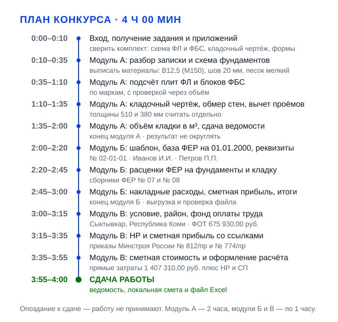
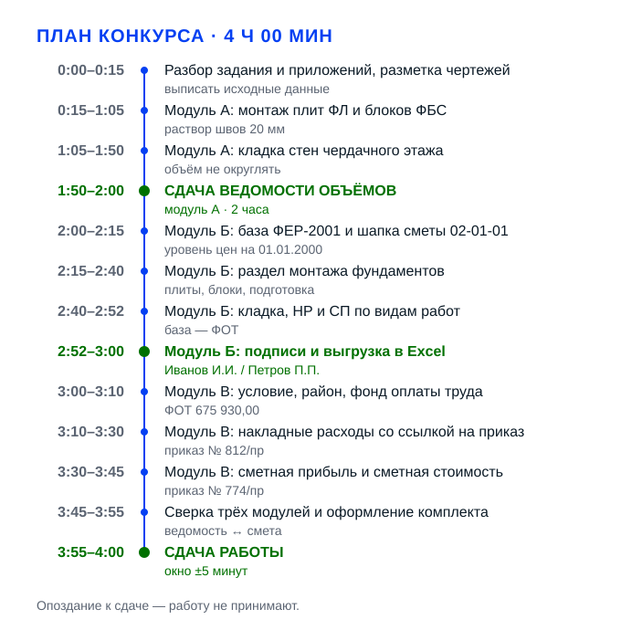
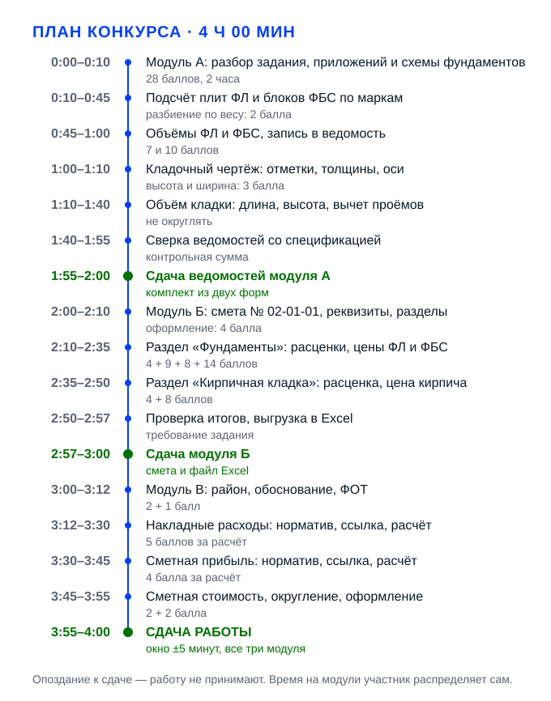

Сметное дело (Р)
Задания ниже — официальные файлы «Абилимпикс» (источник: abilympics-russia.ru), разложенные по категориям. Решения написаны по тексту задания, регламенту и критериям оценки; в них указано, что именно проверяет эксперт.
Школьник
14–16 лет, базовый уровень заданияВыдержка из официального конкурсного задания: страницы, относящиеся к категории «Школьник» (стр. 5–8 источника).
Пошаговое решение
Задание для школьников длится четыре часа и состоит из трёх модулей, которые держатся друг за друга: сначала два часа на подсчёт объёмов работ по схеме ленточного фундамента и кладочному чертежу чердачного этажа, потом час на локальную смету по сборникам ФЕР на 01.01.2000 и ещё час на задачу по ценообразованию без сметной программы. Ошибка в первом модуле тянется дальше: неверный объём попадает в смету, а смета — в итог. Поэтому здесь важнее порядок действий, чем скорость: разобрать приложения, выписать характеристики материалов, посчитать по формуле, проверить себя вторым способом и только потом переносить цифры в следующий документ. Отдельная часть баллов даётся за оформление — номер расчёта, названия разделов, дату и подписи, и эти баллы теряются чаще всего просто по невнимательности.

Задача 1. Подсчитать объёмы работ по монтажу фундаментовМодуль А · 2 часа из 4 · ведомость объёмов работ
Первая половина модуля А: разобрать пояснительную записку и схему расположения элементов ленточного фундамента, а затем заполнить ведомость подсчёта объёмов по плитам ФЛ и блокам ФБС. Здесь ещё ничего не считается в рублях, но именно эти кубометры и штуки перейдут в локальную смету модуля Б, поэтому каждая строка ведомости должна быть объяснима формулой, а не взята на глаз. Работа идёт по форме, которую выдают организаторы: менять её графы нельзя, дописывать свои столбцы тоже.
Действие 1.1. Разобрать задание и схему фундаментов
Шаг 1.1.1
Раскладываем на столе весь комплект: лист задания, пояснительную записку по фундаментам, схему расположения элементов ленточных фундаментов с марками плит ФЛ и блоков ФБС и пустую форму ведомости. Читаем задание целиком и подчёркиваем всё, что задаёт цифры: плиты укладывают на выровненное основание или утрамбованную песчаную подготовку из песка природного обогащённого мелкого, блоки ставят на растворе с перевязкой вертикальных швов толщиной 20 мм, бетон тяжёлый класса В12,5 (М150). Эти строки станут строками ведомости, поэтому сразу выписываем их на черновик.
Модуль А занимает два часа из четырёх и заканчивается ведомостью объёмов работ, от которой целиком зависит модуль Б: если объём посчитан неверно, локальная смета на 01.01.2000 будет считаться по чужому количеству и потеряет баллы дважды — и за ведомость, и за смету. Пояснительная записка при этом единственный законный источник характеристик материалов, и любая цифра по памяти расходится с ней, а расхождение видно эксперту по первой же строке.
На черновике должны появиться три опорные записи: песчаная подготовка из песка природного обогащённого мелкого, вертикальный шов 20 мм с обязательной перевязкой, бетон класса В12,5 (М150). Проверьте, что рядом нет ничего про кирпич и раствор М50 — это уже другая часть задания, и смешивать их в одной записи нельзя.
Типичная ошибка — начать считать плиты, не дочитав записку до конца, и потом выяснить, что часть конструкций описана другими материалами. Вторая, ещё более частая, — считать по представлению о «стандартном» фундаменте: тогда в смете появятся расценки на конструкцию, которой в задании нет.
Эксперт проходит по рабочим местам в первые минуты и смотрит, читает ли участник приложения или сразу берётся за калькулятор, а также выписаны ли характеристики материалов отдельно.
Шаг 1.1.2
Берём схему расположения элементов ленточного фундамента и разбираем её по осям: находим несущие стены, вдоль которых идёт лента, читаем маркировку плит вида ФЛ 8-24, ФЛ 10-24, ФЛ 12-24, где первые числа — ширина и длина в дециметрах, и маркировку блоков вида ФБС 24-4-6, ФБС 12-4-6, ФБС 9-4-6, где зашифрованы длина, толщина и высота. Проходим схему по периметру и по внутренним стенам, отмечая на распечатке точками каждую плиту и каждый блок, чтобы не посчитать элемент дважды на пересечении осей.
Схема — это чертёж, а не картинка: именно по ней определяется количество элементов, и именно количество, умноженное на объём одного элемента, даёт кубометры для ведомости. Если пройти схему «на глаз», ошибка обычно получается в две-три плиты на внутренних стенах, а это уже заметная разница в объёме монтажа и, соответственно, в стоимости раздела локальной сметы.
Проверьте себя так: сумма плит по всем осям должна совпадать с числом точек, которые вы поставили на распечатке, а количество марок в списке — с количеством разных обозначений на схеме. Если какая-то марка встретилась один раз, перепроверьте её отдельно: одиночные элементы чаще всего и пропускают.
Самая частая ошибка — считать блоки по высоте стены «в один ряд», не замечая, что на схеме показаны два или три ряда ФБС, и тогда количество занижается вдвое. Вторая — терять плиты под внутренними несущими стенами, потому что взгляд привычно идёт только по наружному периметру.
Эксперт смотрит на распечатку схемы: есть ли на ней пометки, ведётся ли счёт по осям, не считает ли участник элементы прямо с экрана, тыкая пальцем в монитор.
Шаг 1.1.3
Готовим форму ведомости: вписываем в шапку наименование объекта и раздела, затем размечаем графы — номер строки, наименование работ, формула подсчёта, единица измерения, количество. Формула заполняется обязательно и полностью: не «по схеме», а, например, «12 плит ФЛ 8-24 по осям 1–4». Единицы измерения выписываем те, что приняты для монтажа сборных конструкций: для плит и блоков это кубический метр, а количество штук идёт отдельной справочной строкой.
Ведомость объёмов работ — это документ, по которому потом работает сметчик, и проверяющий читает его без ваших пояснений, поэтому каждая цифра должна быть восстановима из формулы. Форма дана не случайно: в ней уже расставлены графы под единицы измерения сборника ФЕР, и если записать объём в штуках там, где расценка измеряется кубометрами, при составлении сметы придётся пересчитывать всё заново.
Проверьте шапку и графы до начала счёта: наименование раздела совпадает с формулировкой задания, графа «формула» не пустая, единица измерения стоит в каждой строке. Удобный признак готовности — по форме понятно, что считалось, даже если смотреть на неё через день.
Ошибка новичка — заполнять форму «после того, как посчитаю», на отдельном листе: тогда часть строк теряется при переносе, а формулы задним числом не восстанавливаются. Вторая — оставлять графу единиц измерения пустой, рассчитывая вписать её потом, и забыть.
Эксперт проверяет форму в конце модуля А, и первое, на что он смотрит, — заполнена ли графа формулы подсчёта и совпадают ли единицы измерения с принятыми для этих работ.
Шаг 1.1.4
Сверяем задание с формой ещё раз, но уже с карандашом в руке: в задании требуется заполнить ведомость подсчёта объёмов по монтажу ФЛ и ФБС, значит, в форме должно быть две смысловые группы строк — плиты ленточных фундаментов и стеновые блоки, и внутри каждой группы разбивка по маркам. Если в форме предусмотрена строка под песчаную подготовку, её тоже заполняем, потому что подготовка описана в записке как отдельная работа. Всё, чего в задании нет, в ведомость не добавляем, даже если «так обычно делают».
Лишние строки в ведомости так же опасны, как пропущенные: каждая строка потом превращается в расценку локальной сметы, а расценка, которой нет в задании, читается как непонимание состава работ. Разбивка по маркам нужна потому, что плиты разной ширины и блоки разной длины в сборнике ФЕР идут разными расценками с разной стоимостью.
Структура формы готова, если по ней можно назвать состав работ вслух за полминуты: сначала подготовка основания, затем плиты по маркам, затем блоки по маркам. Если назвать не получается, значит, строки стоят вперемешку и считать будет тяжело.
Частая ошибка — записать все плиты одной строкой «плиты ФЛ — 14 штук», потеряв марки: в смете придётся выбирать одну расценку на все плиты, и стоимость раздела уйдёт от правильной. Вторая — добавить в ведомость работы, которых в задании нет, например гидроизоляцию, и потерять время на подсчёт ненужного.
Эксперт сверяет состав строк ведомости с составом работ в задании и отмечает случаи, когда участник добавил работы «от себя» или оставил строку без единицы измерения. Он же смотрит, совпадают ли названия разделов с формулировками задания, ведь по ним строятся разделы локальной сметы.
Действие 1.2. Посчитать плиты ленточных фундаментов ФЛ
Шаг 1.2.1
Идём по схеме по порядку: сначала наружные стены по периметру, затем внутренние несущие. Для каждой марки плит ведём отдельный счёт, записывая его засечками по осям, например «ФЛ 8-24: ось 1 — 4 шт., ось А — 6 шт.». Считаем именно плиты, а не метры: на углах и в местах примыкания внутренних стен укладываются доборные элементы, обозначенные своей маркой. После обхода схемы складываем засечки по каждой марке.
Количество плит — первая величина, которая попадёт в ведомость и потом в смету, и она определяет объём монтажа в кубометрах. Считать по осям, а не «на глаз по картинке», нужно потому, что на пересечениях осей элементы визуально накладываются друг на друга, и сплошной пересчёт даёт завышение на две-четыре штуки, что для фундамента заметно.
Проверка простая: сумма плит по всем маркам, делённая на количество осей, должна давать целое или близкое к целому число, а общее количество — совпадать с числом точек на распечатке. Отдельно пересчитайте угловые плиты: их всегда столько же, сколько наружных углов здания.
Классическая ошибка — считать плиты «по длине стены, делённой на длину плиты», и получать дробное число, которое потом округляют вниз: часть плит исчезает из ведомости. Вторая — не заметить доборные плиты сокращённой длины, которые на схеме подписаны отдельной маркой.
Эксперт смотрит на черновик: видны ли засечки по осям, есть ли разбивка по маркам или участник пишет одно общее число, которое невозможно проверить. Отдельно он отмечает, отмечены ли на распечатке схемы угловые и доборные плиты, потому что именно там чаще всего теряется количество.
Шаг 1.2.2
Переводим штуки в кубометры. Объём одной плиты берём из спецификации, если она выдана, либо перемножаем габариты марки: для ФЛ 8-24 это примерно 0,8 м на 2,38 м на 0,3 м, для ФЛ 10-24 — 1,0 м на 2,38 м на 0,3 м, для ФЛ 12-24 — 1,2 м на 2,38 м на 0,3 м. Умножаем объём одной плиты на количество этой марки, складываем по маркам и получаем общий объём монтажа в кубометрах, записывая промежуточные значения.
Расценки сборника ФЕР на укладку блоков и плит ленточных фундаментов измеряются кубическим метром конструкции, поэтому ведомость обязана дать именно объём, а не штуки. Если объём взять «по одной плите на все марки», плиты разной ширины и высоты смешаются, и стоимость раздела в локальной смете разойдётся с правильной на десятки процентов.
Сойдитесь по контрольной сумме: общий объём плит должен быть равен сумме произведений «объём одной плиты × количество» по каждой марке, и это же число должно получиться, если пересчитать в обратном порядке — от общего объёма к штукам. Расхождение хотя бы на 0,01 м³ означает арифметическую ошибку, а не погрешность округления.
Самая дорогая ошибка — перепутать габариты и взять высоту плиты 0,5 м вместо 0,3 м: объём вырастает почти вдвое, и в смете появляется монтаж, которого нет. Вторая — округлить объём одной плиты до 0,5 м³ «для удобства» и потерять точность на всех строках сразу.
Эксперт при проверке ведомости пересчитывает одну-две строки своим калькулятором, и расхождение в объёме одной плиты видно сразу. Он также смотрит, записаны ли промежуточные значения: по ним понятно, считался объём по маркам или взят общей цифрой «с потолка».
Шаг 1.2.3
Отдельной строкой считаем песчаную подготовку под плиты, если она предусмотрена формой: площадь подготовки равна площади опирания плит, то есть длине ленты, умноженной на ширину плиты, а объём — площади, умноженной на толщину слоя песка из записки или с разреза. Песок в записке назван точно: природный обогащённый для строительных работ мелкий, и эта формулировка переносится в ведомость. Если толщина слоя не указана, работаем только с площадью.
Подготовка — самостоятельная работа со своей расценкой, и её нельзя «спрятать» внутрь монтажа плит: в смете она проходит по сборнику на земляные и подготовительные работы. Площадь подготовки нужна ещё и для проверки: она не может быть больше площади опирания плит, и если получилась больше, значит, в расчёт попала лишняя длина ленты.
Сверьте: площадь подготовки, делённая на ширину плиты, даёт длину ленты, а длина ленты должна совпадать с суммой длин всех плит по ведомости. Если числа не сходятся, ищите ошибку в длинах, а не в площади.
Ошибка — считать подготовку по всей площади застройки, включая участки без фундамента: объём песка вырастает в разы. Вторая — записывать песок без характеристики «обогащённый мелкий», из-за чего в смете подбирается другая расценка на материал.
Эксперт проверяет, соответствует ли площадь подготовки площади опирания плит, и смотрит, перенесена ли характеристика песка из записки дословно. Если толщина слоя в задании не указана, правильным считается решение работать с площадью, а не придумывать толщину.
Шаг 1.2.4
Заносим результат по плитам в ведомость: по каждой марке отдельная строка с формулой, в графе количества — объём в кубометрах, а в примечании или соседней графе — количество штук, если форма это позволяет. Пишем число полностью, без сокращений вида «14,2 м³ примерно», и не округляем до целых: для монтажа сборных конструкций точность до двух знаков после запятой нормальна и проверяема.
Строка ведомости — это будущая строка сметы, и её удобство важнее красоты: сметчик должен видеть и объём, и марку, иначе он не сможет выбрать расценку. Полные числа нужны потому, что при округлении каждой строки до целых сумма по разделу уходит от правильной на несколько кубометров, а это уже другая стоимость.
Проверьте строку по трём признакам: наименование содержит слово «плиты» и марку, единица измерения — кубический метр, количество совпадает с вашим черновиком до второго знака. После этого пересчитайте сумму всех строк по плитам ещё раз, отдельно от черновика.
Типичная ошибка — записать в ведомость штуки, а в смете потом умножать на объём вручную: при спешке множитель теряется. Вторая — округлить 0,684 м³ до 0,7 м³ и получить систематическое завышение по всем строкам.
Эксперт сравнивает количество в ведомости с объёмом, который указан в локальной смете модуля Б: расхождение между документами участника читается как небрежность.
Действие 1.3. Посчитать стеновые блоки ФБС и закрыть ведомость
Шаг 1.3.1
Считаем блоки ФБС по рядам: на схеме лента показана в плане, а число рядов по высоте задаётся разрезом или пояснительной запиской. Для каждого ряда проходим по осям и отмечаем блоки по маркам, помня, что длина зашифрована в марке: ФБС 24 — 2380 мм, ФБС 12 — 1180 мм, ФБС 9 — 880 мм, а толщина и высота идут вторым и третьим числами. На углах ставим доборные блоки, подписанные своими марками, и помним, что перевязка вертикальных швов обязательна.
Количество блоков определяет и объём кладки сборных фундаментов, и расход раствора на швы толщиной 20 мм. Если считать блоки «по площади стены», теряется разница между марками, а вместе с ней и правильная расценка: блоки толщиной 400 и 600 мм в сборнике идут разными строками с разной стоимостью кубометра.
Проверка по рядам: количество блоков в каждом ряду должно быть примерно одинаковым, а разница объясняться только доборными элементами на углах. Если один ряд получился вдвое короче другого, скорее всего, часть блоков этого ряда просто не отмечена.
Частая ошибка — считать только один ряд и умножать на число рядов, забывая, что на углах количество блоков в разных рядах различается из-за перевязки. Вторая — не учитывать растворные швы 20 мм при проверке длины: десять блоков по 2380 мм с девятью швами дают не 23,8 м, а 23,98 м, и это расхождение видно при сверке с чертежом.
Эксперт проверяет, различает ли участник марки блоков и считает ли он по рядам; одно общее число блоков без разбивки он отмечает как слабое место. Он же смотрит, учтена ли перевязка вертикальных швов, ведь от неё зависит и количество доборных блоков на углах.
Шаг 1.3.2
Переводим блоки в кубометры так же, как плиты: объём одного блока по марке умножаем на количество. Для ФБС 24-4-6 это 2,38 × 0,4 × 0,6 = 0,5712 м³, для ФБС 24-6-6 — 0,857 м³, для ФБС 12-4-6 — 0,283 м³, для ФБС 9-4-6 — 0,212 м³. Считаем по каждой марке отдельно, складываем и записываем общий объём монтажа блоков. Раствор на швы отдельной строкой считать не нужно, если форма этого не требует: он учтён в расценке на монтаж.
Объём блоков — это то, что попадёт в смету по сборнику ФЕР на укладку блоков стен подвалов, и именно он определяет стоимость раздела. Отдельный подсчёт по маркам нужен потому, что блоки толщиной 400 и 600 мм имеют разную стоимость кубометра, и смешение марок в одной строке даёт ошибку в итоге раздела.
Сойдитесь по контрольной цифре: суммарный объём блоков, делённый на объём одного блока самой ходовой марки, должен давать число, близкое к общему количеству штук. Если получается сильно меньше или больше, значит, в расчёт попала не та высота или толщина.
Ошибка — брать высоту блока 0,6 м как толщину и считать объём 2,38 × 0,6 × 0,6: получается на треть больше реального. Вторая — складывать блоки разных марок в один объём и потом в смете выбирать одну расценку «среднюю».
Эксперт выборочно пересчитывает объём одного блока и сверяет его с тем, что записал участник; ошибка в габаритах видна с первого взгляда. Он также смотрит, разведены ли марки по отдельным строкам, потому что от этого зависит выбор расценки в модуле Б.
Шаг 1.3.3
Закрываем ведомость итогом по разделу: отдельно объём плит, отдельно объём блоков, отдельно площадь или объём подготовки, если она считалась. Итог пишем одной строкой внизу таблицы, а не в свободном поле, и обязательно проверяем, что сумма строк совпадает с итогом. Если форма предусматривает графу «примечание», в ней коротко указываем основание — «по схеме расположения элементов», «по спецификации», без общих слов вроде «согласно заданию».
Итог раздела — это то, что эксперт сверит с локальной сметой модуля Б, и любое расхождение между документами одного участника трактуется не в его пользу. Примечание с основанием подсчёта нужно для того, чтобы проверяющий мог за минуту восстановить логику: смотреть схему или спецификацию.
Проверьте тремя движениями: сумма строк по плитам равна итогу по плитам, сумма по блокам равна итогу по блокам, единицы измерения во всех строках одинаковые. После этого перечитайте наименование раздела — оно должно совпадать с формулировкой задания.
Типичная ошибка — вписать в итог число, посчитанное на черновике до последней правки строк: одна исправленная цифра в середине таблицы ломает итог, а заметить это в спешке трудно. Вторая — оставить в примечании «см. схему» без указания, что именно смотрели.
Эксперт сверяет итог ведомости с суммой строк и с объёмами в локальной смете; арифметическая нестыковка внутри одного документа снижает оценку сразу по двум модулям.
Шаг 1.3.4
Последний шаг первой задачи: перечитываем ведомость целиком, сверяя каждую строку с заданием и запиской, подписываем её и откладываем в папку сдачи, а не держим на краю стола под калькулятором. Заодно проверяем, что в ведомости нет чисел, полученных «обратным» способом — подгонкой под красивый результат: если объём не сходится на 0,02 м³, ищите ошибку в исходных данных, а не правьте итог.
Ведомость — самостоятельный результат модуля А, и её сдают как документ, а не как черновик для себя: подпись и аккуратность входят в оценку оформления. Подгонка чисел опаснее ошибки, потому что при проверке не сходится ни одна контрольная сумма, и эксперт не может понять, где именно потерян объём.
Готовность проверяется так: вы можете, не заглядывая в черновик, объяснить происхождение любой цифры в ведомости за десять секунд. Если хотя бы одна строка вызывает сомнение, пересчитайте её сейчас, пока в запасе есть время модуля А.
Ошибка — сдать ведомость с пустой графой формулы, рассчитывая, что «и так понятно»: именно эта графа чаще всего и проверяется. Вторая — оставить ведомость на столе без подписи и вспомнить о ней в конце конкурса, когда её уже некуда деть.
Эксперт забирает ведомость по окончании модуля А и оценивает её отдельно от сметы, поэтому документ должен быть закончен к моменту, когда объявят переход ко второму модулю.
Задача 2. Подсчитать объём кирпичной кладки стен чердачного этажаМодуль А · вторая половина · ведомость объёмов работ
Вторая часть модуля А: по кладочному чертежу чердачного этажа определить объём кладки в кубометрах и занести его в ведомость. Работа сложнее, чем с фундаментами, потому что объём складывается из площади стен за вычетом проёмов и толщины кладки, а толщина задаётся системой кладки, а не размерами кирпича напрямую. Результат по требованию задания не округляют, и это не придирка: округление здесь идёт в смету и меняет стоимость раздела.
Действие 2.1. Прочитать кладочный чертёж
Шаг 2.1.1
Берём кладочный чертёж чердачного этажа и читаем его в трёх проекциях: план с осями и толщинами стен, разрез с отметками и высотой этажа, фрагменты и сечения с узлами. Выписываем на черновик всё, что понадобится: длины наружных стен по осям, длины внутренних стен, толщину каждой стены в миллиметрах, высоту этажа от отметки перекрытия до низа чердачного перекрытия. Сразу отмечаем на плане, какие стены несут кладку, а какие выполнены из других материалов, потому что объём считается только по кирпичу.
Чертёж — единственный источник геометрии в этой задаче, и любая длина, взятая не с него, сразу даёт ошибку в объёме. Читать нужно именно три проекции, потому что толщина стены на плане может быть показана без размерной линии, а высота вообще есть только на разрезе.
Проверьте: на черновике есть длина, толщина и высота для каждой стены, и сумма длин наружных стен по осям сходится с периметром здания, который вы можете посчитать по крайним осям. Если сходится, геометрия считана верно.
Ошибка — брать размеры с плана первого этажа, где стены толще: чердачный этаж часто имеет другую толщину, и объём получается завышенным. Вторая — определять высоту «на глаз» по пропорциям чертежа, не читая отметки на разрезе.
Эксперт смотрит, работает ли участник с разрезом или только с планом: без разреза высоту взять неоткуда, и это заметно по черновику. Он же проверяет, выписаны ли толщины стен отдельно от длин, потому что смешивать их в одной записи — верный путь к ошибке в объёме.
Шаг 2.1.2
Определяем толщину кладки в кирпичах. Кирпич по заданию керамический полнотелый М100 размером 250 × 120 × 65 мм, значит, один кирпич в длину — 250 мм, кладка «в один кирпич» даёт 250 мм плюс шов, «в полтора» — 380 мм, «в два» — 510 мм, «в два с половиной» — 640 мм. Сверяем с чертежом: если стена на плане 510 мм, это кладка в два кирпича, если 640 мм — в два с половиной. Записываем для каждой стены её толщину и число кирпичей, чтобы потом не пересчитывать заново.
Толщина стены — второй множитель в формуле объёма, и ошибка в ней страшнее ошибки в длине, потому что она умножает весь результат. Система кладки по заданию многорядная: пять ложковых рядов перевязываются шестым тычковым, и это влияет не на толщину, а на расход кирпича и раствора, поэтому при выборе расценки её тоже придётся указать.
Сверьте толщины с планом по всем стенам: сумма толщины наружной стены и двух привязок к осям должна совпадать с габаритом здания на плане. Если стена 510 мм, а по плану получается 380 мм, значит, толщина прочитана неверно.
Типичная ошибка — считать все стены одинаковой толщины, потому что «этаж один и тот же»: на чердачном этаже внутренние стены часто тоньше наружных. Вторая — путать 380 и 510 мм и получать объём с разницей в четверть.
Эксперт проверяет, различает ли участник толщину кладки по стенам и указана ли она в ведомости отдельной строкой для каждой толщины. Он также смотрит, названа ли система кладки: по заданию она многорядная, с пятью ложковыми рядами и шестым тычковым.
Шаг 2.1.3
Выписываем длины стен по наружному обводу и по внутренним осям, соблюдая одно правило: наружные стены измеряем по внешним граням, внутренние — по длине между внутренними гранями наружных стен. Такой порядок нужен, чтобы углы не посчитались дважды: если взять все стены по осям, каждый угол войдёт в объём два раза, и на небольшом этаже это даёт лишние кубометры. Длины записываем с точностью до сантиметра, как на чертеже, и не округляем до десятых.
Правило обмера определяет, сойдётся ли ваш объём с контрольным значением: при двойном счёте углов ошибка достигает нескольких процентов, а при обмере «по осям всё подряд» её невозможно найти, не перечертив план. В смете объём кладки идёт по сборнику ФЕР на конструкции из кирпича, и завышенный объём прямо увеличивает стоимость раздела.
Проверка: сумма длин наружных стен по внешним граням должна быть больше периметра по осям ровно на четыре толщины стены. Если разница другая, значит, где-то взят не тот обмер и угол посчитан неверно, и это надо исправить до перехода к площадям.
Самая частая ошибка — сложить длины всех стен по осевым линиям и не вычесть углы: объём вырастает, а найти ошибку потом трудно. Вторая — измерять внутренние стены по наружным граням, захватывая часть наружной стены.
Эксперт смотрит на черновик обмера: есть ли отдельно наружные и внутренние стены, указано ли, по каким граням сняты размеры. Обмер «по осевым линиям всё подряд» он отмечает как методическую ошибку, даже если итоговое число случайно оказалось близким.
Шаг 2.1.4
Отдельно выписываем все проёмы: окна, двери, ворота, лазы, а также участки, занятые встроенными конструкциями. Для каждого проёма берём ширину и высоту с чертежа или из ведомости заполнения проёмов, перемножаем и получаем площадь. Проёмы группируем по толщине стены, в которой они находятся, потому что вычитать их придётся из площади соответствующей стены. Если маркировка окна на плане повторяется, считаем площадь одного и умножаем на количество, а не измеряем каждое заново.
Проёмы — единственное, что вычитается из площади стен, и именно на них чаще всего теряются или приобретаются кубометры. Задание требует точности до сотых, а площадь проёма, посчитанная «примерно», сдвигает весь объём: одно окно 1,5 × 1,5 м — это 2,25 м², и на стене в два кирпича оно убирает больше кубометра кладки.
Сверьте количество проёмов с планом: сколько оконных и дверных проёмов нарисовано, столько должно быть в списке. Площади однотипных проёмов должны совпадать между собой — если двери одной марки дали разные площади, значит, где-то перепутана высота.
Ошибка — вычитать проёмы из площади стен другой толщины, например окна наружной стены вычесть из объёма внутренних стен. Вторая — забыть проёмы в стенах лестничной клетки и вентиляционные отверстия, которые на плане выглядят как небольшие разрывы.
Эксперт проверяет список проёмов на полноту и смотрит, сгруппированы ли они по толщине стены: без группировки вычитание почти всегда делается не туда.
Действие 2.2. Собрать площадь стен за вычетом проёмов
Шаг 2.2.1
Считаем площадь каждой стены: длину умножаем на высоту этажа. Высоту берём с разреза от отметки верха перекрытия до низа чердачного перекрытия, а не «до потолка на глаз». Если стены разной высоты, например у лестничной клетки или в местах примыкания к перепаду отметок, каждую высоту считаем отдельно. Результат по каждой стене записываем в таблицу обмера, чтобы потом было видно, откуда взялась каждая площадь.
Площадь стены — основа всего подсчёта: объём кладки получается умножением этой площади на толщину. Если высоту взять завышенной, ошибка умножится на всю длину стен, а это десятки кубометров. Отдельные строки по каждой стене нужны для проверки: по ним видно, какая стена дала отклонение.
Проверьте: сумма площадей наружных стен, делённая на их суммарную длину, должна давать высоту этажа. Если получается другая цифра, значит, где-то высота взята не та или пропущена стена, и искать это надо до вычитания проёмов.
Ошибка — брать высоту этажа «в чистоте» без учёта толщины перекрытия и получать площадь больше реальной. Вторая — считать площадь всех стен одной строкой, теряя возможность найти ошибку в конкретной стене.
Эксперт смотрит на таблицу обмера: есть ли в ней отдельные строки по стенам и указана ли высота, с которой снят размер. Он же проверяет, не взята ли высота «в чистоте», без толщины перекрытия: это самая частая причина завышенной площади.
Шаг 2.2.2
Вычитаем проёмы: из площади каждой стены убираем площади тех проёмов, которые в ней находятся, и получаем площадь кладки. Делаем это по каждой стене отдельно, а не из общей суммы, потому что проёмы привязаны к конкретным стенам и к конкретной толщине. Площадь кладки не может быть отрицательной или нулевой: если после вычитания получается ноль, значит, проёмы вычтены дважды или взяты из другой стены.
Площадь кладки — то, что умножается на толщину, и правило вычета проёмов прямо задано методикой подсчёта объёмов: из площади стен вычитаются проёмы по наружному обводу. Если этого не сделать, объём вырастает на площадь всех окон и дверей, а в смете появляется кладка, которой физически нет.
Сверьте контроль: площадь всех стен минус площадь всех проёмов должна равняться сумме площадей кладки по стенам. Это равенство проверяется за минуту и ловит почти все ошибки вычета, включая те, что спрятаны в отдельных строках.
Частая ошибка — вычесть все проёмы из общей площади стен, не разделяя по толщинам: тогда в одной строке объём занижен, в другой завышен, а сумма вроде бы сходится. Вторая — не вычесть проёмы вовсе, посчитав, что «это мелочь».
Эксперт проверяет, вычтены ли проёмы и совпадает ли площадь кладки с разницей «площадь стен минус проёмы». Если участник вычел все проёмы из общей площади, не разделяя по толщинам, эксперт отмечает это как ошибку методики, а не как арифметическую неточность.
Шаг 2.2.3
Проверяем, что ничего лишнего в площадь не попало: участки, занятые железобетонными перемычками, вентканалами, дымоходами и закладными деталями, из площади кладки исключаются, если они показаны на чертеже отдельными элементами. Если перемычки показаны как сборные железобетонные изделия, их объём пойдёт отдельной строкой и отдельной расценкой, а не в кладке. Смотрим на чертёж именно с этой мыслью: что здесь не кирпич.
Двойной счёт конструкций — одна из двух главных причин расхождения ведомости с контрольным значением, наряду с двойным счётом углов. Перемычки в сборнике ФЕР идут по сборнику сборных железобетонных конструкций, и если их объём попал в кладку, в смете появится лишняя работа, а нужная останется без объёма.
Сверьте по чертежу: количество перемычек в вашем списке совпадает с количеством, нарисованным над проёмами, и их объём не входит в площадь кладки. Если перемычек на чертеже нет, эта проверка занимает десять секунд.
Ошибка — включать перемычки в кладку «потому что они в стене»: объём завышается незначительно, но расценка на кладку применяется к чужим кубометрам. Вторая — вычитать вентканалы, которые на чертеже показаны как часть кладки, и терять объём.
Эксперт смотрит, различает ли участник материалы в стене: кладка, сборные перемычки и закладные детали должны быть разведены по строкам. Он также проверяет, не вычтены ли вентканалы, которые на чертеже показаны как часть кладки.
Шаг 2.2.4
Записываем итог по площади кладки с разбивкой по толщинам: отдельно стены 510 мм, отдельно 380 мм, отдельно внутренние 250 мм. Разбивка нужна не для красоты, а потому что в сборнике ФЕР кладка стен разной толщины идёт разными расценками, и смета модуля Б будет составляться по этим строкам. Если чертёж даёт только две толщины, значит, и строк будет две — не выдумывайте третью «на всякий случай».
Разбивка по толщинам — это мостик между модулем А и модулем Б: сметчик берёт строку «кладка 510 мм — столько-то м³» и ставит напротив неё расценку. Если все толщины свалены в один объём, выбрать расценку невозможно, и участник либо теряет время на пересчёт, либо ставит неверную расценку и теряет баллы за смету.
Проверьте: сумма площадей по толщинам равна общей площади кладки, а количество толщин совпадает с количеством разных размеров стен на плане. Это две цифры, которые сверяются за десять секунд и сразу показывают, не потеряна ли внутренняя стена.
Ошибка — отнести все стены к одной толщине, «средней по этажу»: расценка в смете привяжется к несуществующей конструкции. Вторая — забыть внутренние стены 250 мм, потому что они тоньше и на плане выглядят как перегородки.
Эксперт проверяет, совпадает ли число строк по толщинам с числом толщин на чертеже, и нет ли «средних» значений. Строка «стены 380–510 мм» для него признак того, что участник не разобрался в геометрии этажа.
Действие 2.3. Перевести площадь в объём кладки
Шаг 2.3.1
Умножаем площадь кладки каждой толщины на её толщину в метрах: 0,51 для кладки в два кирпича, 0,64 для двух с половиной, 0,38 для полутора, 0,25 для одного кирпича. Считаем на калькуляторе, записывая результат до четвёртого знака, и не округляем промежуточные значения: в задании прямо сказано, что полученный результат не округляют, и это требование относится именно к объёму кладки. Итог по этажу — сумма объёмов по всем толщинам.
Объём в кубометрах — это то, что требует ведомость и что потом ставится в локальную смету по расценке на кладку. Промежуточные округления здесь опасны: при площади в сотни квадратных метров округление каждого множителя до сотых даёт разницу в несколько кубометров, а это уже стоимость, а не погрешность.
Проверка через расход кирпича: на кубометр кладки из одинарного кирпича с учётом растворных швов идёт около 400 штук, значит, ваш объём, умноженный на 400, должен давать правдоподобное количество кирпича для этажа такого размера. Если получается кирпича в десять раз больше или меньше, ищите ошибку в разрядности.
Типичная ошибка — подставить толщину в сантиметрах, то есть умножить на 51 вместо 0,51: объём вырастает в сто раз, и это видно только при проверке через расход кирпича. Вторая — округлить 0,51 до 0,5 «для удобства» и потерять два процента объёма на ровном месте.
Эксперт пересчитывает одну строку объёма своим калькулятором и смотрит, в каких единицах подставлена толщина. Если объём завышен в сто раз, он сразу понимает причину и отмечает это как потерю контроля над расчётом.
Шаг 2.3.2
Отдельно проверяем объём по наружным стенам, потому что именно там чаще всего допускается ошибка с углами: пересчитываем объём наружных стен вторым способом — через периметр по осевым линиям минус четыре угла, умноженные на толщину и высоту. Два независимых способа должны дать близкие значения, расхождение больше одного процента означает ошибку в обмере. Этот пересчёт занимает три минуты и спасает самый весомый раздел ведомости.
Наружные стены дают основную часть объёма, и именно в них сосредоточены углы, из-за которых возникает двойной счёт. Второй способ расчёта — это не формальность, а реальная проверка: если он сходится с первым, можно не сомневаться в геометрии и спокойно переходить к смете.
Сравните два числа: объём по наружному обводу и объём по осям с вычетом углов. Разница до одного процента допустима и объясняется округлением длин, разница в пять процентов — это ошибка, которую нужно искать до перехода к модулю Б.
Ошибка — считать, что «второй способ всё равно даст то же самое», и не делать его: именно он ловит двойной счёт углов. Вторая — сравнивать объёмы, посчитанные по разным толщинам, и делать вывод об ошибке там, где её нет.
Эксперт ценит, когда участник показывает две независимые проверки: это видно по черновику и говорит о понимании методики, а не о механическом счёте. Он также смотрит, сравниваются ли объёмы одной и той же толщины, а не разные конструкции.
Шаг 2.3.3
Записываем объём кладки в ведомость: по строке на каждую толщину, с формулой вида «(длина 42,6 м × высота 2,8 м − проёмы 12,4 м²) × 0,51 м». В графе количества — объём в кубометрах с четырьмя знаками после запятой, как получилось при расчёте. Рядом, если форма позволяет, указываем количество кирпича и раствора, посчитанное по норме расхода, — это не требуется заданием, но помогает при проверке и при составлении сметы.
Формула в ведомости — это доказательство работы: по ней эксперт за минуту видит, что именно вы вычли и на что умножили. Четыре знака после запятой нужны потому, что задание запрещает округлять результат, а объём кладки в сотни кубометров чувствителен даже к третьему знаку.
Проверьте строку: формула воспроизводит ваше число при пересчёте на калькуляторе, единица измерения — кубический метр, наименование содержит толщину стены и материал. Если формула не воспроизводит число, значит, в неё не попала какая-то правка.
Ошибка — писать в ведомости только итог без формулы: проверяющему придётся додумывать, а любое сомнение трактуется не в пользу участника. Вторая — округлить объём до целых кубометров, прямо нарушив указание «не округлять».
Эксперт сверяет формулу и результат: если формула даёт другое число, строка считается необоснованной, даже когда итог случайно совпал с контрольным. Он также смотрит, не округлён ли объём до целых кубометров, ведь задание прямо требует не округлять.
Шаг 2.3.4
Сверяем объём кладки с расходом материалов из задания: кирпич керамический полнотелый М100 размером 250 × 120 × 65 мм и раствор кладочный цементно-известковый М50. По объёму кладки считаем количество кирпича по норме около 400 штук на кубометр и объём раствора около 0,24 кубометра на кубометр кладки, и проверяем, что числа выглядят разумно для чердачного этажа жилого дома. Это не отчётная цифра, а контрольная: она не идёт в ведомость, если форма её не требует.
Материалы в смете подбираются по расценке автоматически, но понимание их количества нужно, чтобы заметить грубую ошибку объёма: если на этаж выходит двадцать тысяч кирпичей, вы где-то умножили лишнее. Кроме того, марка кирпича и раствора — это характеристики, которые в смете попадают в наименование расценки и в примечание.
Проверка: количество кирпича, делённое на объём кладки, даёт около 400 штук, а объём раствора — около четверти объёма кладки. Оба отношения устойчивы и не зависят от размера этажа, поэтому ими удобно пользоваться.
Ошибка — подставлять норму расхода кирпича для кладки в один кирпич к стене в два кирпича и получать заниженное количество. Вторая — забывать, что многорядная система кладки, заданная в записке, меняет расход раствора.
Эксперт может спросить, сколько кирпича уйдёт на этаж: ответ, посчитанный по объёму, показывает, понимает ли участник физику кладки. Он также проверяет, названы ли марка кирпича М100 и раствор М50, потому что эти характеристики потом попадут в смету.
Действие 2.4. Закрыть ведомость и сдать модуль А
Шаг 2.4.1
Соединяем обе части ведомости в один документ: сначала фундаменты с плитами, блоками и подготовкой, затем стены чердачного этажа с разбивкой по толщинам. Проверяем сквозную нумерацию строк и то, что каждая часть имеет свой заголовок, повторяющий формулировку задания. Если форма дана на двух листах, подписываем оба, а не только последний, и следим, чтобы листы не разъехались по столу.
Ведомость сдают одним документом, и его читают целиком: разрозненные листы без нумерации и подписи на каждом выглядят как черновик. Заголовки частей нужны потому, что дальше по ним формируются разделы локальной сметы, и названия должны совпадать с теми, что будут в смете.
Проверьте: нумерация строк идёт подряд без пропусков и повторов, у каждой части есть заголовок, подписи стоят на всех листах. Пролистайте ведомость как чужой документ — понятно ли, что в ней считается.
Ошибка — сдать два листа без сквозной нумерации и потом выяснить, что второй лист потерялся. Вторая — назвать части своими словами, не совпадающими с формулировками задания, из-за чего разделы локальной сметы потом не связываются с ведомостью.
Эксперт принимает ведомость по окончании модуля А и первым делом проверяет комплектность: все ли листы на месте, все ли части подписаны, совпадают ли заголовки с формулировками задания.
Шаг 2.4.2
Проводим финальную арифметическую проверку: пересчитываем итоги по каждой части и общий итог, сверяем количество строк с количеством видов работ, которые вы выписали при чтении задания. Отдельно проверяем единицы измерения: для монтажа плит и блоков — кубометр, для подготовки — квадратный или кубический метр в зависимости от того, что требует форма, для кладки — кубический метр.
Арифметика в ведомости — самая обидная потеря баллов, потому что работа сделана, а документ не сходится. Единицы измерения проверяются вместе с итогами: если подготовка записана в кубометрах, а в форме графа под квадратные метры, число встанет не в ту графу.
Проверка занимает пять минут: сумма строк равна итогу, единицы совпадают с формой, ни в одной строке нет пустого количества. Если все три условия выполнены, ведомость готова к сдаче, и возвращаться к ней уже не нужно.
Ошибка — проверять только итог, не сверяя строки: одна строка может быть записана дважды, и тогда итог сойдётся, а объём будет завышен. Вторая — оставить строку с прочерком там, где работа есть, и потерять её при составлении сметы.
Эксперт выборочно пересчитывает итоги; расхождение между суммой строк и итогом он отмечает отдельно, как и пустые графы. Такие нестыковки внутри одного документа снижают оценку сразу по двум модулям.
Шаг 2.4.3
Убираем черновики в сторону и оставляем на столе только сдаваемые документы: ведомость и лист задания. Черновики с расчётами не выбрасываем — они могут понадобиться при составлении сметы в модуле Б, когда нужно будет вспомнить, откуда взялась цифра. Но на столе они не должны лежать поверх ведомости, потому что эксперт берёт документы сразу после сигнала.
Порядок на столе — часть оценки организации работы, и на сдаче это видно лучше всего: у участника с разложенными документами ничего не теряется. Черновики нужны именно вам: в модуле Б придётся объяснять себе, как получился объём, и пересчитывать его заново не будет времени.
Проверьте: на столе лежат ведомость и задание, черновики сложены отдельной стопкой, калькулятор и ручка на месте. Через десять секунд после сигнала вы должны уметь отдать документ, не ища его под бумагами.
Ошибка — держать ведомость под черновиками и искать её по сигналу, теряя минуты из модуля Б. Вторая — выбросить черновики и потом гадать, откуда взялся объём кладки, когда смета потребует объяснить цифру.
Эксперт забирает ведомость по сигналу; заминка в этот момент читается как неготовность результата модуля. Он же отмечает, в каком состоянии оставлено рабочее место, ведь организация работы входит в общую оценку.
Шаг 2.4.4
Переходим к модулю Б с чистой головой: коротко проговариваем себе состав ведомости — сколько строк по фундаментам, сколько по кладке, какие толщины стен, какой общий объём. Это занимает минуту и настраивает на следующий модуль, где эти же цифры будут превращаться в расценки. Заодно проверяем, что в запасе осталось время: модуль А занимает два часа из четырёх, и если вы закончили раньше, лучше потратить остаток на проверку, чем начинать смету в спешке.
Переход между модулями — точка, где теряется больше всего времени: участник начинает искать в смете цифры, которых сам не помнит, и тратит на это половину часа, отведённого на смету. Проговаривание состава ведомости стоит минуту и экономит десять в модуле Б.
Проверьте по часам: сколько времени ушло на модуль А и сколько осталось до конца конкурса. Если на ведомость ушло больше двух часов, придётся ускоряться в смете, и лучше знать это заранее, чем обнаружить в середине модуля Б.
Ошибка — начать смету, не закрыв ведомость, и потом метаться между двумя документами. Вторая — потратить остаток модуля А на переписывание ведомости начисто, хотя исправления допустимы и время нужнее смете.
Эксперт отмечает момент перехода: кто закончил ведомость вовремя и спокойно перешёл к смете, а кто задержался и начал второй модуль с опозданием. По этому видно, умеет ли участник держать темп на четырёхчасовом задании.
Задача 3. Составить локальную смету на фундаменты и кладкуМодуль Б · 1 час из 4 · локальная смета
Модуль Б — это перевод ведомости в деньги: на основании спецификации, чертежей и пояснительной записки нужно собрать локальный сметный расчёт на монтаж фундаментов и кирпичную кладку стен чердачного этажа трёхэтажного 24-квартирного жилого дома в Ярославле по сборникам ФЕР с изменениями и дополнениями по состоянию на 01.01.2000. На всё отведён один час, поэтому смета собирается по заранее продуманной структуре, а не переписывается по ходу. Оформление здесь оценивается наравне с расчётом: номер расчёта 02-01-01, названия разделов, дата, подписи составителя и проверяющего входят в результат модуля.
Действие 3.1. Подготовить форму и реквизиты сметы
Шаг 3.1.1
Открываем шаблон локальной сметы, который выдали организаторы, или стандартную выходную форму сметной программы и сразу проверяем, какая нормативная база в ней стоит: нужны сборники ФЕР со всеми изменениями и дополнениями по состоянию на 01.01.2000. Если в программе по умолчанию подставлена другая база или текущий уровень цен, переключаем на базисный уровень 2001 года и больше его не трогаем. Проверяем, что шаблон сохраняется в нужную папку, а не в загрузки.
Вся смета должна быть в одной базе, иначе суммы по разделам нельзя сложить: расценки разных баз несопоставимы, а конкурсное задание прямо называет ФЕР на 01.01.2000. Смена базы в середине работы — самая дорогая ошибка модуля, потому что пересчитывать приходится всё, а времени на это уже нет.
Проверьте: в шапке формы и в свойствах расценок указана база ФЕР 2001, уровень цен базисный, единицы измерения не пересчитаны в текущие. Убедитесь, что в шаблоне работают формулы итогов, а не только текстовые поля.
Частая ошибка — заполнять форму, не проверив базу, и обнаружить это на первом же итоге, когда половина строк уже набрана. Вторая — работать в демонстрационном режиме программы, где часть расценок недоступна, и подставлять похожие вручную, не отмечая этого.
Эксперт проверяет базу до начала расчёта и в конце, при сдаче: несовпадение базы с заданием обнуляет расчётную часть модуля. Он же смотрит, в какой папке сохранён файл, потому что смета, оставшаяся в загрузках, при сдаче часто теряется.
Шаг 3.1.2
Заполняем реквизиты: наименование стройки и объекта — трёхэтажный 24-квартирный жилой дом в городе Ярославль, микрорайон «Авалон»; наименование работы — монтаж фундаментов и кирпичная кладка стен чердачного этажа; номер локального сметного расчёта 02-01-01; составил инженер-сметчик Иванов И.И., проверил начальник ПТО Петров П.П. Дату ставим текущую, ту, что стоит на календаре в день конкурса. Ничего из этих данных не сокращаем и не переставляем.
Реквизиты — отдельный критерий оформления, названный в задании прямым текстом, и они проверяются без всякого пересчёта. Кроме того, номер расчёта 02-01-01 связывает смету с объектом: по нему потом ищут документ в папке, и смета без номера читается как черновик, а не как результат модуля.
Проверьте по списку: объект, микрорайон, город, номер расчёта, обе фамилии с инициалами, дата. Все семь позиций должны стоять в шапке формы, а не в примечании внизу листа, иначе при распечатке они окажутся на другой странице.
Ошибка — указать только город и забыть микрорайон «Авалон» или перепутать номер расчёта. Вторая — подписать смету своей фамилией вместо указанных в задании Иванова и Петрова: это прямое расхождение с условием.
Эксперт сверяет шапку с заданием дословно и отдельно смотрит, стоит ли номер расчёта 02-01-01 и обе подписи. Отсутствие микрорайона или перепутанная фамилия проверяющего читаются как невнимательное чтение условия, а не как описка.
Шаг 3.1.3
Размечаем структуру: первый раздел — монтаж фундаментов, второй — кирпичная кладка стен чердачного этажа, в конце — итоги по разделам и общий итог по смете. Внутри первого раздела порядок такой: песчаная подготовка, плиты ФЛ по маркам, блоки ФБС по маркам. Во втором разделе — кладка по толщинам стен, ровно в том порядке, в каком строки стоят в ведомости модуля А.
Порядок строк повторяет ведомость не для красоты: так объём переносится без путаницы, а эксперт видит, что смета собрана по своему же подсчёту, а не по памяти. Разделы нужны ещё и потому, что накладные расходы и сметная прибыль считаются по видам работ, то есть по разделам.
Проверьте: количество строк в смете равно количеству строк в ведомости, а названия разделов совпадают с заголовками её частей. Если строк меньше, значит, какая-то работа потерялась при переносе, и искать её надо до ввода объёмов.
Типичная ошибка — свалить все расценки в один список без разделов: тогда накладные расходы приходится считать одной цифрой на всё, и расчёт перестаёт соответствовать видам работ. Вторая — менять порядок строк «для удобства» и терять строки.
Эксперт смотрит на структуру сверху: два раздела, внутри — работы по видам, в конце — итоги. Плоский список без разделов он отмечает как слабую сторону работы.
Шаг 3.1.4
Сверяем единицы измерения в шаблоне с ведомостью: монтаж плит и блоков — кубический метр, подготовка — квадратный или кубический метр, кладка — кубический метр. Там, где шаблон предлагает другую единицу, ничего не пересчитываем вручную, а меняем расценку на ту, у которой единица совпадает с ведомостью. Если единицы не совпадают, объём вводится в дополнительную строку с пересчётом и пометкой.
Единицы измерения — техническая ловушка модуля Б: расценка на кладку измеряется кубометром, а расценка на подготовку часто квадратным метром, и объём, введённый не в ту графу, даёт ошибку в разы. Проверка единиц занимает две минуты и снимает самую крупную категорию ошибок в этом модуле.
Проверьте построчно: у каждой расценки в графе единиц стоит то же, что в ведомости напротив того же объёма. Если хотя бы в одной строке единица другая, разберитесь с ней сразу, а не после ввода всех объёмов.
Ошибка — ввести объём кладки в строку с единицей «100 м³», не заметив множитель: стоимость раздела уменьшается в сто раз и выглядит неправдоподобно. Вторая — пересчитывать кубометры в квадратные метры «по толщине», теряя точность.
Эксперт выборочно сверяет единицы измерения в смете и ведомости: несовпадение он фиксирует как ошибку переноса данных. Особое внимание он уделяет строкам с множителем «100 м³», потому что там ошибка в сто раз не выглядит как описка.
Действие 3.2. Внести в смету монтаж фундаментов
Шаг 3.2.1
Подбираем расценки по сборнику ФЕР-2001 № 07 «Бетонные и железобетонные конструкции сборные»: для плит ленточных фундаментов и стеновых блоков это таблица на укладку блоков и плит ленточных фундаментов, внутри которой расценки различаются по массе и типу конструкции. Шифр расценки переписываем из сборника, а не набираем по памяти, и сразу проверяем, что в ней есть ресурсы: бетон, раствор, краны, труд монтажников. Найденные шифры выписываем на черновик рядом со строками ведомости.
От правильного выбора расценки зависит вся стоимость раздела: расценки на плиты и на блоки разные, и подмена одной другой искажает итог, хотя структура сметы выглядит безупречно. Сверка ресурсной части нужна потому, что в базе ФЕР некоторые расценки идут без материалов, и тогда материал добавляется отдельной строкой по спецификации.
Проверьте: у каждой строки ведомости есть свой шифр расценки, ни один шифр не повторяется для разных конструкций, в ресурсной части видны материал и машины. Если расценка «пустая» по материалам, это повод посмотреть соседнюю таблицу.
Ошибка — взять одну расценку на плиты и блоки сразу, потому что «это всё фундамент»: трудозатраты и стоимость кубометра у них разные. Вторая — выбирать расценку по названию, не проверяя единицу измерения и состав ресурсов.
Эксперт проверяет шифры расценок по сборнику: если шифр относится к другой конструкции, строка считается неверной независимо от объёма. Он также смотрит ресурсную часть и отмечает строки, где материал не подставлен вовсе.
Шаг 3.2.2
Переносим объёмы из ведомости в графу количества: плиты по маркам, блоки по маркам, подготовка отдельной строкой. Вводим те же числа, что стоят в ведомости, до четвёртого знака, и не округляем при вводе: округление делает программа при формировании итога, а не человек при наборе. После ввода каждой строки смотрим, что стоимость появилась и она не нулевая.
Перенос объёмов — механическая операция, и именно в ней теряются строки: пока набираешь десять чисел, легко пропустить одну марку блоков. Стоимость раздела считается от этих чисел, и любая пропущенная строка означает недосчитанный объём работ, который эксперт увидит при сверке с ведомостью.
Сверьте итог по первому разделу с ведомостью: суммарный объём плит и блоков в смете должен совпадать с ведомостью до последнего знака. Нулевая стоимость в строке означает, что расценка не подобрана или объём не введён.
Ошибка — ввести объём в штуках там, где расценка в кубометрах, и получить стоимость в разы больше реальной. Вторая — оставить строку с нулевой стоимостью и не заметить её до самой сдачи, когда исправлять уже поздно.
Эксперт сверяет объёмы сметы с ведомостью построчно: расхождение он трактует как ошибку переноса, а не как описку. Нулевую стоимость в строке он отмечает отдельно, потому что за ней обычно стоит неподобранная расценка.
Шаг 3.2.3
Проверяем материалы в первом разделе по пояснительной записке: смесь бетонная тяжёлая класса В12,5 (М150) и песок природный обогащённый для строительных работ мелкий. Если расценка уже содержит эти материалы, ничего не добавляем; если материал идёт отдельной строкой, вписываем его с той характеристикой, что дана в записке, и с расходом по норме расценки. Раствор для монтажа блоков отдельной строкой не вводим, он учтён в расценке.
Характеристика материала — это то, по чему эксперт понимает, читал ли участник пояснительную записку: «бетон В12,5 (М150)» и «бетон» — разные записи, и вторая читается как формальный подход. Дублирование материалов, уже учтённых в расценке, завышает прямые затраты, и это видно по структуре раздела.
Проверьте: в разделе нет двух строк на один и тот же материал, класс бетона указан полностью, песок назван обогащённым мелким. Стоимость материалов должна быть соразмерна объёму, а не превышать стоимость монтажа в разы.
Ошибка — добавить бетон отдельной строкой поверх расценки, где он уже есть: прямые затраты раздела вырастают, а объяснить это на защите нечем. Вторая — записать материал без класса, и он не свяжется с запиской.
Эксперт смотрит ресурсную часть раздела и сверяет характеристики материалов с пояснительной записью дословно. Класс бетона и характеристика песка — те две записи, по которым видно, работал участник с запиской или заполнял форму по памяти.
Действие 3.3. Внести в смету кирпичную кладку
Шаг 3.3.1
Подбираем расценки по сборнику ФЕР-2001 № 08 «Конструкции из кирпича и блоков»: кладка стен из кирпича керамического, с разбивкой по толщине стены и по тому, наружная она или внутренняя. Для каждой строки ведомости со своей толщиной берём свою расценку, а не одну на весь этаж. Если в сборнике есть отдельные расценки на кладку с расшивкой швов, берём их: в записке сказано, что наружные стены выполнены с расшивкой.
Разные толщины — разные расценки, и это главная причина, по которой в модуле А требовалась разбивка по толщинам: здесь она окупается. Расшивка швов — отдельная операция, которая входит в стоимость кладки наружных стен, и если её не учесть, стоимость раздела окажется заниженной.
Проверьте: количество строк кладки в смете равно количеству толщин в ведомости, у каждой строки в наименовании есть толщина и указание на наружную или внутреннюю стену. Расценки не должны повторяться на разные толщины.
Ошибка — взять одну расценку «кладка стен в два кирпича» на все стены этажа: внутренние стены посчитаются по чужой стоимости. Вторая — забыть про расшивку швов у наружных стен и потерять часть стоимости работ.
Эксперт проверяет соответствие расценок толщинам в ведомости и отдельно смотрит, учтена ли расшивка швов наружных стен. Одна расценка на все стены этажа для него признак того, что разбивка по толщинам в модуле А делалась формально.
Шаг 3.3.2
Вводим объёмы кладки и проверяем материалы: кирпич керамический одинарный, марка 100, размер 250 × 120 × 65 мм и раствор кладочный цементно-известковый М50. Норму расхода кирпича и раствора не правим руками: она берётся из расценки, и для многорядной системы кладки, заданной в записке, она своя. Если размер или марка кирпича в ресурсной части не совпадает с заданием, меняем материал на нужный, а не оставляем как есть.
Материалы в кладке — основная часть стоимости, и подмена марки или размера кирпича меняет смету сильнее, чем ошибка в объёме. Многорядная система кладки упомянута в записке не случайно: от неё зависит расход раствора, и в расценке это учтено, поэтому норму не правят.
Проверьте: в ресурсной части стоит кирпич М100 размером 250 × 120 × 65 и раствор М50, количество кирпича примерно соответствует 400 штукам на кубометр кладки. Если получается вдвое меньше, значит, расценка взята с другой нормой расхода.
Ошибка — оставить в расценке кирпич другой марки или размера, потому что «программа подставила». Вторая — вручную поправить норму расхода, посчитав её на глаз, и разойтись с базой ФЕР, после чего защитить цифру будет нечем.
Эксперт сверяет марку и размер кирпича с заданием и смотрит, не правились ли нормы расхода вручную. Он также проверяет, указан ли раствор М50, потому что от марки раствора зависит стоимость кубометра кладки.
Шаг 3.3.3
Проверяем, что в кладку не попали конструкции, которые считаются отдельно: сборные железобетонные перемычки над проёмами, закладные детали, вентканалы. Если в задании перемычки не выделены и спецификации на них нет, они не появляются и в смете — добавлять работы, которых нет в задании, нельзя. Зато нужно убедиться, что из объёма кладки не вычтено лишнее: всё, что вы вычли в ведомости, должно быть объяснено проёмами, а не догадками.
Смета обязана повторять состав работ из задания: лишняя строка так же плоха, как пропущенная, потому что обе означают несоответствие ведомости и сметы. Кроме того, перемычки в базе ФЕР идут по другому сборнику, и их случайное попадание в кладку ломает структуру раздела.
Проверьте: строки сметы соответствуют строкам ведомости один к одному, без добавлений и без пропусков. Суммарный объём кладки в смете равен объёму кладки в ведомости, и это сверяется за минуту по итоговой строке раздела.
Ошибка — добавить перемычки «для полноты картины», хотя в задании их нет: эксперт видит работу, которой не было в условии, и снимает баллы за соответствие заданию. Вторая — вычесть из кладки вентканалы в ведомости и не отразить это в смете.
Эксперт сравнивает состав работ в смете с заданием и отмечает как добавленные, так и пропущенные строки. Он также смотрит, совпадает ли число строк в разделе с числом строк ведомости по кладке, потому что расхождение говорит о потере работы.
Действие 3.4. Свести накладные расходы, итоги и сдать смету
Шаг 3.4.1
Считаем накладные расходы по разделам, а не одной цифрой на всю смету: для монтажа сборных конструкций и для кладочных работ действуют разные нормативы, и в смете они задаются отдельными строками в конце каждого раздела. Норматив берём из действующей методики — приказа Минстроя России № 812/пр, — по виду работ, и применяем к фонду оплаты труда по разделу, а не к прямым затратам целиком.
Накладные расходы — это существенная часть стоимости, и они считаются по видам работ, поэтому разделы в смете и нужны. Применение норматива ко всей сумме прямых затрат вместо фонда оплаты труда — ошибка, которая завышает итог в несколько раз и сразу видна эксперту.
Проверьте: в каждом разделе есть своя строка накладных расходов, база расчёта — фонд оплаты труда, а не прямые затраты. Сумма накладных расходов по разделам должна быть меньше прямых затрат, иначе база взята неверно.
Ошибка — посчитать накладные расходы один раз на всю смету по нормативу монтажных работ, забыв про кладку. Вторая — применить норматив к прямым затратам и получить итог, который невозможно объяснить на защите.
Эксперт смотрит базу начисления накладных расходов в каждой строке и сверяет нормативы с видами работ разделов. Если в смете стоит один норматив на два разных вида работ, он отмечает это как ошибку структуры, а не как арифметику.
Шаг 3.4.2
Добавляем сметную прибыль по тем же разделам: норматив берём из методики, утверждённой приказом Минстроя России № 774/пр, по соответствующему виду работ, и применяем так же к фонду оплаты труда раздела. После этого формируем итоги: прямые затраты, накладные расходы и сметная прибыль по каждому разделу, затем всего по разделу и всего по локальной смете.
Сметная прибыль — это последняя составляющая цены, и без неё смета неполная: именно она превращает сумму затрат в стоимость работ. Итоги по разделам нужны, чтобы при защите можно было назвать стоимость монтажа фундаментов и стоимость кладки отдельно, а не только общую цифру.
Проверьте: итог по разделу равен сумме прямых затрат, накладных расходов и сметной прибыли этого раздела; общий итог равен сумме двух разделов. Разница хотя бы в копейку означает, что какая-то строка не вошла в итог.
Ошибка — оставить итоги только по смете целиком, без разбивки: тогда проверить правильность накладных расходов невозможно. Вторая — применить норматив сметной прибыли от прямых затрат, а не от фонда оплаты труда.
Эксперт пересчитывает один раздел целиком: прямые затраты плюс накладные расходы плюс сметная прибыль должны дать ровно тот итог, что стоит в форме. Он также проверяет, что норматив сметной прибыли взят из другого приказа, чем накладные расходы.
Шаг 3.4.3
Оформляем смету по требованию задания: подписываем наименования разделов, ставим дату составления, проверяем сквозную нумерацию строк, вписываем подписи и фамилии с инициалами — составил инженер-сметчик Иванов И.И., проверил начальник ПТО Петров П.П. Номер расчёта 02-01-01 стоит в шапке. Проверяем, что разделы названы теми же словами, что в ведомости.
Оформление названо в инструкции к модулю отдельным пунктом, и это самые дешёвые баллы в задании: они не требуют расчёта, только внимания. Смета без подписей и даты формально не является документом, и эксперт вправе оценивать её как незаконченную работу.
Пройдите по форме глазами проверяющего: номер расчёта, объект, два раздела с названиями, дата, две подписи с фамилиями и инициалами, нумерация без пропусков. Если чего-то не хватает, добавьте сейчас, пока смета открыта.
Ошибка — оставить пустые поля подписей, рассчитывая подписать «когда всё будет готово», и не вернуться к ним. Вторая — назвать разделы своими словами, из-за чего смета перестаёт читаться вместе с ведомостью.
Эксперт проверяет оформление первым делом, ещё до арифметики: отсутствие подписей и даты он фиксирует отдельным пунктом. Номер расчёта 02-01-01 и названия разделов сверяются с заданием дословно, потому что это самые дешёвые баллы модуля.
Шаг 3.4.4
Выгружаем локальную смету в Excel, как требует задание: командой экспорта из программы или сохранением в формате таблицы, с именем файла, в котором есть номер расчёта 02-01-01. После выгрузки обязательно открываем файл и проверяем, что таблица читается, итоги на месте, а не превратились в текст или в нули. Файл сохраняем в папку сдачи, а не в загрузки.
Выгрузка — формальный, но обязательный пункт задания, и он проверяется наличием файла: смета, оставшаяся только внутри программы, для эксперта не существует. Проверка открытием нужна потому, что экспорт иногда теряет формулы итогов, и в файле остаются числа без структуры.
Проверьте: файл открывается, в нём видны оба раздела, итоги по разделам и общий итог, шапка с номером расчёта и подписями сохранилась. Убедитесь, что имя файла содержит номер 02-01-01, иначе при сдаче его не опознать среди других документов.
Ошибка — выгрузить смету, не открыв её, и сдать файл, в котором итоги нулевые или разделы пропали. Вторая — назвать файл «смета1» и потерять его среди черновиков в папке загрузок, когда до сдачи остаются минуты.
Эксперт открывает выгруженный файл при проверке: если в нём нет итогов или разделов, модуль считается сданным частично. Он также смотрит, совпадает ли сумма в файле с той, что была в программе, потому что экспорт иногда теряет формулы.
Задача 4. Решить задачу по ценообразованию без сметной программыМодуль В · 1 час из 4 · расчёт по условию
Модуль В — единственный, где считать нужно руками, без сметного программного комплекса: по исходным данным и требованиям нормативно-технической документации определить сметную стоимость работ по устройству покрытия пола из линолеума при капитальном ремонте больницы в Сыктывкаре. Здесь важна не скорость, а порядок: район строительства, фонд оплаты труда, накладные расходы со ссылкой на норматив, сметная прибыль со ссылкой на норматив и только потом итог. Каждый шаг расчёта записывается так, чтобы проверяющий видел не только число, но и основание.
Действие 4.1. Разобрать условие и определить исходные данные
Шаг 4.1.1
Выписываем из условия все числа отдельной таблицей: оплата труда 644 880,00 рубля, эксплуатация машин и механизмов 87 900,00 рубля, в том числе оплата труда машинистов 31 050,00 рубля, прямые затраты 1 407 310,00 рубля. Сразу проверяем себя: стоимость материалов равна прямым затратам минус оплата труда минус эксплуатация машин, то есть 1 407 310,00 − 644 880,00 − 87 900,00 = 674 530,00 рубля. Если это число не сходится, значит, какое-то значение переписано неверно.
Выписанные числа — фундамент всего расчёта, и в условии они даны так, чтобы можно было проверить себя через прямые затраты. Проверка через материалы полезна ещё и потому, что показывает: оплата труда машинистов уже входит в эксплуатацию машин, и второй раз её прибавлять к прямым затратам нельзя.
Убедитесь, что в таблице четыре числа, они переписаны с копейками, и контрольная разность даёт 674 530,00 рубля. Если получилось другое, перечитайте условие: чаще всего путают оплату труда машинистов с оплатой труда рабочих.
Ошибка — прибавить оплату труда машинистов к прямым затратам ещё раз: тогда стоимость вырастает на 31 050 рублей и весь итог уходит. Вторая — потерять копейки при переписывании и получить расхождение в конце расчёта.
Эксперт смотрит на выписанные исходные данные: если в расчёте появились числа, которых нет в условии, он отмечает это как выдуманные данные. Контрольная разность через материалы для него признак того, что участник проверяет себя, а не просто переписывает цифры.
Шаг 4.1.2
Определяем район строительства и записываем обоснование: объект находится в городе Сыктывкар, Республика Коми. Район нужен для того, чтобы правильно применить территориальные коэффициенты и надбавки, и определяется он не по ощущению «север», а по территориальному районированию, приведённому в приложении к действующей нормативной базе. В расчёте пишем не только название региона, но и позицию, по которой он отнесён к району, с указанием документа.
Район строительства влияет на оплату труда через районный коэффициент и надбавки, а через неё — на накладные расходы и сметную прибыль, которые считаются от фонда оплаты труда. Если район указан без обоснования, проверяющий не может понять, откуда взялись коэффициенты, и весь дальнейший расчёт висит в воздухе.
Проверьте: в расчёте есть город, регион и ссылка на документ, по которому регион отнесён к району. Обоснование должно быть проверяемым — номер приложения и таблицы, а не общая фраза о северном районе.
Ошибка — ограничиться словами «район строительства — Республика Коми» без ссылки на районирование: пункт задания остаётся невыполненным. Вторая — применить коэффициент, относящийся к другому району, и получить неверный фонд оплаты труда.
Эксперт ищет в расчёте именно ссылку на нормативный документ по районированию: без неё пункт считается невыполненным, даже если город назван верно. Он также проверяет, не подменён ли район общим словом «север» без позиции в таблице.
Шаг 4.1.3
Определяем вид работ и условия: устройство покрытия пола из линолеума относится к отделочным работам, точнее к работам по устройству полов, а объект — больница в Сыктывкаре, где идёт капитальный ремонт при финансировании с привлечением средств бюджетов бюджетной системы Российской Федерации. Эти три обстоятельства — вид работ, капитальный ремонт и бюджетное финансирование — записываем в расчёт отдельной строкой, потому что от них зависят нормативы накладных расходов и сметной прибыли.
Нормативы накладных расходов и сметной прибыли задаются по видам работ, и для отделочных работ они свои; кроме того, при капитальном ремонте применяются особенности, которые надо указать, иначе расчёт не соответствует условию. Бюджетное финансирование важно потому, что оно определяет порядок применения нормативов и округления.
Проверьте: в расчёте названы вид работ, характер строительства — капитальный ремонт — и источник финансирования. Эти три формулировки должны стоять до первого вычисления, а не в конце как пояснение к готовому ответу.
Ошибка — считать линолеум общестроительными работами и применить не тот норматив, из-за чего суммы уходят на десятки процентов. Вторая — не указать, что это капитальный ремонт, и потерять основание для применённых коэффициентов.
Эксперт сверяет формулировку вида работ с условием: она должна совпадать с тем, что написано в задании, а не быть пересказом своими словами. Отдельно он смотрит, указан ли характер строительства, потому что от него зависят нормативы.
Действие 4.2. Посчитать фонд оплаты труда и накладные расходы
Шаг 4.2.1
Считаем фонд оплаты труда: складываем оплату труда рабочих 644 880,00 рубля и оплату труда машинистов 31 050,00 рубля, получаем 675 930,00 рубля. Записываем это действие в расчёт полностью, с обоими слагаемыми, а не только результат: именно фонд оплаты труда является базой для накладных расходов и сметной прибыли. Рядом помечаем, что оплата труда машинистов входит в стоимость эксплуатации машин и берётся из неё.
Фонд оплаты труда — база двух последующих начислений, и если его посчитать только по рабочим, накладные расходы и сметная прибыль окажутся заниженными примерно на пять процентов. Запись с обоими слагаемыми нужна для проверки: по ней видно, что машинисты не потеряны и не посчитаны дважды.
Проверьте: 644 880,00 + 31 050,00 = 675 930,00 рубля, число записано с копейками, и оно меньше прямых затрат 1 407 310,00 рубля. Если фонд оплаты труда получился больше прямых затрат, значит, в сумму попало что-то лишнее.
Ошибка — взять в качестве базы только оплату труда рабочих и потерять 31 050 рублей из базы. Вторая — прибавить к фонду оплаты труда эксплуатацию машин целиком, и тогда база вырастет почти в два раза.
Эксперт проверяет строку фонда оплаты труда первой: она определяет обе надбавки, и ошибка в ней тянется через весь расчёт. Он также смотрит, не посчитана ли оплата труда машинистов дважды — внутри эксплуатации машин и отдельным слагаемым.
Шаг 4.2.2
Определяем размер накладных расходов по виду работ и записываем ссылку на нормативный документ: методика определения величины накладных расходов утверждена приказом Минстроя России № 812/пр, и в расчёте указывается номер приказа и пункт приложения, по которому взята норма для отделочных работ. Смотрим таблицу приложения именно по виду работ «отделочные работы», а не по общестроительным, и выписываем найденный процент отдельной строкой.
Ссылка на номер приказа и пункт — отдельное требование задания, и проверяется оно буквально: без ссылки расчёт считается необоснованным, даже если процент взят верно. Вид работ при этом важнее, чем кажется: у отделочных работ норматив выше, чем у общестроительных, и подмена занижает стоимость.
Проверьте: в расчёте есть номер приказа, номер пункта или таблицы приложения и название вида работ, для которого взята норма. Процент должен быть выписан числом, а не заменён словами «по нормативу», иначе проверить начисление невозможно.
Ошибка — написать «накладные расходы по нормативу 812/пр» без пункта и процента: пункт задания формально не выполнен. Вторая — взять норму для другого вида работ и получить расхождение в стоимости на десятки процентов.
Эксперт проверяет ссылку по тексту приказа: если пункт не соответствует виду работ, начисление считается неверным. Он также смотрит, не взята ли норма для общестроительных работ вместо отделочных, потому что разница в процентах заметная.
Шаг 4.2.3
Считаем накладные расходы: умножаем фонд оплаты труда 675 930,00 рубля на норматив, взятый из приложения для отделочных работ, и записываем результат с копейками. Арифметика одинаковая при любом нормативе: при норме 95 процентов получается 642 133,50 рубля, при другой норме подставляем своё значение из приложения. В расчёте показываем формулу целиком, чтобы было видно, от какой базы и по какому проценту получено число.
Накладные расходы — это административные и хозяйственные затраты подрядчика, и они входят в стоимость работ наравне с прямыми затратами. Показ формулы нужен для проверки: эксперт должен увидеть, что процент применён к фонду оплаты труда, а не к прямых затратах, где ошибка была бы кратной.
Проверьте: результат равен произведению фонда оплаты труда на процент, делённый на сто, и он соразмерен базе. Если накладные расходы получились больше прямых затрат, вы применили процент не к той базе.
Ошибка — применить норматив к прямым затратам 1 407 310,00 рубля: накладные расходы вырастают в два раза. Вторая — забыть разделить на сто и получить сумму в сто раз больше, что сразу видно по порядку числа.
Эксперт пересчитывает накладные расходы своим калькулятором от фонда оплаты труда и сверяет базу начисления. Если процент применён к прямым затратам, сумма получается больше прямых затрат, и это видно без всякой проверки.
Шаг 4.2.4
Записываем в расчёт нормативное обоснование накладных расходов так, как требует задание: номер приказа, пункт норматива, вид работ и применённый процент. Если норматив зависит от условий труда или от характера работ, указываем и это, например капитальный ремонт. Ссылку ставим рядом с вычислением, а не в конце документа, чтобы проверяющий видел её в момент чтения.
Обоснование рядом с расчётом — это разница между работой сметчика и просто арифметикой: проверяющему не нужно искать, откуда взялась цифра. Задание требует прописать номер приказа и пункт норматива, и это требование оценивается отдельно от правильности вычислений.
Проверьте: рядом с каждой начисленной суммой стоит ссылка, и она относится именно к этому начислению, а не к соседнему. Ссылки на накладные расходы и на сметную прибыль должны быть разными, потому что это разные документы.
Ошибка — поставить одну общую ссылку на два разных начисления, и проверяющий не понимает, откуда взят процент. Вторая — указать приказ без пункта, что равносильно отсутствию ссылки, ведь проверить норматив будет невозможно.
Эксперт читает расчёт построчно и проверяет, что каждая сумма имеет своё обоснование с номером документа. Ссылка, поставленная в конце документа общей сноской, для него слабее, чем ссылка рядом с вычислением.
Действие 4.3. Посчитать сметную прибыль и сметную стоимость
Шаг 4.3.1
Определяем размер сметной прибыли по тому же виду работ и записываем ссылку: методика определения величины сметной прибыли утверждена приказом Минстроя России № 774/пр, в расчёте указываются номер приказа и пункт приложения, по которому взята норма для отделочных работ. Процент выписываем отдельной строкой, рядом с базой начисления, и следим, чтобы он не совпал по ошибке с процентом накладных расходов.
Сметная прибыль — это прибыль подрядной организации в составе цены, и она считается от того же фонда оплаты труда, но по другому документу. Путать два приказа легко, потому что оба относятся к ценообразованию, и именно эта путаница — самая частая потеря баллов в модуле В.
Проверьте: для сметной прибыли стоит отдельная ссылка на другой приказ, процент выписан отдельно, база начисления — тот же фонд оплаты труда 675 930,00 рубля. Два норматива должны быть разными числами и из разных документов.
Ошибка — взять для сметной прибыли норматив накладных расходов: суммы совпадут, и это будет заметно по одинаковым числам в двух строках. Вторая — сослаться на приказ 812/пр второй раз, перепутав документы.
Эксперт сверяет ссылки: накладные расходы и сметная прибыль должны опираться на разные приказы, иначе оба начисления считаются необоснованными. Одинаковые проценты в двух строках он тоже отмечает, потому что это признак копирования.
Шаг 4.3.2
Считаем сметную прибыль: умножаем фонд оплаты труда 675 930,00 рубля на норматив сметной прибыли для отделочных работ и делим на сто, результат записываем с копейками. Формулу показываем полностью, рядом ставим ссылку на приказ и пункт. Если норматив меньше, чем у накладных расходов, это нормально, и подтягивать его к большему числу не нужно, даже если итог кажется маленьким.
Сметная прибыль завершает формирование цены, и без неё сметная стоимость окажется заниженной ровно на эту величину. Показ формулы и ссылки нужен потому, что задание требует не только числа, но и обоснования: проверяющий должен видеть, что норматив взят из приложения, а не подобран под красивый итог.
Проверьте: произведение фонда оплаты труда на процент, делённое на сто, даёт записанное число, и оно меньше накладных расходов, если норматив ниже. Оба начисления должны быть посчитаны от одной и той же базы.
Ошибка — посчитать сметную прибыль от прямых затрат: сумма вырастает в разы и итог перестаёт быть правдоподобным. Вторая — округлить процент до целого для удобства и разойтись с нормативом на сотни рублей.
Эксперт пересчитывает сметную прибыль и сравнивает базу с той, что использована для накладных расходов: базы обязаны совпадать. Он также проверяет, что процент взят из приложения по тому же виду работ, а не по соседней строке таблицы.
Шаг 4.3.3
Считаем сметную стоимость: складываем прямые затраты 1 407 310,00 рубля, накладные расходы и сметную прибыль. Сложение записываем строкой с тремя слагаемыми, чтобы было видно происхождение итога, и получаем сметную стоимость работ по устройству покрытия пола из линолеума. Проверяем порядок величины: итог должен быть больше прямых затрат примерно на четверть, но не в два раза.
Сметная стоимость — это ответ задачи, и он складывается ровно из трёх составляющих: прямых затрат, накладных расходов и сметной прибыли. Если в сумме появилось четвёртое слагаемое или пропало одно из трёх, ответ неверен, даже когда арифметика внутри строк безупречна.
Проверьте: сумма трёх слагаемых равна записанному итогу, и сам итог правдоподобен по отношению к прямым затратам. Отдельно пересчитайте разность «итог минус прямые затраты» — она должна равняться сумме накладных расходов и сметной прибыли.
Ошибка — забыть прямые затраты и сложить только накладные расходы со сметной прибылью: итог получается меньше прямых затрат, что физически невозможно. Вторая — прибавить стоимость материалов второй раз, хотя она уже внутри прямых затрат.
Эксперт проверяет состав итога: три слагаемых, каждое со своим обоснованием, и арифметику сложения. Если итог меньше прямых затрат, он сразу понимает, что одно из начислений потеряно или прямые затраты не включены вовсе.
Шаг 4.3.4
Оформляем ответ так, как требует задание: результаты вычислений приводим в рублях с округлением до копеек, ответ представляем в виде расчёта, а не одной цифры. Проверяем округление на каждой строке: до копеек, по правилам математики, без отбрасывания. В конце расчёта ставим итоговую строку «сметная стоимость работ» и подчёркиваем её, чтобы ответ был виден сразу.
Округление до копеек задано прямо, и именно оно чаще всего ломает сходимость: если округлить промежуточные значения, итог разойдётся с проверкой на несколько копеек, а проверяющий считает расхождение ошибкой. Ответ в виде расчёта нужен потому, что оценивается ход решения, а не только последнее число.
Проверьте: все суммы записаны с двумя знаками после запятой, итог выделен, промежуточные значения не округлены до рублей. Пересчитайте последнюю строку сложения ещё раз — она должна сходиться до копейки.
Ошибка — округлить накладные расходы до рублей и потерять копейки в итоге, из-за чего последняя строка не сходится. Вторая — дать только итоговую цифру без расчёта: задание требует расчёт, и одна цифра оценивается как невыполненное условие.
Эксперт читает расчёт целиком и отдельно проверяет последнюю строку: совпадает ли выделенный ответ с суммой выше. Он также смотрит, приведены ли результаты в рублях с копейками, как прямо требует условие задачи.
Студент
учащиеся колледжей и техникумовВыдержка из официального конкурсного задания: страницы, относящиеся к категории «Студент» (стр. 5–10 источника).
Пошаговое решение
Сметное дело в студенческой категории — это не «посчитать стоимость», а пройти весь путь от чертежа до денег: сначала объёмы, потом расценки, потом нормативы. Конкурсное задание состоит из трёх модулей на 4 часа и 100 баллов: модуль А — подсчёт объёмов работ и ведомость (2 часа), модуль Б — локальная смета на монтаж фундаментов и кирпичную кладку стен чердачного этажа по сборникам ФЕР в ценах на 01.01.2000 (1 час), модуль В — задача по ценообразованию без сметной программы (1 час). Считаем по 3-этажному 24-квартирному жилому дому в Ярославле, микрорайон «Авалон»: сборные ленточные фундаменты из плит ФЛ и блоков ФБС на песчаной подготовке, кладка из керамического кирпича М100 250×120×65 на растворе М50. Ошибка в объёме тянет за собой смету, ошибка в базе начисления — весь итог, поэтому в разборе сначала порядок действий, потом проверка каждого числа.

Задача 1. Посчитать объёмы работ и заполнить ведомостьМодуль А · 2 часа из 4 · ведомость объёмов работ
Модуль А — это фундамент всей работы: пока нет ведомости объёмов, локальную смету составлять не из чего, потому что каждая строка сметы берёт количество именно отсюда. Считаем две группы: монтаж сборных ленточных фундаментов из плит ФЛ и стеновых блоков ФБС и кирпичную кладку стен чердачного этажа 3-этажного 24-квартирного жилого дома. На модуль отведено 2 часа из общих 4, и это самая дорогая по времени часть конкурса: ошибка в объёме тянет за собой неверную смету целиком, а не одну строку.
Действие 1.1. Разобрать задание и разложить приложения
Шаг 1.1.1
Берём конкурсное задание и читаем его целиком, не начиная считать, — сверху донизу, включая пояснительную записку и обе инструкции. На отдельный лист выписываем то, что дальше будет повторяться в каждой строке: объект — 3-этажный 24-квартирный жилой дом в г. Ярославль, микрорайон «Авалон»; состав работ — монтаж фундаментов и кладка стен чердачного этажа; материалы — плиты ФЛ, блоки ФБС, бетон В12,5 (М150), песок природный обогащённый мелкий, кирпич керамический одинарный М100 250×120×65 мм, раствор цементно-известковый М50; толщина вертикальных швов блоков — 20 мм; результат не округлять.
Эти данные потом переезжают в ведомость и в локальную смету, и переписывать их из задания в спешке под конец модуля Б — верный способ потерять баллы за оформление. Кроме того, в задании прямо сказано: сначала изучить задание со всеми приложениями, и только потом считать; эксперт по критерию «понимание задания» смотрит, работаете вы по исходным данным или по памяти.
На листе семь-восемь строк, и по каждой можно ответить, где она понадобится: город и микрорайон — в шапке сметы, марки материалов — в наименовании работ, 20 мм — в расчёте раствора, «не округлять» — в последней графе ведомости. Если какая-то цифра не выписана, вернитесь и найдите её в тексте, пока не начали считать.
Обычная ошибка — прочитать только инструкцию к модулю А и начать считать по схеме, не заметив, что марка раствора или класс бетона указаны в другом абзаце. В итоге в смете появляется раствор М100 вместо М50, и расценка подобрана не та: теряются баллы и за ведомость, и за смету.
Эксперт подходит в первые минуты и смотрит, читает ли участник задание или сразу тянется к чертежу; отдельно фиксируется, выписаны ли исходные данные на бумагу.
Шаг 1.1.2
Раскладываем приложения на столе в том порядке, в котором они понадобятся: слева схема расположения элементов ленточных фундаментов с марками ФЛ и ФБС, справа кладочный чертёж чердачного этажа, между ними спецификация элементов и пустые формы ведомостей. Проверяем, что листов столько, сколько перечислено в задании, и что на каждом стоит штамп или номер приложения — по нему потом ссылаемся в графе «обоснование».
Порядок на столе экономит минуты: в модуле А на два раздела приходится 2 часа, и каждый поиск листа под стопкой бумаг — это потерянное время, которого потом не хватит на проверку. Ссылка на номер приложения в ведомости — требование к оформлению, за него дают баллы по критерию «полнота и оформление ведомости».
Все листы разложены и видны целиком, ничего не свисает с края стола, форма ведомости лежит сверху и не закрыта. На каждом приложении найдены номер и штамп; если лист без номера, помечаем его сами карандашом, чтобы не путаться при ссылках.
Сложить приложения в стопку и вытаскивать по одному — к середине модуля чертёж мят, спецификация потеряна, и участник считает кладку по габаритам «на глаз». Вторая ошибка — убрать формы ведомостей под чертёж: потом выясняется, что графы не совпадают с тем, что вы считали.
Смотрит на организацию рабочего места в первые пять минут: разложены ли приложения, есть ли перед участником форма, в которую он пишет. Отдельно отмечает, поправляет ли участник волосы руками во время работы — это тоже нарушение.
Шаг 1.1.3
Проверяем масштаб и единицы измерения на обоих чертежах, прежде чем брать линейку. На схеме фундаментов смотрим, в миллиметрах или в метрах подписаны размеры осей и привязки, и есть ли на листе линейный масштаб; на кладочном чертеже — высотные отметки этажа и толщину стен в миллиметрах. Все размеры переводим в метры сразу, в момент выписывания, а не в конце: 6400 мм записываем как 6,40 м.
Объёмы в ведомости считаются в кубических метрах и квадратных метрах, а чертежи подписаны в миллиметрах; несогласованность единиц — самая частая причина результата, отличающегося от эталона в тысячу раз. Баллы за модуль А начисляются за совпадение с контрольным значением, поэтому перевод единиц — не формальность, а условие зачёта.
Возьмите любой размер, который можно перепроверить дважды: например, длину здания по крайним осям. Если по схеме получилось 24,00 м, а по кладочному чертежу тот же габарит даёт 24000 мм, единицы сходятся. Несходство в десять раз означает, что один лист в сантиметрах или миллиметрах.
Взять размер 6400 за 6400 мм в одном месте и за 6,4 м в другом — и получить объём кладки в 6,4 раза больше реального. Такая ошибка видна сразу по абсурдной цифре, но если её не заметить, весь модуль А и вся смета уходят в ноль.
Проверяет первые расчётные записи: переведены ли размеры в метры, есть ли на полях промежуточные значения, а не только итог. Второй заход — ближе к концу модуля: проверяется, сохранилась ли на чертеже разметка ниток и проёмов.
Действие 1.2. Посчитать монтаж плит ФЛ и блоков ФБС
Шаг 1.2.1
На схеме расположения элементов ленточных фундаментов обводим карандашом каждую нитку фундамента под несущими стенами и подписываем у каждой её длину в метрах. Дальше идём по ниткам по порядку — сначала наружные по периметру, потом внутренние — и у каждой выписываем марку плиты: ФЛ 8-12-3, ФЛ 8-24-3, ФЛ 10-24-3, ФЛ 12-24-3, ФЛ 14-24-3 и так далее. Марку читаем не целиком, а по частям: первая цифра после ФЛ — ширина подошвы в дециметрах, вторая — длина в дециметрах, третья — тип.
Плиты разных марок не взаимозаменяемы: у ФЛ 8 и ФЛ 12 разная ширина подошвы и разный объём бетона, а в смете это разные строки с разными расценками. Если считать «плиты вообще», получится одно число, а в смете нужно четыре-пять строк по маркам — и баллы за ведомость снимаются за каждую несовпавшую позицию.
Сумма длин всех ниток, обведённых на схеме, должна совпасть с общим периметром фундаментов по чертежу. Пересчитайте обведённые нитки: их число равно числу несущих стен на плане. Если одна нитка осталась необведённой, значит, какая-то стена не посчитана.
Считать только наружный периметр и забыть внутренние несущие стены — объём монтажа падает на треть, а в смете не хватает целого раздела. Вторая ошибка — читать марку как одно число и путать ФЛ 8-24-3 с ФЛ 24-8-3: плита с шириной подошвы 2,4 м в проекте не встречается, но в ведомости она появляется.
Смотрит, обведены ли нитки на схеме и подписаны ли марки: по этим пометкам видно, считал участник по чертежу или придумывал. Если нитки на схеме не обведены, вопрос «откуда взялось количество» обычно остаётся без ответа.
Шаг 1.2.2
По каждой марке считаем количество плит: длину нитки делим на длину плиты и прибавляем плиты на доборные участки, если они есть на схеме. Результат записываем целым числом штук в графу «количество» напротив соответствующей марки. Объём бетона одной плиты берём из спецификации элементов — там есть графа с объёмом на единицу, — а не перемножаем габариты: у плит ФЛ скошены торцы и объём по габаритам завышает результат на три-пять процентов.
Монтаж сборных фундаментов в ФЕР нормируется на штуку, поэтому количество плит — это и есть объём работ, а объём бетона нужен только для проверки и для строки материалов. Точность до одной плиты критична: расценка умножается на количество, и ошибка на две плиты в строке на 24 штуки — это восемь процентов отклонения от эталона.
Сложите штуки по всем маркам и умножьте на среднюю длину плиты — сумма должна быть близка к общей длине ниток из шага 1.2.1, с точностью до одной доборной плиты. Если расхождение больше двух плит, где-то потеряна или задвоена нитка.
Считать объём бетона плит по формуле «длина × ширина × высота»: результат красивее, но не совпадает с проектом, потому что у плит трапециевидное сечение и скошенные торцы. Вторая ошибка — округлить количество вниз «чтобы не переплачивать»: в ведомости объёмов округлять нельзя, количество берётся по схеме.
Сверяет количество плит по маркам с эталонной ведомостью: расхождение на одну плиту обычно прощают, на три и больше — нет. Дополнительно смотрит, ведётся ли счёт по маркам отдельно, а не одной общей строкой.
Шаг 1.2.3
Переходим к блокам ФБС. По каждой нитке считаем блоки так же, как плиты: длина стены делится на длину блока, марка выписывается отдельно (ФБС 24-3-6, ФБС 24-4-6, ФБС 12-4-6, ФБС 9-4-6), потому что блоки разной толщины идут в разные строки. Отдельно считаем раствор для швов: толщина вертикальных швов по заданию 20 мм, значит объём раствора равен числу швов, умноженному на площадь сечения шва 0,02 × высота блока, и всё это суммируется по всем ниткам.
Задание прямо оговаривает толщину вертикальных швов 20 мм и перевязку — значит, раствор в ведомости ожидают увидеть отдельной строкой, а не «в составе работ». Блоки ФБС монтируются на растворе, и в расценке раствор учтён не полностью: при толщине шва 20 мм его расход заметно больше нормативного, и это как раз то, что проверяет эксперт.
Число вертикальных швов в нитке на единицу меньше числа блоков — проверьте это на одной нитке, а потом переносите счёт на остальные. Объём раствора по одной нитке прикиньте в литрах: для стены из десяти блоков высотой 0,6 м это единицы литров, а не кубометры; если получились кубометры, вы перепутали миллиметры с метрами.
Забыть про раствор швов совсем: строка в ведомости пустая, и в смете не хватает материала. Или наоборот — посчитать раствор как «объём кладки минус объём блоков», что даёт завышенный результат, потому что в объём кладки уже включены пустоты.
Проверяет, есть ли отдельная строка раствора и совпадает ли толщина шва с заданием: 20 мм против 10 мм — это двойная разница в расходе. Если строки раствора нет вовсе, это фиксируется как неполный состав работ по разделу.
Шаг 1.2.4
Добавляем песчаную подготовку под плиты: по пояснительной записке плиты укладывают на выровненное и утрамбованное основание из песка природного обогащённого мелкого. Считаем площадь подошвы — длина ниток умножается на ширину плиты по марке — и умножаем на толщину слоя подготовки, которую берём с разреза или из пояснительной записки. Итог записываем в кубических метрах, площадь — в квадратных, и подписываем, что именно посчитано.
Подготовка — самостоятельный вид работ со своей расценкой в сборнике 01, и без неё смета неполная: эксперт сверяет состав работ по пояснительной записке с составом сметы, и пропущенная подготовка — это минус балл сразу в двух модулях. Кроме того, песок обогащённый мелкий — конкретная позиция спецификации, а не «песок строительный».
Площадь подготовки должна быть равна площади подошвы всех плит: сверьте её с суммой «количество плит × площадь одной плиты». Объём песка при слое 0,1 м численно равен десятой части площади — это удобная контрольная прикидка.
Посчитать подготовку по площади застройки вместо площади подошвы фундамента: площадь застройки больше, и объём песка завышается в разы. Вторая ошибка — указать песок «природный» без уточнения фракции и обогащения, тогда строка не совпадает со спецификацией.
Смотрит, есть ли в ведомости все три составляющие раздела: плиты, блоки, подготовка, и совпадают ли единицы измерения с расценками сборников. Отдельно смотрит, указан ли песок с характеристикой «обогащённый мелкий», как в задании.
Действие 1.3. Посчитать объём кирпичной кладки чердачного этажа
Шаг 1.3.1
Берём кладочный чертёж чердачного этажа и выписываем три вещи: толщину наружных и внутренних стен в миллиметрах, высоту этажа от уровня перекрытия до низа покрытия и все проёмы — окна, двери, вентиляционные каналы — с их размерами и отметками. Толщину переводим в метры сразу: 510 мм — это 0,51 м, 380 мм — 0,38 м. Проёмы записываем списком с количеством, а не «примерно столько-то».
Объём кладки — это произведение площади стены на толщину, и каждая из трёх величин влияет на результат напрямую. Задание требует посчитать кладку стен чердачного этажа именно по кладочному чертежу, а не по типовому расчёту, поэтому толщина 0,51 м у наружных стен и 0,38 м у внутренних — это то, что отличает правильный ответ от приблизительного.
Сумма высоты этажа и толщины перекрытия должна давать отметку следующего уровня по разрезу. Все проёмы на плане обведены карандашом, и их количество совпадает с ведомостью проёмов на чертеже. Если окно на плане есть, а в списке нет — считайте заново.
Взять высоту этажа «в чистоте» вместо расстояния по кладке или забыть про вентканалы внутренних стен: объём уходит на несколько процентов, а с ним и расценка. Ещё одна типичная ошибка — считать все стены одной толщины 0,51 м, хотя внутренние тоньше.
Сверяет выписанные толщины и высоту с чертежом: если в расчёте стоит 0,51 м, а на чертеже наружная стена 640 мм, это видно сразу по первой строке. Второй признак — выписаны ли проёмы отдельным списком с количеством, а не «примерно».
Шаг 1.3.2
Считаем площадь кладки по каждой стене отдельно: длину участка умножаем на высоту, получаем площадь глухой стены, затем вычитаем площади проёмов — по каждому окну ширину умножаем на высоту и умножаем на количество. Работаем по ниткам так же, как с фундаментами: наружные стены по периметру, затем внутренние. Промежуточные значения пишем в столбик, чтобы потом можно было проверить любую строку.
Проёмы — самая весомая часть вычитания: в жилом доме они забирают до двадцати процентов площади стены, и если их не вычесть, объём кладки завышается ровно на эту величину. Ведомость объёмов проверяется построчно, и промежуточные площади — единственное, что позволяет быстро найти ошибку, не пересчитывая всё заново.
Площадь глухих стен минус проёмы должна быть положительной и по каждой стене составлять не меньше половины глухой площади — иначе вы вычли лишнее. Сумма площадей проёмов по всем стенам сверяется с ведомостью проёмов на чертеже.
Вычесть проёмы дважды — по площади и по количеству — и получить заниженный объём. Или не вычесть угловые наложения: при подсчёте по периметру углы считаются дважды, поэтому длину наружных стен берут по наружному обмеру, а внутренние считают отдельно от границы наружных.
Смотрит на структуру расчёта: если есть только итоговая цифра без разбивки по стенам и проёмам, проверить её невозможно, и балл за обоснованность снижается.
Шаг 1.3.3
Умножаем площадь каждой стены на её толщину и складываем — получаем объём кладки в кубических метрах. Записываем результат полностью, не округляя: в задании прямо сказано «полученный результат не округлять», поэтому в ведомости ставим, например, 42,3187, а не 42,3 и тем более не 42. Если программа или форма не даёт ввести больше четырёх знаков после запятой, оставляем четыре и рядом на бумаге пишем полное значение.
Округление до целых кубометров на объёме в сорок кубов даёт отклонение до полутора процентов, а расценка умножается именно на это число — в смете появляется разница в сотни рублей, которая считается ошибкой. Требование «не округлять» стоит в задании не случайно: оно отделяет тех, кто читал инструкцию, от тех, кто считал по привычке.
Проверьте объём обратным действием: разделите итог на среднюю толщину стены — должна получиться суммарная площадь кладки из шага 1.3.2. Если числа не сходятся, значит, одна из стен умножена на чужую толщину.
Округлить до двух знаков «как в смете» и потерять десятые доли кубометра. Обратная ошибка — оставить в ведомости шесть знаков, но перенести в смету округлённое значение, так что ведомость и смета перестают совпадать между собой.
Сверяет объём с эталоном с точностью до четвёртого знака: именно поэтому в критериях отдельно оговорено, что результат не округляется. Если в ведомости стоит 42 вместо 42,3187, вопрос об округлении решается не в пользу участника.
Шаг 1.3.4
Делаем контрольную проверку через расход материалов: на один кубический метр кладки из одинарного кирпича толщиной 250×120×65 мм при швах 10–12 мм уходит около 394 штук кирпича и примерно 0,24 кубометра раствора. Умножаем свой объём на эти значения и сравниваем с тем количеством кирпича, которое даёт спецификация или задание. Расхождение больше пяти процентов означает ошибку в объёме.
Такой перекрёстный счёт ловит ошибки, которые не видны в геометрии: перепутанную толщину стены, забытые проёмы, посчитанную дважды нитку. На конкурсе это единственный способ проверить себя, не имея эталона, и он же показывает эксперту, что участник понимает физику кладки, а не только формулу площади.
При объёме 42,3 кубометра получается около 16 670 кирпичей и 10,2 кубометра раствора. Если ваша цифра отличается от этой прикидки в разы, ищите ошибку в единицах измерения, а не в коэффициентах. Отдельно сверьте количество кирпича с кратностью поддона: оно должно быть целым и близким к расчётному.
Пропустить проверку и сдать ведомость с объёмом, в котором забыты внутренние стены: расход кирпича сразу показал бы нехватку, но без проверки ошибка уходит в смету и стоит баллов в обоих модулях. Ещё одна ошибка — проверять расход по другому типу кирпича: для полуторного норма 302 штуки на куб, и сверка даёт ложное расхождение.
Иногда задаёт контрольный вопрос про расход кирпича на кубометр кладки — ответ на него сразу показывает уровень понимания. Ответ «394 на кубометр» звучит убедительно, ответ «не помню» — нет.
Действие 1.4. Заполнить и сдать ведомость объёмов работ
Шаг 1.4.1
Заполняем предложенную форму ведомости по графам: номер строки, наименование работ и затрат, единица измерения, количество, формула подсчёта. Формулу пишем в той же строке, где количество, — «6,40 × 0,60 × 0,30 × 12» — а не отдельным листом, потому что эксперт проверяет построчно. Единицы измерения ставим те, что приняты в сборниках: м³ для кладки и бетона, шт. для плит и блоков, м² для подготовки, если она нормируется площадью.
Ведомость объёмов — самостоятельный результат модуля А, и оценивается она не только по цифрам, но и по оформлению: наличие формул, правильные единицы, читаемые наименования. Именно из этой формы потом переносятся строки в смету, поэтому каждая неясность здесь превращается в ошибку при вводе расценок.
Пройдите по графам сверху вниз: у каждой строки есть номер, наименование, единица, количество и формула, ни одна клетка не пустая. Наименования работ читаются так, что понятно, к какому разделу они относятся — фундаменты или кладка.
Заполнить только количества, оставив формулы «в черновике»: черновик не сдаётся, и строка выглядит необоснованной. Вторая ошибка — писать наименование «кладка стен» без указания материала и толщины, из-за чего в смете невозможно однозначно подобрать расценку.
Оценивает полноту формы: количество строк, наличие формул, соответствие наименований составу работ из пояснительной записки. Если строки названы так, что по ним нельзя подобрать расценку, это фиксируется как дефект ведомости.
Шаг 1.4.2
Сводим итоги по разделам и проверяем арифметику вторым проходом: пересчитываем каждую строку на калькуляторе заново, не глядя на первый результат, и сравниваем. Итоги подписываем — «Итого по разделу 1», «Итого по разделу 2», «Всего» — и ставим дату и фамилию, если форма это предусматривает. Если форма ведомости не содержит графы для итога, пишем его под таблицей от руки, чтобы сумма была видна.
Второй проход ловит опечатки, которых не видно при первом чтении: перепутанные цифры, потерянный ноль, неверный порядок действий. На ведомости в 8–12 строк это занимает пять минут, а стоит нескольких баллов: за арифметические ошибки в итогах снимают отдельно от ошибок в методике.
Итог по разделу равен сумме строк — проверьте сложением в столбик, а не повторным нажатием той же кнопки. Если два прохода дали разные числа, ищите расхождение в конкретной строке, начиная с той, где числа самые большие.
Считать второй раз тем же способом и с той же ошибкой в формуле — тогда проверка ничего не даёт. Или оставить итог, посчитанный по черновику, после того как строка была исправлена. Третья — сдавать ведомость без итогов по разделам: эксперт не обязан складывать строки за участника.
Выборочно пересчитывает одну-две строки и итог: совпадение говорит о том, что участник контролирует свою работу. Если итог не сходится, балл снижается за арифметику, а не за методику, — но снижается.
Шаг 1.4.3
Сдаём ведомость к концу второго часа модуля А — то есть примерно через 1 час 50 минут после старта, оставив десять минут на перенос данных в смету. Перед сдачей проверяем, что все листы подписаны, скреплены и лежат в том порядке, в котором их будет смотреть эксперт: сначала ведомость, потом расчётные листы. Время сдачи записываем сами, чтобы потом не спорить, когда именно комплект лёг на стол.
Модуль А рассчитан на 2 часа, и если задержаться, время уйдёт из модуля Б, где составляется локальная смета на 1 час. Опоздание с ведомостью не даёт права продлить смету: по условиям конкурса работу принимают в отведённое время, и недоделанный модуль оценивается по факту.
На часах не больше 1:55 от старта, ведомость подписана, все листы на месте, черновики не перемешаны с чистовиком. Если до сдачи осталось меньше пяти минут, а строки ещё не сведены, сдавайте то, что есть, с пометкой о незавершённой строке.
Досидеть над одной сомнительной строкой до конца модуля и не сдать остальное: несданная ведомость оценивается нулём, даже если девять строк из десяти верны. Вторая — сдавать ведомость без формул: цифры без обоснования проверяются дольше и оцениваются ниже.
Фиксирует время сдачи и целостность комплекта; за опоздание и за неполный комплект баллы снижаются независимо от качества расчётов. Он же фиксирует, кто сдал первым, а кто задержался.
Задача 2. Составить локальную смету на монтаж фундаментов и кладкуМодуль Б · 1 час из 4 · локальная смета № 02-01-01
Модуль Б — это перевод ведомости объёмов на язык денег: каждая строка получает шифр расценки из сборников ФЕР, единичную стоимость и итог. Смета составляется на монтаж фундаментов и кирпичную кладку стен чердачного этажа того же дома в Ярославле, в базисном уровне цен по состоянию на 01.01.2000, без пересчёта в текущие цены. На всё отведён один час, поэтому половина успеха — заранее настроенная программа и аккуратно перенесённые объёмы.
Действие 2.1. Настроить сметную программу и шапку расчёта
Шаг 2.1.1
Открываем сметный программный комплекс и создаём новый документ типа «локальная смета». В параметрах указываем нормативную базу ФЕР-2001 с изменениями и дополнениями по состоянию на 01.01.2000 — именно эту базу требует задание, а не ФЕР в редакции последних лет. Уровень цен оставляем базисный 2000 года, индексы пересчёта не подключаем. Проверяем это до ввода первой строки: сменить базу в готовой смете — значит пересобрать её заново.
Сборники ФЕР разных редакций содержат разные расценки, и смета, собранная на базе 2020 года, не совпадёт с эталоном ни по одной строке. Задание фиксирует базу и уровень цен однозначно, поэтому проверка базы — первое, что делает эксперт, когда подходит к рабочему месту.
В шапке документа и в свойствах проекта стоит «ФЕР-2001», редакция — по состоянию на 01.01.2000, уровень цен — базисный. В строке состояния программы нет индекса пересчёта: если он появился, значит, база подключена не та.
Взять первую попавшуюся базу из списка и не проверить редакцию: расценки будут из другой редакции, и вся смета разойдётся с эталоном по стоимости, хотя объёмы верны. То же происходит, если подключить территориальную базу ТЕР вместо федеральной ФЕР.
Открывает свойства документа и смотрит нормативную базу — это первое действие при проверке модуля Б. Если база не та, эксперт обычно не разбирает строки, а фиксирует системную ошибку.
Шаг 2.1.2
Заполняем шапку: наименование стройки — 3-этажный 24-квартирный жилой дом, микрорайон «Авалон», г. Ярославль; наименование объекта — жилой дом; номер локального сметного расчёта — 02-01-01; вид работ — монтаж фундаментов и кирпичная кладка стен чердачного этажа. В поле «Основание» пишем: ведомость объёмов работ, чертежи АС, спецификация элементов, пояснительная записка.
Номер 02-01-01 и наименование объекта заданы в задании буквально, и за них дают баллы по критерию оформления: смета без номера или с чужим названием стройки читается как черновик. Поле «Основание» связывает смету с ведомостью, из которой взяты объёмы, — это и есть та цепочка, которую проверяет эксперт.
Сверьте шапку с заданием посимвольно: номер 02-01-01, город Ярославль, микрорайон «Авалон», 24 квартиры, 3 этажа. Все пять признаков на месте — шапка заполнена. Шестой признак — вид работ: монтаж фундаментов и кладка, а не «общестроительные работы».
Оставить автоматическое «Новая смета» и номер по умолчанию: два-три балла за оформление теряются сразу, а восстановить их в конце модуля уже нечем. Вторая ошибка — указать объект «жилой дом» без адреса и микрорайона: смета теряет привязку к заданию.
Проверяет шапку на соответствие заданию: номер расчёта, объект, основание. Отдельно смотрит поле «Основание»: там должны быть перечислены ведомость, чертежи АС и спецификация.
Шаг 2.1.3
Проверяем настройки начислений: накладные расходы и сметная прибыль должны начисляться по видам работ, а не единым процентом на всю смету. В параметрах указываем, что начисление идёт в конце сметы по каждой строке, и включаем отображение граф «оплата труда», «эксплуатация машин», «в том числе оплата труда машинистов». Если программа позволяет, включаем и графу «материалы» — по ней потом проверяется стоимость раздела.
В смете две группы работ с разными нормативами: монтаж сборных конструкций и кладка из кирпича — это разные виды работ в приложении к методике, и единый процент даст неверную сумму накладных расходов. Графа оплаты труда машинистов нужна отдельно, потому что именно она вместе с оплатой труда рабочих образует фонд оплаты труда, от которого считаются и накладные расходы, и сметная прибыль.
В строке начислений видно «по видам работ», а в таблице есть колонка с оплатой труда машинистов и она не пустая. Если колонка пустая, значит, в расценках не подтянулись данные — проверьте базу. Второй признак — в строке начислений видно два разных норматива, а не один.
Поставить единый норматив накладных расходов на всю смету: сумма получится правдоподобной, но неверной, и проверка по строкам это покажет. Обратная ошибка — не включить начисления вовсе: итог сметы окажется равным прямым затратам.
Смотрит структуру начислений: по видам работ или одной строкой на всё. Если начисления стоят одной строкой, он смотрит, пытался ли участник разделить виды работ вручную.
Действие 2.2. Внести раздел «Монтаж фундаментов»
Шаг 2.2.1
Создаём раздел с наименованием «Монтаж сборных ленточных фундаментов» и вносим первую позицию: укладка фундаментных плит по расценке сборника 07 «Бетонные и железобетонные сборные конструкции» — таблица 07-01-001, расценка на укладку плит. Количество берём из ведомости, единица измерения — штука. Если в ведомости плиты разбиты по маркам, вносим отдельными строками по каждой марке, а не одной строкой «плиты».
Монтаж сборных фундаментов нормируется на штуку, поэтому количество из ведомости переносится без пересчёта, и любая попытка «оптимизировать» строки ломает соответствие ведомости и сметы. Разбивка по маркам нужна потому, что плиты разной ширины подошвы имеют разную стоимость монтажа на единицу.
Количество в смете по каждой марке совпадает с ведомостью до последней штуки. Единица измерения в строке — «шт.», а не «м³»: если программа подставила кубометры, значит, выбрана расценка на устройство монолитного фундамента, а не на монтаж сборного.
Взять расценку на бетонирование вместо монтажа: единица измерения не сойдётся, количество придётся пересчитывать, и в смете появится работа, которой в проекте нет. Вторая ошибка — внести плиты одной строкой и потерять разбивку по маркам: расценки разные.
Сверяет шифры расценок с эталонной сметой: сборник 07, таблица на укладку плит и блоков — именно эти позиции ожидаются в разделе. Шифр расценки он сверяет с эталоном посимвольно.
Шаг 2.2.2
Второй строкой вносим укладку стеновых блоков ФБС — та же таблица сборника 07, расценка на укладку блоков стен подвалов, единица измерения — штука, количество по маркам из ведомости. Третьей строкой — устройство песчаной подготовки под плиты по сборнику 01, объём в кубических метрах. Если в ведомости подготовка посчитана площадью, переводим в объём умножением на толщину слоя и в смете ставим кубометры.
Блоки и плиты — две разные расценки с разной оплатой труда и разным составом машин, и объединять их нельзя: накладные расходы считаются от фонда оплаты труда, а он у этих работ разный. Подготовка идёт отдельной строкой, потому что это самостоятельный конструктивный элемент со своим материалом — песком обогащённым мелким.
В разделе три строки: плиты, блоки, подготовка. Сумма количества блоков совпадает с ведомостью, объём подготовки — тоже. В составе материалов строки подготовки виден песок, а не бетон. Третий признак — у подготовки своя единица измерения, отличная от штук.
Забыть подготовку или внести её как «работы по подготовке основания» без расценки: строка повиснет без стоимости, и итог раздела окажется меньше эталона. Вторая ошибка — считать подготовку по площади застройки: объём песка вырастает в разы.
Проверяет, что в разделе есть все три составляющие и что материалы в строках соответствуют спецификации: бетон В12,5 (М150), раствор, песок мелкий обогащённый.
Шаг 2.2.3
Открываем состав каждой расценки и проверяем, что в ней есть: затраты труда рабочих, машины с оплатой труда машинистов и материалы. Если в расценке материал не учтён полностью — например, раствор для швов при толщине 20 мм больше нормативного, — добавляем материал отдельной строкой «по проекту» с количеством из ведомости и ценой из сборника сметных цен.
В задании толщина вертикальных швов оговорена отдельно — 20 мм, — и это как раз тот случай, когда нормативный расход раствора в расценке не совпадает с проектным. Корректировка состава материалов «по проекту» — законный приём, который отличает грамотную смету от механического подбора расценки.
В составе строки с блоками виден раствор, и его количество хотя бы примерно соответствует расчёту из ведомости. Если раствора нет вовсе, значит, он «спрятан» в расценке, и тогда проектное количество не учтено.
Оставить расценку без корректировки и не учесть дополнительный раствор: стоимость занижается, а расхождение с эталоном объяснить на защите нечем. Вторая ошибка — добавить раствор дважды, и в расценке, и отдельной строкой: стоимость вырастает без причины.
Смотрит состав материалов в строках с блоками: наличие раствора и его количество — прямая проверка понимания задания. Он же смотрит, не заменён ли раствор бетоном: в швах бетона быть не может.
Шаг 2.2.4
Закрываем раздел: ставим итог по разделу и проверяем три контрольные суммы — оплату труда, стоимость эксплуатации машин и стоимость материалов. Оплата труда по разделу должна быть того же порядка, что и стоимость монтажа минус материалы: если труд оказался больше общей стоимости, вы перепутали единицы или количество. Итог раздела подписываем словами «Итого по разделу 1», чтобы он не слился со следующей строкой.
Итог по разделу — это то, что потом складывается с кладкой и участвует в начислении накладных расходов. Проверка соотношения труда и материалов ловит грубые ошибки до того, как они разойдутся по всей смете: в монтаже сборных конструкций материалы обычно составляют основную часть стоимости, а труд — меньшую.
Стоимость раздела больше стоимости материалов в нём, оплата труда меньше стоимости раздела, эксплуатация машин не превышает оплату труда. Все три соотношения выполняются — раздел собран корректно. Если хоть одно соотношение нарушено, ищите ошибку в единицах измерения.
Не проверять итог и перенести в смету строку с задвоенным количеством: раздел увеличивается вдвое, и это видно только при сравнении с эталоном. Вторая ошибка — не сверить стоимость материалов с ведомостью: нехватка песка или раствора видна именно здесь.
Сравнивает итог раздела с эталонным значением: расхождение до двух процентов обычно связано с округлением, больше — с ошибкой в строках. Отдельно он смотрит подпись итога раздела.
Действие 2.3. Внести раздел «Кирпичная кладка» и начислить НР и СП
Шаг 2.3.1
Создаём второй раздел «Кирпичная кладка стен чердачного этажа» и вносим расценку сборника 08 «Конструкции из кирпича и блоков» на кладку стен из кирпича керамического. Количество — объём из ведомости в кубических метрах, с теми знаками после запятой, которые получились при подсчёте. Толщину стены и вид кирпича указываем в наименовании работы, чтобы расценка читалась однозначно.
Кладка нормируется на кубометр, и объём переносится из ведомости без округления — именно поэтому в модуле А было требование не округлять результат. Если в смете появится 42 вместо 42,3187, стоимость разойдётся с эталоном на стоимость трёх десятых кубометра кладки.
Объём в смете совпадает с ведомостью посимвольно, включая знаки после запятой. Единица измерения — м³, наименование содержит слова «кирпич керамический» и толщину стены. Третий признак — количество знаков после запятой совпадает с ведомостью.
Округлить объём при вводе «для аккуратности»: смета перестаёт соответствовать собственной ведомости, и это первое, что заметит эксперт при сверке. Вторая ошибка — внести кладку в квадратных метрах: расценка на кубометр, и стоимость окажется заниженной.
Сверяет объём кладки в смете с ведомостью — это ключевая проверка связи двух модулей. Если объём в смете округлён, он делает пометку, что связь с ведомостью нарушена, даже когда цифра близка.
Шаг 2.3.2
Проверяем материалы в строке кладки: кирпич керамический одинарный марки 100 размером 250×120×65 мм и раствор кладочный цементно-известковый М50. Если программа подставила кирпич другой марки или силикатный, заменяем позицию на нужную из сборника сметных цен и оставляем нормативный расход. Отдельной строкой добавляем раствор, если он не учтён в расценке.
Марка кирпича и марка раствора заданы в пояснительной записке, и подмена материала меняет стоимость кубометра кладки. Эксперт смотрит состав материалов построчно, потому что именно здесь чаще всего расходятся сметы, собранные «по памяти». Марка раствора влияет на стоимость не меньше, чем марка кирпича.
В строке кладки видны две позиции материалов: кирпич М100 250×120×65 и раствор М50. Расход кирпича на кубометр близок к 394 штукам — если стоит 500 или 300, выбрана расценка для другой толщины стены. Второй признак — расход раствора около 0,24 кубометра на куб кладки.
Оставить в расценке силикатный кирпич, который подставился по умолчанию: стоимость кубометра меняется, и строка не соответствует проекту. Вторая ошибка — оставить раствор М100 вместо М50: строка выглядит правдоподобно, но стоимости не совпадут.
Проверяет марку кирпича и раствора в составе материалов — это пункт, за который начисляются баллы отдельно. Он же проверяет размер кирпича: полуторный 250×120×88 в задании не встречается.
Шаг 2.3.3
Начисляем накладные расходы и сметную прибыль по видам работ: для монтажа сборных конструкций и для кладки из кирпича нормативы разные, и в смете это две группы начислений. Считаем их от фонда оплаты труда, то есть от оплаты труда рабочих плюс оплаты труда машинистов, а не от прямых затрат. Ставим начисление в конце сметы, после итога по разделам, чтобы база считалась по всей смете сразу.
Начисление от прямых затрат — самая распространённая ошибка в модуле Б: сумма получается в разы больше, потому что в прямые затраты входят материалы, а нормативы установлены к оплате труда. Эксперт проверяет базу начисления одной строкой, и ошибка видна сразу.
Сумма накладных расходов по смете примерно равна фонду оплаты труда, умноженному на норматив из приложения, — то есть сопоставима с оплатой труда, а не с общей стоимостью. Если накладные расходы больше прямых затрат, база начисления выбрана неверно.
Начислить НР и СП от прямых затрат или от стоимости материалов: итог вырастает в несколько раз, и вся смета становится неверной. Вторая ошибка — начислить НР только на кладку, забыв монтаж: недобор идёт по первому разделу.
Открывает строку начислений и смотрит базу: оплата труда или прямые затраты. Если база неверная, он проверяет ещё и нормативы по видам работ — ошибки обычно идут парой.
Шаг 2.3.4
Сводим смету: итог по каждому разделу, всего по смете, и проверяем, что сумма разделов равна общему итогу, а итог с начислениями больше прямых затрат на величину НР и СП. Отдельно смотрим, что ни в одной строке не осталось нулевой стоимости и пустой единицы измерения. Проверяем и обратное: чтобы в смете не осталось лишних строк, которых нет в ведомости, — они появляются при копировании.
Финальная сверка занимает три минуты и ловит строки, которые программа вставила без объёма или без расценки. Нулевая строка в смете — это не «мелочь оформления»: она означает пропущенный вид работ, и эксперт снимает баллы за неполноту. Пустая строка в смете равносильна пропущенной работе.
Сумма итогов разделов совпадает с общим итогом до копейки, строк с нулевой стоимостью нет, у каждой строки есть шифр расценки. Прямые затраты плюс НР плюс СП равны итогу сметы. Отдельно сверяем, что итог не меньше суммы прямых затрат.
Сдать смету, не сверив итоги: расхождение между суммой разделов и общим итогом появляется при ручной правке строк и сразу читается как небрежность. Вторая ошибка — оставить в смете раздел без наименования: эксперт не понимает, что в нём.
Проверяет арифметику итогов и отсутствие пустых строк — это последний шаг проверки модуля Б. Если итоги не сходятся, он просит участника показать, как считались начисления.
Действие 2.4. Оформить смету и выгрузить её в Excel
Шаг 2.4.1
Оформляем подписи и реквизиты: «Составил: инженер-сметчик Иванов И.И.», «Проверил: начальник ПТО Петров П.П.» — фамилии и инициалы берём из задания дословно. Ставим дату составления, подписи в отведённых строках и проверяем, что наименования разделов подписаны так, как они звучат в ведомости. Если программа не даёт вписать подписи в шапку, печатаем смету и подписываем от руки — это допускается.
Задание перечисляет, что именно должно быть подписано: наименования разделов, дата составления, нумерация, подписи, фамилия и инициалы составителя. Это отдельный критерий оценки оформления, и он выполняется буквально — с выдуманными фамилиями или без даты баллы снимаются.
В нижней части сметы есть обе подписи с фамилиями из задания, дата, номер расчёта 02-01-01. Наименования разделов читаются и совпадают с ведомостью. Третий признак — дата не пустая и не «01.01.2000»: это дата составления, а не дата базы.
Оставить поля подписей пустыми «потому что это шаблон»: два балла за оформление теряются без всякой компенсации. Вторая ошибка — перепутать, кто составил, а кто проверил: в задании роли распределены, и перестановка читается как невнимательность.
Проверяет реквизиты и подписи — это делается быстро и почти всегда оценивается отдельным пунктом. Он же смотрит, стоит ли номер расчёта 02-01-01 именно в шапке, а не только в имени файла.
Шаг 2.4.2
Выгружаем смету в Excel через штатную функцию экспорта, а не копированием экрана. После выгрузки открываем файл и проверяем три вещи: шапка перенеслась, все строки на месте, итоги совпадают с теми, что были в программе. Форматируем по ширине, чтобы столбцы стоимости не обрезались. Если экспорт даёт файл с формулами вместо чисел, пересохраняем в формате xlsx с вычисленными значениями.
Выгрузка в Excel — прямое требование задания, и проверяется она наличием файла с читаемой таблицей. Копирование картинки или скриншота не принимается: эксперт должен видеть числа, а не изображение. Кроме того, в Excel эксперт может пересчитать любую строку, и это в вашу пользу, если расчёт верен.
Файл открывается, в нём видны шапка, разделы, строки с шифрами и итоги. Число строк в Excel совпадает с числом строк в программе, итог сходится до копейки. Проверяем и то, что в файле нет скрытых листов с черновыми расчётами.
Выгрузить только таблицу без шапки и подписей: файл формально есть, но сметой не является, и баллы за выгрузку не начисляются. Вторая ошибка — выгрузить смету в PDF вместо Excel: формат не тот, и пересчитать строки нельзя.
Открывает выгруженный файл и сверяет итог с тем, что показывает программа. Если числа расходятся, он смотрит, не правился ли файл вручную после выгрузки.
Шаг 2.4.3
Сдаём модуль Б к концу третьего часа, оставив минуту на сохранение: и файл программы, и Excel кладём в папку, указанную экспертом, с именем, содержащим номер сметы и фамилию участника. Убеждаемся, что файл сохранился именно туда, куда просили, а не в «Загрузки». Перед сохранением закрываем файл и открываем заново — так видно, что записалось именно то, что нужно.
Смета, оставшаяся на рабочем столе или в личной папке, для оценки не существует. Имя файла с номером расчёта и фамилией нужно, чтобы при проверке не перепутать работы разных участников, — это организационное требование, за которое тоже начисляются баллы.
Файл виден в указанной папке, открывается, имя содержит номер 02-01-01 и фамилию. На часах не больше 2:55 от старта модуля Б. Второй признак — размер файла не нулевой: пустой файл появляется, когда сохранение прервали.
Сохранить в личную папку или под именем «смета_final_final»: работу не найдут при проверке, и модуль оценивается нулём. Вторая ошибка — сохранить файл дважды под разными именами и сдать не тот: эксперт возьмёт первый по времени.
Проверяет наличие файла в папке сдачи — это фиксируется до начала оценки содержания. Если файла нет, содержание он не смотрит вовсе, даже если работа осталась на экране.
Задача 3. Решить задачу по ценообразованию без сметной программыМодуль В · 1 час из 4 · расчёт сметной стоимости
Модуль В — единственный, где нельзя нажать кнопку: расчёт делается руками, на бумаге или в Excel, с обязательной ссылкой на нормативный документ в каждой строке. Условие: определить сметную стоимость работ по устройству покрытия пола из линолеума при капитальном ремонте больницы в г. Сыктывкар, Республика Коми, финансирование — с привлечением средств бюджетов бюджетной системы. Даны оплата труда 644 880,00 рубля, эксплуатация машин и механизмов 87 900,00 рубля, в том числе оплата труда машинистов 31 050,00 рубля и прямые затраты 1 407 310,00 рубля. Ответ — в рублях с округлением до копеек.
Действие 3.1. Разобрать условие и определить район строительства
Шаг 3.1.1
Выписываем все числа условия в столбик и подписываем каждое: оплата труда рабочих — 644 880,00; эксплуатация машин и механизмов — 87 900,00; в том числе оплата труда машинистов — 31 050,00; прямые затраты — 1 407 310,00. Сразу проверяем, что условие сходится: из прямых затрат вычитаем оплату труда и эксплуатацию машин, получаем 674 530,00 — это стоимость материалов. Четыре числа связаны между собой, и если проверка не сходится, значит, какое-то значение выписано неверно.
Стоимость материалов в условии не названа, но она есть внутри прямых затрат, и понимание этой структуры — половина решения. Прямые затраты складываются из оплаты труда, эксплуатации машин и материалов; отсюда же видно, что оплата труда машинистов уже входит в эксплуатацию машин и второй раз её прибавлять к прямым затратам нельзя.
644 880,00 + 87 900,00 + 674 530,00 = 1 407 310,00 — равенство выполняется до копейки. Если не выполняется, перечитайте условие: возможно, вы приняли оплату труда машинистов за отдельную строку, а она входит в эксплуатацию машин.
Прибавить оплату труда машинистов к прямым затратам ещё раз или, наоборот, вычесть её из эксплуатации машин: дальнейшие расчёты уходят, а ошибка обнаруживается только при сверке с эталоном. Проверка сходимости ловит это за полминуты.
Смотрит на выписанные исходные данные в начале расчёта: аккуратный столбик с подписями читается как понимание структуры затрат. Ответ без выписанных данных он считает слабым.
Шаг 3.1.2
Определяем район строительства и записываем обоснование: объект — больница в г. Сыктывкар, Республика Коми, то есть работы ведутся в районах, приравненных к районам Крайнего Севера по отдельным территориям, и это влияет на оплату труда через районный коэффициент и северные надбавки. Район и коэффициент берём не по памяти, а из приложения к нормативной базе или из условия задания, и в расчёте пишем: «Район строительства — г. Сыктывкар, Республика Коми; районный коэффициент принят по приложению к сборникам ФЕР».
Первым пунктом инструкции к задаче стоит именно определение района с обоснованием, потому что от района зависит оплата труда, а от оплаты труда — накладные расходы и сметная прибыль. Если район не указан, весь расчёт выглядит немотивированным, даже когда цифры верны.
В расчёте есть отдельная строка с районом и ссылкой на источник коэффициента, и коэффициент использован тот же, что в исходной оплате труда. Проверить просто: если вы применяете коэффициент повторно к уже посчитанной оплате труда, он учтён дважды.
Применить районный коэффициент к оплате труда ещё раз, хотя он уже учтён в исходных 644 880,00: в условии сказано, что повышающие коэффициенты уже применены, и повторное применение завышает результат.
Читает формулировку про район и обоснование: наличие ссылки на приложение оценивается отдельно от арифметики. Он же смотрит, не применён ли коэффициент повторно к уже посчитанной оплате труда.
Шаг 3.1.3
Определяем вид работ для выбора нормативов: устройство покрытия пола из линолеума в капитальном ремонте существующего здания — это ремонтно-строительные работы, раздел «Полы». Записываем это в расчёт словами: «Вид работ — ремонтно-строительные, полы; нормативы накладных расходов и сметной прибыли принимаются для ремонтно-строительных работ». Отдельно помечаем, что работы ведутся в капитальном ремонте, а не в новом строительстве.
Нормативы для нового строительства и для капитального ремонта различаются, и подмена раздела — типичная ошибка на этом модуле: цифры получаются правдоподобными, но не теми. Ссылка на вид работ в начале расчёта показывает эксперту логику выбора, а не случайно взятый процент.
В расчёте написано «капитальный ремонт» и «полы», и дальше используется норматив именно для этого вида работ. Если в расчёте стоит норматив для общестроительных работ по новому строительству, значит, раздел выбран неверно.
Взять нормативы для строительных работ по сборнику 11 «Полы» вместо ремонтных: разница в процентах даёт отклонение в десятки тысяч рублей, и весь ответ не зачитывается. Проверяется это по нормативу: ремонтные проценты ниже строительных.
Проверяет, какой раздел нормативов указан и соответствует ли он капитальному ремонту. Если в расчёте стоит «новое строительство», он задаёт вопрос, на каком основании сделан такой выбор.
Действие 3.2. Посчитать фонд оплаты труда
Шаг 3.2.1
Считаем фонд оплаты труда по формуле: оплата труда рабочих плюс оплата труда машинистов. Подставляем числа: 644 880,00 + 31 050,00 = 675 930,00 рубля. Записываем это отдельной строкой с формулой, а не только результат, — «ФОТ = 644 880,00 + 31 050,00 = 675 930,00». Рядом в скобках помечаем, что оплата труда машинистов входит в эксплуатацию машин, — это снимает половину вопросов при проверке.
Накладные расходы и сметная прибыль начисляются именно на фонд оплаты труда, то есть на оплату труда рабочих и машинистов вместе. Если взять только оплату труда рабочих, база уменьшится на 31 050,00, и обе начисленные суммы окажутся заниженными — это ошибка, которая стоит баллов и в расчёте НР, и в расчёте СП.
ФОТ больше оплаты труда рабочих ровно на 31 050,00 и меньше прямых затрат. Проверьте пропорцию: оплата труда рабочих составляет около 95 процентов ФОТ, машинисты — около 5; если получилось иначе, вы сложили не те числа.
Забыть оплату труда машинистов: база начисления уменьшается, накладные расходы теряют около 29 тысяч рублей, сметная прибыль — около 15 тысяч, и итог расходится с эталоном. Проверить себя можно по доле: машинисты дают около пяти процентов ФОТ.
Ищет в расчёте строку с формулой фонда оплаты труда: наличие обеих составляющих — первое, что проверяется в модуле В. Он же смотрит, есть ли в расчёте подпись каждой составляющей.
Шаг 3.2.2
Отдельно проговариваем в расчёте, почему оплата труда машинистов не прибавляется к прямым затратам второй раз: она входит в стоимость эксплуатации машин и механизмов, то есть уже содержится в 87 900,00. Пишем пояснение одной строкой под формулой ФОТ — это снимает вопрос при защите. Формулировка короткая: «оплата труда машинистов входит в стоимость эксплуатации машин и при сложении прямых затрат не повторяется».
Это самое частое место, где путаются: машинисты одновременно нужны для расчёта ФОТ и входят в эксплуатацию машин. Пояснение в тексте расчёта показывает, что участник понимает двойственную роль этой строки, и эксперт не тратит время на догадки. Это же пояснение защищает от лишнего вопроса.
Сумма прямых затрат в вашем расчёте осталась равной 1 407 310,00 и не выросла на 31 050,00. Если выросли — вы прибавили машинистов к прямым затратам. Второй признак — строка эксплуатации машин осталась 87 900,00, без изменений.
Прибавить 31 050,00 к прямым затратам: итог завышается на эту сумму плюс проценты, и расчёт становится неверным при внешне правильной логике. Вторая ошибка — вычесть машинистов из эксплуатации машин: тогда ФОТ считается верно, а прямые затраты — нет.
Смотрит, не задвоена ли оплата труда машинистов в структуре затрат. Отдельно он смотрит, не вычтена ли эта строка из эксплуатации машин: тогда прямые затраты не сойдутся с условием.
Шаг 3.2.3
Фиксируем ФОТ как контрольное число всего расчёта: обводим его рамкой или выделяем полужирным, чтобы дальше дважды не пересчитывать. Все последующие начисления считаем только от него: 675 930,00 умножается на норматив накладных расходов и на норматив сметной прибыли, других баз в этой задаче нет. Если баз получилось две, значит, где-то в расчёт вклинились прямые затраты, и это надо убрать.
Одна база на два начисления — это структура расчёта, которую эксперт проверяет первым делом. Когда ФОТ выписан отдельно, видно, что и НР, и СП считаются от одного числа, а не от разных величин, — типичная ошибка, когда сметную прибыль считают от суммы прямых затрат с накладными расходами.
В расчёте ровно одно число 675 930,00, и оно использовано в обеих строках начислений. Если появилось второе похожее число, проверьте, откуда оно взялось. Второй признак — число 675 930,00 встречается в расчёте ровно дважды, по числу начислений.
Считать сметную прибыль от прямых затрат с накладными расходами: сумма вырастает, и расчёт перестаёт быть сопоставимым с эталоном. Вторая ошибка — считать прибыль от суммы накладных расходов и прямых затрат: цифра вырастает на треть и сразу выдаёт ошибку.
Сверяет базу начисления в обеих строках — она должна быть одинаковой. Если базы разные, он выясняет, какая из них верна, и оценивает расчёт по худшей из строк.
Действие 3.3. Определить и посчитать накладные расходы
Шаг 3.3.1
Находим норматив накладных расходов для ремонтно-строительных работ по полам и выписываем ссылку полностью: методика, утверждённая приказом Минстроя России от 21.12.2020 № 812/пр, приложение с нормативами по видам работ, строка для ремонтно-строительных работ раздела «Полы». В расчёте пишем не «норматив 90 процентов», а «приказ Минстроя России от 21.12.2020 № 812/пр, приложение, вид работ — полы (ремонтно-строительные работы), норматив — 90 процентов от фонда оплаты труда».
Инструкция к задаче отдельным пунктом требует указать ссылку на нормативный документ с номером приказа и пунктом норматива — за это начисляются баллы отдельно от арифметики. Ссылка «по МДС» без номера приказа сегодня считается неполной, потому что методики 2020 года заменили прежние МДС 81-33.2004 и МДС 81-25.2001.
В строке накладных расходов есть номер приказа, приложение и вид работ, и норматив относится именно к ремонтным полам. Проверьте, что не перепутаны нормативы для строительных и ремонтно-строительных работ: они различаются на несколько процентов.
Написать «НР 95 %» без ссылки: арифметика сойдётся с одним из вариантов ответа, но пункт за обоснование останется незакрытым. Обратная ошибка — указать приказ, но взять из него норматив для другого вида работ.
Проверяет ссылку построчно: номер приказа, приложение, вид работ, процент. Несовпадение вида работ видно сразу. Отсутствие приложения в ссылке он считает неполным обоснованием.
Шаг 3.3.2
Считаем сумму накладных расходов: 675 930,00 × 0,90 = 608 337,00 рубля. Записываем полной строкой с формулой и результатом, а рядом в скобках — расшифровку норматива: «(90 % от ФОТ, приказ № 812/пр)». Если на площадке выдана методичка, построенная на прежних МДС, норматив для ремонтно-строительных работ равен 95 процентам, и тогда строка выглядит так: 675 930,00 × 0,95 = 642 133,50.
Умножение — единственное действие, но именно здесь чаще всего путают проценты и получают результат, отличающийся в сто раз: 90 вместо 0,90. Два варианта норматива приведены потому, что задания на базе ФЕР-2001 нередко ещё опираются на МДС; выбор фиксируется в начале расчёта и дальше не меняется.
Накладные расходы по величине сопоставимы с фондом оплаты труда: при 90 процентах они чуть меньше ФОТ, при 95 — чуть больше. Если получилось 60 тысяч вместо 608 тысяч, процент подставлен без перевода в доли.
Умножить на 90 вместо 0,90 и получить сумму в сто раз меньше: ошибка видна по абсурдному итогу, но если её не заметить, весь расчёт уходит в мусор. Вторая ошибка — округлить норматив до 0,9 без второго знака: на сумме это даёт разницу в сотни рублей.
Пересчитывает одну строку на калькуляторе — обычно именно накладные расходы. Он же проверяет, тот ли процент взят для ремонтных работ: разница со строительными видна по первой цифре.
Шаг 3.3.3
Округляем результат до копеек по правилам арифметики: 608 337,00 рубля — ровно, без дробной части; в варианте с 95 процентами получается 642 133,50 рубля, то есть половина копейки уже учтена. В расчёте пишем сумму с двумя знаками после запятой и отдельно помечаем, что округление выполнено до копеек, как требует условие. Промежуточные значения до округления держим в черновике, чтобы не потерять копейки при сложении.
Условие прямо требует привести результаты в рублях с округлением до копеек, и лишние знаки читаются как небрежность. Кроме того, при сложении трёх строк неокруглённые значения дают расхождение в копейках с эталоном, а сравнение идёт именно до копеек.
В строке накладных расходов два знака после запятой, и при обратном делении на ФОТ получается ровно 0,90. Если получается 0,9001 — где-то потерялась копейка при округлении. Второй признак — сумма заканчивается на ноль или на пять копеек.
Оставить четыре знака после запятой «для точности»: итог разойдётся с эталоном на копейки, и это будет зачтено как ошибка расчёта. Вторая ошибка — округлить ФОТ до сотен перед умножением: итог сдвигается на десятки рублей.
Сверяет суммы до копеек — округление входит в критерий «точность расчёта». Если в строке четыре знака после запятой, он просит пересчитать и округлить, а балл уже снят.
Шаг 3.3.4
Перечитываем строку накладных расходов целиком, как её увидит эксперт: база, норматив, ссылка, результат. Убеждаемся, что база — фонд оплаты труда, а не прямые затраты, и что норматив не применён дважды — например, отдельно к оплате труда рабочих и отдельно к оплате труда машинистов. Если умножений в строке два, складываем базы и проверяем, не равна ли их сумма всему ФОТ, — тогда начисление прошло дважды.
Двойное начисление — скрытая ошибка: если считать НР сначала от оплаты труда рабочих, а потом ещё раз от оплаты машинистов, сумма выглядит почти правдоподобно, но отличается от эталона. Чтение строки целиком занимает полминуты и снимает этот риск. Проверка занимает полминуты.
В строке одна база и одно умножение. Если умножений два, сложите их и сравните с произведением ФОТ на норматив — при правильном расчёте числа совпадут. Второй признак — в строке нет второго процента: норматив должен стоять один.
Начислить НР отдельно на оплату труда рабочих и отдельно на машинистов: сумма получается больше на величину второй базы, и объяснить её на защите нечем. Вторая ошибка — применить норматив к ФОТ с уже включёнными накладными: база «поплыла».
Смотрит, сколько баз использовано в строке накладных расходов. Если баз две, он смотрит, какая из них основная, и оценивает строку как ошибочную независимо от итога.
Действие 3.4. Определить и посчитать сметную прибыль
Шаг 3.4.1
Находим норматив сметной прибыли для того же вида работ и выписываем ссылку: методика, утверждённая приказом Минстроя России от 11.12.2020 № 774/пр, приложение с нормативами по видам работ, строка для ремонтно-строительных работ раздела «Полы», норматив — 49 процентов от фонда оплаты труда. В расчёте пишем вид работ и номер приказа так же подробно, как для накладных расходов.
Сметная прибыль — это не «прибыль подрядчика по факту», а нормативная величина, и её норматив берётся из отдельного документа, а не из того же, что накладные расходы. Инструкция к задаче требует ссылку и здесь, поэтому одинаково подробная запись в двух строках — это два закрытых пункта, а не один.
В строке сметной прибыли стоит другой номер приказа, чем в строке накладных расходов, и другой процент. Если номера совпадают, вы скопировали ссылку и не проверили её. Второй признак — приложение указано то же, но норматив другой.
Взять норматив сметной прибыли из документа по накладным расходам: проценты разные, и сумма получится неверной при формально правильной ссылке. Вторая ошибка — указать приказ, но не указать приложение: ссылка считается неполной.
Сверяет номер приказа в строке сметной прибыли — это отдельный пункт проверки. Он же сверяет процент: 49 против 90 в предыдущей строке — соотношение должно читаться сразу.
Шаг 3.4.2
Считаем сметную прибыль: 675 930,00 × 0,49 = 331 205,70 рубля. Если расчёт ведётся по прежним МДС, норматив для ремонтно-строительных работ равен 50 процентам, и тогда 675 930,00 × 0,50 = 337 965,00 рубля. Записываем строку с формулой, нормативом и результатом, округлённым до копеек. Норматив в строке пишем словами, чтобы при проверке не приходилось угадывать, откуда взялся процент.
Сметная прибыль примерно вдвое меньше накладных расходов — это нормальное соотношение для ремонтных работ, и оно служит быстрой проверкой. Если сметная прибыль получилась больше накладных расходов, значит, перепутаны нормативы двух строк. Это же соотношение служит быстрой проверкой.
Прибыль составляет около половины накладных расходов. Обратное деление на ФОТ даёт ровно 0,49 (или 0,50), сумма имеет два знака после запятой. Второй признак — сумма прибыли меньше суммы накладных расходов примерно вдвое.
Переставить нормативы местами — 49 процентов к накладным расходам и 90 к прибыли: итог может случайно оказаться близким, но каждая строка будет неверной, и эксперт увидит это при построчной проверке. Ошибка системная: обе строки начислений будут неверными.
Сравнивает соотношение НР и СП: резкое отклонение от обычной пропорции замечается сразу. Если прибыль больше накладных расходов, он проверяет нормативы обеих строк.
Шаг 3.4.3
Проверяем, что сметная прибыль начислена от того же фонда оплаты труда, что и накладные расходы, и не включена в базу накладных расходов. В расчёте обе строки стоят рядом и читаются как два независимых начисления от одной базы — так и должно быть. Если между ними стоит третья строка с другим числом, значит, база поехала, и её надо вернуть к фонду оплаты труда.
Соблазн «начислить прибыль на всё» велик, но нормативная база — только оплата труда. Если прибыль посчитана от суммы прямых затрат и накладных расходов, итог вырастает на сотни тысяч, и это уже не мелкая погрешность, а неверное решение задачи. База начисления — только оплата труда.
Обе строки начислений умножают одно и то же число 675 930,00. Третьей базы в расчёте нет: ни прямые затраты, ни их сумма с накладными расходами не участвуют в начислении прибыли. Второй признак — обе строки стоят подряд.
Начислить прибыль от суммы прямых затрат и НР: результат завышается почти вдвое по этой строке, и весь ответ не зачитывается. Вторая ошибка — начислить прибыль от ФОТ с накладными расходами: результат выше на величину НР, умноженную на норматив.
Проверяет базу начисления прибыли — это последняя содержательная проверка модуля В. После неё он складывает три составляющие сам и сравнивает с вашим итогом.
Действие 3.5. Посчитать сметную стоимость и оформить расчёт
Шаг 3.5.1
Складываем сметную стоимость: прямые затраты плюс накладные расходы плюс сметная прибыль. С числами: 1 407 310,00 + 608 337,00 + 331 205,70 = 2 346 852,70 рубля. В варианте с прежними нормативами: 1 407 310,00 + 642 133,50 + 337 965,00 = 2 387 408,50 рубля. Записываем итог отдельной строкой с формулой и подчёркиваем его. Рядом пишем ответ словами: «Сметная стоимость работ составляет …».
Сметная стоимость — итоговый результат модуля, и она складывается ровно из трёх составляющих: прямые затраты, накладные расходы, сметная прибыль. Любая четвёртая строка — временные здания, зимнее удорожание, непредвиденные затраты — в этой задаче не применяется, потому что в условии нет ни ссылки на них, ни исходных данных.
Итог больше прямых затрат примерно на две трети — это нормальное соотношение для ремонтных работ с высокой долей оплаты труда. Обратный счёт: из итога вычитаем прямые затраты, получаем сумму НР и СП, и она равна сумме двух строк начислений.
Добавить временные здания и сооружения или зимнее удорожание «на всякий случай»: в условии для них нет ни норматива, ни доли, и итог перестаёт совпадать с эталоном. То же с НДС: в задаче он не начисляется, и строка «в том числе НДС» здесь лишняя.
Сверяет итоговую сумму и её структуру: три составляющие, без лишних начислений. Если в расчёте есть четвёртая составляющая, он просит обосновать её по условию — обосновать обычно нечем.
Шаг 3.5.2
Делаем проверку структуры в процентах: считаем долю каждой составляющей в итоге. При итоге 2 346 852,70 прямые затраты дают около 60 процентов, накладные расходы — около 26, сметная прибыль — около 14. Если доли выглядят иначе, ищите ошибку в базе начисления, а не в сложении. Считаем доли делением каждой строки на итог и записываем их в процентах с одним знаком после запятой.
Процентная структура — независимый контроль: она не зависит от конкретных чисел и позволяет увидеть, что какая-то строка посчитана не от той базы. На защите участник, который может назвать структуру своего итога, выглядит уверенно, и это добавляет баллов за понимание.
Сумма трёх долей равна 100 процентам, и ни одна не выходит за разумные пределы: прямые затраты не меньше половины, прибыль не больше пятой части. Резкое отклонение означает ошибку в начислениях. Второй признак — сумма долей ровно 100 процентов.
Пропустить эту проверку и сдать расчёт, в котором накладные расходы посчитаны от прямых затрат: доли сразу выдают ошибку — НР оказываются больше прямых затрат. Вторая ошибка — не считать доли вовсе и сдать расчёт с лишним начислением.
Иногда просит назвать структуру стоимости — это быстрый способ понять, считал участник сам или списал. Если доли названы неверно, он задаёт ещё один вопрос по расчёту.
Шаг 3.5.3
Оформляем расчёт по пунктам инструкции: район строительства с обоснованием, фонд оплаты труда с формулой, вид работ и норматив накладных расходов со ссылкой, сумма накладных расходов, норматив сметной прибыли со ссылкой, сумма прибыли, сметная стоимость. Каждый пункт — отдельная строка с номером, чтобы эксперт мог проверять по порядку, не разыскивая числа в тексте.
Инструкция к задаче перечисляет одиннадцать пунктов, и оценка идёт по ним же: отсутствие пункта — потерянный балл, даже если итог верен. Нумерованный расчёт с формулами позволяет проверяющему пройти по шагам и увидеть логику, а не только ответ. Пункты идут в том же порядке, что в инструкции.
Пройдите по списку из задания и отметьте каждый пункт: район, ФОТ, вид работ, ссылка на норматив НР, сумма НР, норматив СП, ссылка, сумма СП, сметная стоимость, ответ в рублях с копейками. Все пункты на месте — расчёт оформлен.
Написать только итоговую цифру с коротким пояснением: пункты за обоснование и ссылки останутся незакрытыми, и половина баллов модуля теряется при верном ответе. Вторая ошибка — сдать расчёт без ссылок: два пункта из одиннадцати остаются пустыми.
Оценивает расчёт по пунктам инструкции — построчно, а не по итоговой цифре. Он отмечает каждый пункт отдельно, поэтому пропущенная ссылка стоит столько же, сколько неверная сумма.
Шаг 3.5.4
Проверяем расчёт на типовые ловушки условия: повышающие коэффициенты, учитывающие увеличение затрат на оплату труда, уже применены и сидят внутри 644 880,00 — второй раз их не применяем; источник финансирования — бюджеты бюджетной системы, но это влияет только на выбор норматива, а не на добавление НДС; работы в капитальном ремонте действующей больницы, значит, коэффициенты на стеснённость берутся только если они прямо заданы в условии, а их там нет.
Условие намеренно содержит несколько «крючков», и каждый из них проверяется отдельным критерием. Умение не применить лишний коэффициент ценится не меньше, чем умение применить нужный: смета с лишними начислениями так же неверна, как с пропущенными. Проверка идёт по тексту задания, а не по памяти.
В расчёте нет ни одного коэффициента, которого нет в условии, и нет НДС. Если вы где-то умножили на 1,2 или на 1,15, найдите основание в тексте задания — если его нет, уберите коэффициент. Второй признак — в расчёте нет НДС.
Применить повышающий коэффициент к оплате труда повторно или добавить НДС сверху: итог расходится с эталоном на десятки процентов, и модуль оценивается низко. Вторая ошибка — применить коэффициент к прямым затратам целиком, а не к оплате труда.
Проверяет, нет ли в расчёте лишних коэффициентов и начислений, которых не было в условии. Если коэффициент всё-таки есть, он просит назвать пункт задания, где он задан.
Задача 4. Проверить всё и сдать работуМодули А–В · последние 15 минут
Финальная часть не добавляет новых расчётов, но возвращает баллы, потерянные на мелочах: несведённые итоги, незаполненные подписи, файл не в той папке, расхождение между ведомостью и сметой. Здесь же участник коротко объясняет эксперту, что сделано и почему, — и по этому объяснению видно, считал он сам или собирал документы наугад.
Действие 4.1. Сверить три модуля между собой
Шаг 4.1.1
Кладём рядом ведомость объёмов, локальную смету и расчёт по ценообразованию и сверяем числа по цепочке: объём кладки в ведомости — объём кладки в смете; количество плит и блоков в ведомости — количество в смете; фонд оплаты труда в расчёте — сумма оплаты труда и оплаты машинистов из условия. Каждую пару отмечаем галочкой на черновике. Сверка идёт от ведомости к смете, а не наоборот.
Смета собирается из ведомости, и расхождение между ними — самая заметная ошибка для эксперта, потому что проверяется одним взглядом на два документа. Сверка занимает пять минут и закрывает целый критерий — согласованность модулей. Расхождение в третьем знаке тоже считается расхождением.
Все пары чисел совпадают посимвольно, включая знаки после запятой. Если объём в ведомости 42,3187, а в смете 42,32, это расхождение, и его нужно устранить в пользу ведомости. Отмечаем и число строк: их должно быть столько же, сколько в ведомости.
Сдать модули, не сверяя их между собой: каждая цифра по отдельности верна, а вместе документы противоречат друг другу, и баллы снимаются за оба модуля. Вторая ошибка — сверять по памяти: числа кажутся знакомыми, и расхождение не замечается.
Открывает ведомость и смету одновременно — это стандартный приём проверки. Если числа не сходятся, он смотрит, какая из двух цифр верна по чертежу, и оценивает модули раздельно.
Шаг 4.1.2
Проверяем оформление по чек-листу из задания: номер сметы 02-01-01, объект — 3-этажный 24-квартирный жилой дом в Ярославле, микрорайон «Авалон», фамилии «Иванов И.И.» и «Петров П.П.», дата, подписи, наименования разделов. В расчёте по ценообразованию проверяем наличие ссылок на два приказа и округление до копеек. Отдельно проверяем, что в расчёте указан район строительства.
Каждый из этих пунктов прописан в задании отдельно и оценивается отдельно: номер расчёта — один балл, подписи — другой, ссылки на нормативы — третий. Проверка по списку занимает три минуты и возвращает те баллы, которые обычно теряются из-за спешки. Спешка здесь дороже всего.
Все пункты списка отмечены. Если чего-то не хватает, исправление занимает меньше минуты — дописать фамилию быстрее, чем объяснять её отсутствие. Второй признак — дата стоит внизу, а не только в шапке: так принято в сметной документации.
Оставить дату пустой или подписать «участник»: формально работа сдана, но пункт оформления не закрыт. Вторая ошибка — не указать номер расчёта 02-01-01: смету трудно опознать среди других работ, и балл за оформление теряется.
Проходит по реквизитам сверху вниз — это самая быстрая часть оценки. Он отмечает отсутствие каждого реквизита отдельно, поэтому пустая дата стоит столько же, сколько неверный номер.
Шаг 4.1.3
Смотрим на часы и распределяем остаток: если до конца меньше пятнадцати минут, прекращаем улучшать расчёты и приводим в порядок комплект. Файлы сохраняем в папку сдачи под именами, содержащими номер модуля и фамилию, бумажные листы складываем в порядке модулей и скрепляем. Если какой-то файл не сохранился, сохраняем заново и проверяем папку ещё раз, прежде чем сдавать.
Общее время всех модулей — 4 часа, и последние минуты лучше потратить на комплект, чем на попытку пересчитать одну строку: несохранённый файл обнуляет модуль целиком, а неверная строка стоит одного пункта. Опоздание к сдаче означает, что работу не принимают.
В папке сдачи лежат все файлы, каждый открывается, комплект бумаг собран и подписан. На часах не больше 3:55 от старта. Второй признак — в комплекте три части: ведомость, смета и расчёт по ценообразованию, и ни одна не потеряна.
Досчитывать последнюю строку до 4:00 и сдавать файлы в спешке: половина не сохранится, а работа, сданная после времени, не оценивается. Вторая ошибка — сдавать файлы по одному в разные моменты: часть может не дойти.
Фиксирует время сдачи — это первое, что записывается в протокол. Он же проверяет комплектность: отсутствие одного из трёх результатов фиксируется как неполная сдача.
Действие 4.2. Объяснить работу эксперту
Шаг 4.2.1
Готовим короткий ответ на три вопроса: что посчитано в ведомости, какие расценки применены в смете и как получена сметная стоимость в задаче. Отвечаем по одному предложению на вопрос, с числами: «Объём кладки 42,3187 кубометра, монтаж — 24 плиты и 96 блоков; в смете две группы работ по ФЕР-2001 в базисных ценах; сметная стоимость получилась 2 346 852,70 рубля при накладных расходах 90 процентов и прибыли 49».
Эксперт оценивает не только документы, но и понимание: если участник называет числа без запинки, видно, что он считал сам. Ответ по структуре «объём — расценки — итог» показывает, что работа выстроена от задания к результату, а не собрана случайным подбором расценок.
Вы можете назвать три числа — объём кладки, количество плит и итог сметной стоимости — не подглядывая в листы. Если хотя бы одно приходится искать, значит, работа сделана механически, и стоит проговорить её ещё раз про себя.
Отвечать общими словами «посчитал по методике»: эксперт задаёт уточняющий вопрос, и отсутствие конкретики читается как неуверенность в собственной работе. Вторая ошибка — называть числа с чужих листов, путая строки.
Задаёт один-два вопроса по числам из работы — обычно про норматив или про объём. Ответ по памяти и с числом производит лучшее впечатление, чем чтение с листа.
Шаг 4.2.2
Если эксперт спрашивает про норматив, отвечаем с полной ссылкой: вид работ, документ, приложение, процент. Если спрашивает, почему объём не округлён, — ссылаемся на прямую фразу задания «полученный результат не округлять». Если спрашивает про район в задаче по ценообразованию, называем город и документ, по которому принят коэффициент. Говорим коротко и по делу.
Спокойный ответ со ссылкой на конкретный пункт задания — лучший аргумент: он показывает, что решение принято осознанно, а не угадано. Спор без ссылки, наоборот, воспринимается как попытка оправдаться, даже если участник прав. Ссылка на пункт задания закрывает спор сразу.
На каждый возможный вопрос у вас есть ссылка: пункт задания, номер приказа, номер приложения. Ответ звучит как утверждение, а не как предположение. Второй признак — вы не начинаете ответ со слов «мне кажется»: в сметном деле это читается как отсутствие расчёта.
Начать спорить с экспертом или, наоборот, соглашаться со всем подряд: и то и другое снижает оценку за коммуникацию и профессиональное поведение. Третья ошибка — отвечать вопросом на вопрос: эксперт ждёт решения, а не дискуссии.
Оценивает корректность и точность ответов, а не их длину. Он задаёт вопрос по тому модулю, где результат выглядит сомнительным, и по ответу понимает, разбирается ли участник в собственной работе.
Шаг 4.2.3
Заканчиваем работой с рабочим местом: закрываем программу, убираем черновики в отдельную стопку, оставляем на столе только сданный комплект. Прощаемся и уходим, не возвращаясь к столу за забытыми листами — если что-то осталось, это фиксируется как незавершённая сдача. Если эксперт просит оставить черновики для проверки, оставляем, но отдельной стопкой с подписью «черновик».
Порядок на столе после сдачи — часть критерия организации рабочего места, и он оценивается визуально за пару секунд. Кроме того, оставленные черновики иногда принимают за часть работы и оценивают вместе с ней, что невыгодно участнику. Порядок на столе — часть оценки.
На столе нет личных вещей, черновики отделены, программа закрыта, комплект сдан и подписан в журнале, если журнал ведётся. Второй признак — на столе нет личных вещей и телефона: их наличие фиксируется как нарушение регламента.
Оставить на столе раскрытые черновики с исправлениями: их могут принять за чистовик, и оценка пойдёт по черновым цифрам. Вторая ошибка — уйти, не дождавшись, пока эксперт примет комплект: сдача фиксируется только в его присутствии.
Осматривает рабочее место после сдачи — это последний пункт протокола. Он отмечает, убран ли стол и сдан ли комплект целиком, и уже после этого закрывает оценку модуля.
Специалист
работающие профессионалыВыдержка из официального конкурсного задания: страницы, относящиеся к категории «Специалист» (стр. 5–7, 10–12 источника).
Пошаговое решение
Конкурсное задание категории «Специалисты» — четыре часа и сто баллов на три модуля: два часа на подсчёт объёмов работ, час на локальную смету и час на задачу по ценообразованию. Считать придётся сборные ленточные фундаменты из плит ФЛ и блоков ФБС и кирпичную кладку чердачного этажа 3-этажного 24-квартирного дома в Ярославле, микрорайон «Авалон», а затем собрать локальный сметный расчёт № 02-01-01 по сборникам ФЕР в ценах на 01.01.2000 и решить задачу по ценообразованию для капитального ремонта больницы в Сыктывкаре. Баллы дают за совпадение цифр с чертежом и спецификацией: объём блоков ФБС — 10 баллов, сметная цена блоков — 14, сметная цена плит — 9, объём плит — 7. Ошибка в одном типоразмере стоит дороже, чем весь модуль В, а разбиение конструкций по весу в первые двадцать минут определяет половину результата.

Задача 1. Подсчитать объёмы работ по сборным ленточным фундаментамМодуль А · 21 балл
Первая часть модуля А — ведомость объёмов по монтажу фундаментных плит ФЛ и стеновых блоков ФБС. Работа механическая только на вид: сначала надо понять, что именно нарисовано на схеме, потом разложить элементы по маркам и весу, и лишь затем считать. Двадцать один балл из двадцати восьми по модулю А стоит именно здесь, причём девять из них — за правильное разбиение по весу, то есть за то, что делается до арифметики.
Действие 1.1. Разобрать комплект задания и определить единицы измерения
Шаг 1.1.1
Раскладываем на столе весь комплект: конкурсное задание, схему расположения элементов ленточных фундаментов ФЛ и стеновых блоков ФБС, спецификацию элементов, пояснительную записку и бланк ведомости объёмов работ. Пересчитываем листы по номерам и сверяем обозначения осей: на схеме фундаментов и на кладочном чертеже они должны читаться одинаково, иначе весь подсчёт пойдёт не по той стене. На отдельном листе выписываем, что требуется посчитать: монтаж плит ФЛ, монтаж блоков ФБС и кладку стен чердачного этажа.
Модуль А целиком стоит 28 баллов, и почти все они снимаются за неверные цифры, а не за оформление. Если перепутать этаж или ось, обнуляются сразу два весомых критерия: объём плит ФЛ на 7 баллов и объём блоков ФБС на 10 баллов. На разбор комплекта уходит десять минут из двух часов, отведённых на модуль, и это самые дешёвые минуты за весь конкурс.
Все листы на месте, номера осей на схеме и на кладочном чертеже совпадают, перечень работ записан и совпадает с инструкцией в задании. Если какого-то приложения не хватает, сразу зовём эксперта — додумывать исходные данные на конкурсе нельзя.
Типичная ошибка — начать считать по первому разложенному чертежу, не проверив, что это чердачный этаж, а не типовой: цифры получаются правдоподобные и совершенно чужие. Вторая ошибка — принять схему раскладки за спецификацию: в спецификации есть марки и количество, в схеме только расположение, и без сверки теряется контрольная сумма.
Эксперт подходит к рабочему месту в первые минуты и смотрит, разложены ли документы и работает ли участник по инструкции. Отдельно фиксируется, совпал ли итог ведомости со спецификацией.
Шаг 1.1.2
Читаем пояснительную записку и выписываем в столбик всё, что она задаёт: сборные ленточные фундаменты из плит ФЛ и блоков ФБС, бетон тяжёлый класса В12,5 (М150), песок природный обогащённый мелкий для подготовки, толщина вертикальных швов при укладке блоков — 20 мм. Эти записи потом станут основой для подбора расценок в модуле Б, поэтому пишем не «бетон», а марку и класс полностью, и не «раствор», а состав и марку.
Пояснительная записка — единственный законный источник характеристик материалов, и именно по ней в модуле Б подбираются сметные цены. Если записать класс бетона как В15 вместо В12,5, расценка и цена ресурса разойдутся с заданием, а это прямые потери по критериям «правильно подобрана сметная цена плит ФЛ» (9 баллов) и «сметная цена блоков ФБС» (14 баллов).
Выписка содержит марку бетона с классом, вид песка, толщину шва 20 мм и марки изделий. Проверьте себя простым вопросом: сможете ли вы по своей записи, не открывая задание, назвать все материалы фундамента? Если нет — запись неполная.
Частая ошибка — пропустить фразу про песчаную подготовку и потом искать, куда её отнести в смете. Вторая — записать «раствор М50» там, где речь о бетоне В12,5: это разные ресурсы и разные расценки. Третья — записать «бетон М150» и потерять класс В12,5: в смете это разные ресурсы.
Эксперт может попросить объяснить, откуда взята характеристика материала, и смотрит, ссылается ли участник на записку или на память. Отдельно он отмечает, записаны ли характеристики материалов словами задания, а не по памяти.
Шаг 1.1.3
Определяем единицы измерения для каждой строки ведомости: плиты ФЛ и блоки ФБС считаются в штуках по маркам, а объём сборного фундамента — в кубических метрах, кладка — тоже в кубических метрах. В бланке рядом с наименованием пишем единицу сразу, до арифметики, чтобы потом не переписывать таблицу. Для монтажных работ в смете единицей будет 100 м³ конструкций, поэтому объём в ведомости должен быть в м³, а не в штуках.
Критерий «прописана единица измерения ленточных фундаментов ФЛ и фундаментных блоков ФБС» стоит 2 балла, и это самый простой балл модуля: он даётся за одну строчку. Одновременно единица измерения задаёт, в каких единицах пойдёт смета, и несовпадение штук с кубометрами в модуле Б приводит к абсурдным объёмам в расценке.
В каждой строке бланка заполнена графа «единица измерения», и она не противоречит тому, что написано в спецификации. Сверьте: количество плит в штуках совпадает со спецификацией, а объём в м³ получается как произведение габаритов на количество.
Ошибка новичка — написать «м³» в строке, где считается количество изделий, и наоборот. Из-за этого в модуле Б объём монтажа блоков попадает в расценку в штуках, итог вырастает в сотни раз, и участник теряет время на поиск «ошибки в расценке».
Проверка единиц — первое, что эксперт смотрит в ведомости, потому что это два балла, которые видны без всяких вычислений. Если единица не указана, он ставит пометку сразу, не возвращаясь к ведомости позже.
Действие 1.2. Разложить плиты ФЛ по маркам и посчитать их объём
Шаг 1.2.1
Берём спецификацию и выписываем все марки плит, которые есть в задании: например ФЛ 8-12-3, ФЛ 10-12-3, ФЛ 12-12-3 — цифры в марке означают ширину и длину в дециметрах и группу по нагрузке. Раскладываем их по группам в порядке возрастания веса, потому что именно так требует критерий: разбиение строительных конструкций должно быть произведено по весу. Каждой марке отводим отдельную строку в ведомости, даже если плит всего две.
За разбиение по весу ленточного фундамента ФЛ дают 1 балл, и он снимается, если все плиты свалены в одну строку «плиты ФЛ». Логика норматива простая: расценка и сметная цена подбираются на конкретный типоразмер, и сметчик обязан видеть, сколько плит каждой марки закупается. Кроме того, разбивка по маркам — это единственный способ себя проверить: сумма по строкам должна совпасть со спецификацией.
Количество строк в ведомости равно количеству разных марок в спецификации, порядок — по возрастанию веса. Проверьте: ни одна марка не потеряна и ни одна не задвоена, а сумма штук по всем строкам равна общему числу плит в задании.
Самая частая ошибка — объединить плиты разных марок в одну строку, потому что «всё равно считаем объём». Вторая — перепутать порядок цифр в марке и записать ФЛ 12-8-3 вместо ФЛ 8-12-3: ширина и длина меняются местами, объём формально тот же, а цена ресурса другая.
Эксперт сверяет ведомость со спецификацией построчно и отмечает, выделены ли типоразмеры. Это отдельный балл, который виден сразу. Разбивка по маркам видна в первой графе, и он сверяет её порядок с возрастанием массы.
Шаг 1.2.2
Считаем плиты по схеме расположения: идём по осям в одном направлении — сначала по продольным, потом по поперечным, — и отмечаем каждую учтённую плиту карандашом на схеме или галочкой в списке осей. Под несущими стенами плиты идут непрерывной лентой, поэтому удобно считать не штуками, а участками: длина участка делится на длину плиты, и остаток проверяется по чертежу. Отдельно считаем плиты под внутренними несущими стенами, они часто забываются.
Объём плит ФЛ — это 7 баллов, и они начисляются только при совпадении с чертежом и спецификацией одновременно. Схема и спецификация в задании дублируют друг друга не случайно: расхождение между ними — сигнал, что участок посчитан дважды или пропущен. Подсчёт «на глаз по чертежу» без отметок почти всегда даёт ошибку в одну-две плиты.
Количество плит по вашей ведомости совпадает со спецификацией до штуки, все участки на схеме отмечены, внутренние стены учтены. Если числа разошлись на единицу — ищите участок на пересечении осей: там плиты чаще всего считают дважды.
Ошибка — считать плиты только по наружному контуру и забыть ленты под внутренними стенами. Вторая — посчитать угловые плиты дважды, пройдясь сначала по продольным осям, а потом по поперечным. Обе дают расхождение со спецификацией и минус баллы за объём.
Эксперт смотрит, есть ли на схеме отметки подсчёта: это единственное доказательство, что количество получено, а не угадано. Если отметок нет, он может попросить показать участок на схеме и проверить счёт вслух.
Шаг 1.2.3
Считаем объём: по каждой марке берём габариты плиты из спецификации, переводим миллиметры в метры и перемножаем. Для плиты ФЛ 8-12-3 это 0,8 × 1,2 × 0,3 = 0,288 м³ за штуку; для ФЛ 12-12-3 — 1,2 × 1,2 × 0,3 = 0,432 м³. Умножаем на количество плит этой марки, складываем по всем маркам и получаем суммарный объём сборного фундамента. Считаем на калькуляторе и записываем промежуточные результаты, чтобы потом можно было проверить.
Объём нужен не сам по себе, а как количество для расценки на укладку плит в модуле Б, где единицей измерения служат кубические метры конструкций. Ошибка в габаритах размножается на количество и уходит в смету, а там превращается в неверную сметную стоимость — то есть тянет за собой баллы уже другого модуля.
Проверьте порядок величины: одна плита ФЛ — это примерно четверть-половина кубометра, поэтому суммарный объём по ленте в несколько десятков плит должен получиться в районе десяти-двадцати кубометров, а не в сотнях. Если получилось 2 000 м³ — в габаритах миллиметры не переведены в метры.
Типичная ошибка — взять габарит 800 мм как 0,8 м, а 300 мм оставить как 300 и получить объём в 288 м³ на плиту. Вторая — использовать номинальную длину 1,2 м там, где в спецификации стоит фактическая 1,18 м: расхождение в процентах на десятках плит превращается в заметные кубометры.
Эксперт проверяет не только итог, но и то, видна ли в ведомости формула подсчёта: по ней сразу понятно, откуда взялся объём. Формула в графе подсчёта даёт ему возможность пересчитать объём, не задавая вопросов.
Шаг 1.2.4
Записываем суммарный объём плит ФЛ в графу «количество» ведомости, а в графе «формула подсчёта» оставляем короткую запись вида «0,288 × 24 + 0,432 × 12». Отдельно выводим общее количество плит в штуках по каждой марке — эти цифры понадобятся в модуле Б для подбора сметной цены ресурса. Итог подчёркиваем, чтобы он не потерялся среди расчётов. Итог обводим рамкой, чтобы он не потерялся при переносе в смету.
Критерий прямо требует: объём посчитан правильно, соответствует спецификации и суммарный объём записан в графу «количество» — это те самые 7 баллов. Формула в соседней графе нужна для защиты результата: если эксперт сомневается в цифре, он смотрит формулу, и спор решается за десять секунд в вашу пользу.
В графе «количество» стоит одно число в м³, оно же получается при пересчёте по формуле, а количество в штуках совпадает со спецификацией. Сумма по маркам равна общему итогу — если нет, где-то потеряна строка.
Ошибка — оставить в графе «количество» несколько чисел через плюс: расценка в смете требует одного значения, и при переносе легко взять не то. Вторая — округлить объём до целого, хотя в задании отдельно сказано не округлять.
Эксперт ищет в ведомости именно графу «количество» и сверяет число со спецификацией; наличие формулы подсчёта отмечается отдельно как признак культуры расчёта.
Действие 1.3. Разложить блоки ФБС по маркам и посчитать их объём
Шаг 1.3.1
Выписываем из спецификации все марки стеновых блоков: типовой ряд выглядит как ФБС 24-4-6, ФБС 24-3-6, ФБС 12-4-6, где первая пара цифр — длина в дециметрах, вторая — ширина, третья — высота. Раскладываем марки по группам в порядке возрастания веса, потому что критерий требует разбиения по весу блоков. Каждой марке — своя строка в ведомости, с указанием количества в штуках.
За разбиение по весу фундаментных блоков стеновых ФБС дают 1 балл, и он теряется, если блоки записаны одной строкой. Вес здесь не формальность: блоки одной высоты, но разной ширины различаются и по массе, и по цене, а сметная цена блоков стоит в критериях целых 14 баллов — самая дорогая позиция всего модуля Б.
Число строк совпадает с числом марок в спецификации, порядок по возрастанию веса, сумма штук по строкам равна общему количеству блоков. Проверьте, что марки записаны полностью, с тремя парами цифр. Достаточно беглого взгляда: строк столько же, сколько марок в спецификации.
Ошибка — записать «блоки ФБС» одной строкой и потом в смете искать среднюю цену. Вторая — перепутать порядок групп цифр: ФБС 24-6-4 вместо ФБС 24-4-6, из-за чего блок «встаёт» на ребро и объём меняется.
Эксперт сверяет строки ведомости со спецификацией и отдельно смотрит, выделены ли типоразмеры блоков — это отдельный балл из группы «разбиение по весу». Разбивка по маркам видна в первой графе, и он сверяет её порядок с возрастанием массы.
Шаг 1.3.2
Считаем блоки по схеме, двигаясь по ленте фундамента слоями снизу вверх: сначала первый ряд по всему периметру и под внутренними стенами, затем второй и последующие. Помним, что вертикальные швы должны быть перевязаны, а толщина шва — 20 мм, поэтому фактическая длина блока 2 380 мм, а не 2 400: на длине стены в 10 метров это даёт разницу почти в половину блока. Отмечаем учтённые блоки на схеме, чтобы не пройти один и тот же участок дважды.
Объём блоков ФБС — 10 баллов, это половина веса модуля А. Перевязка швов и шов 20 мм прямо названы в пояснительной записке, значит, они влияют на количество: без учёта шва блоки «не встают» в ленту, и участник либо добавляет лишние, либо недобирает до проектного количества.
Количество блоков по вашей ведомости совпадает со спецификацией, все слои и все стены отмечены на схеме, углы перевязаны. Сумма по слоям должна давать то же число, что и общий итог по спецификации. Контрольная цифра — количество блоков в спецификации: оно должно совпасть точно.
Самая дорогая ошибка модуля — посчитать только первый ряд: блоки выше первого уровня теряются, объём падает вдвое, и вместе с ним уходят 10 баллов. Вторая — не учесть шов 20 мм и получить количество, которое не сходится со спецификацией ни на одном участке.
Эксперт проходит по схеме вместе с участником и проверяет, отмечены ли слои. Если отметок нет, доказать правильность подсчёта невозможно даже при верной цифре. Если отметок нет, он может попросить показать участок на схеме и проверить счёт вслух.
Шаг 1.3.3
Считаем объём каждого типоразмера: перемножаем габариты в метрах и умножаем на количество. Для блока ФБС 24-4-6 это 2,38 × 0,4 × 0,58 = 0,55216 м³ за штуку — цифра с пятью знаками после запятой, и округлять её нельзя, иначе на десятках блоков набежит заметная разница. Складываем объёмы по всем маркам и получаем суммарный объём сборного фундамента из блоков.
Требование задания «полученный результат не округлять» относится именно к таким расчётам. Объём блоков идёт в смету как количество для расценки на установку блоков стен подвалов (8 баллов) и для сметной цены блоков (14 баллов), поэтому каждая потерянная цифра после запятой превращается в рубли сметной стоимости.
Проверьте порядок величины: блок — это примерно половина кубометра, значит сотня блоков даёт около пятидесяти кубометров. Сумма по маркам равна итогу, в записи сохранены все значащие цифры, округления до целых нет.
Ошибка — взять длину 2,4 м вместо 2,38 м и потерять полтора процента объёма на каждом блоке. Вторая — округлить 0,55216 до 0,55 и потом удивляться, что сумма не сходится со спецификацией при пересчёте обратно.
Эксперт смотрит на количество знаков после запятой: если объём округлён до целых, это прямое нарушение указания задания и повод снизить оценку. При округлении до целых он снижает оценку за точность, даже если объём близок к верному.
Шаг 1.3.4
Записываем суммарный объём блоков в графу «количество» ведомости, а рядом — формулу вида «0,55216 × 96 + 0,27608 × 24». Отдельно фиксируем количество блоков в штуках по каждой марке: эти числа понадобятся в модуле Б при подборе сметной цены ресурса. Итог по фундаментам выводим одной строкой, сложив объём плит и объём блоков, и помечаем, что это объём сборных конструкций.
Здесь закрываются 10 баллов за объём блоков и формируется то количество, которое пойдёт в смету. Отдельная строка «итого по фундаментам» нужна для самопроверки: если в модуле Б объём монтажа окажется другим, расхождение видно сразу, а не после сдачи работы.
В графе «количество» одно число в м³, оно совпадает с пересчётом по формуле, количество в штуках равно спецификации, итог по фундаментам равен сумме плит и блоков. Все три числа сходятся — ведомость готова.
Ошибка — записать в графу «количество» объём только блоков, забыв плиты, и потерять несколько кубометров. Вторая — свести итог в штуках и в кубометрах в одну строку, после чего непонятно, что переносить в смету.
Эксперт сверяет три числа: объём плит, объём блоков и итог. Именно по этой тройке видно, считал участник или собирал цифры из воздуха. Если итог не подчёркнут и не выделен, он всё равно найдёт его, но время проверки вырастет.
Действие 1.4. Оформить ведомость и проверить её до сдачи
Шаг 1.4.1
Заполняем бланк по форме из задания: наименование конструкции, марка, единица измерения, количество, формула подсчёта и примечание. Пишем разборчиво, лучше печатными буквами, потому что ведомость читает эксперт, а не программа. Строки группируем: сначала плиты ФЛ по маркам, затем блоки ФБС по маркам, затем итог по сборным фундаментам — такая группировка совпадает с порядком расценок в смете.
Ведомость — это результат модуля А, тот документ, который оценивают. Даже правильные цифры, записанные в произвольной форме без единиц измерения, стоят меньше: критерии проверяют наличие единицы измерения, разбиение по весу и запись в графу «количество», то есть именно структуру таблицы.
Бланк заполнен по всем графам, ни одна ячейка не пустая, группировка совпадает с последовательностью работ. Пройдите по таблице пальцем сверху вниз: каждая строка должна читаться как самостоятельное утверждение.
Ошибка — заполнить только графу «количество», оставив пустыми единицы измерения и формулы: теряются 2 балла за единицы и весь запас прочности при проверке. Вторая — писать наименование так, что потом сам не понимаешь, где плиты, а где блоки.
Эксперт оценивает ведомость как документ: смотрит структуру, наличие граф и читаемость. Неряшливая таблица с верными числами всё равно теряет баллы. Пустые графы он фиксирует как невыполнение, даже когда числа в ведомости верные.
Шаг 1.4.2
Делаем контрольную сверку: количество плит и блоков в ведомости сравниваем со спецификацией, объём — с пересчётом по габаритам, итог — с суммой строк. Если что-то разошлось, ищем причину сразу, а не помечаем «потом проверю»: в условиях двух часов на модуль второго прохода может не быть. Расхождение записываем на черновике с указанием строки, чтобы вернуться к ней адресно.
Сверка со спецификацией — это то, что прямо написано в критериях: объём должен соответствовать спецификации. Спецификация в задании играет роль контрольной суммы, и грамотный сметчик всегда сверяет ведомость с ней до того, как отдать документ. Кроме того, сверка даёт аргумент в споре: вы можете показать, откуда взялась цифра.
Три сверки пройдены: штуки, объёмы, итог. Если расхождение осталось, оно объяснено и записано, а не спрятано. Идеальный результат — ноль расхождений без единой правки. Итог по фундаментам должен совпадать с суммой плит и блоков до последней цифры.
Ошибка — сверять только итог, не проверяя строки: две ошибки в разных строках могут взаимно компенсироваться, итог сойдётся, а ведомость будет неверной. Вторая — откладывать сверку на конец модуля, когда времени уже нет.
Эксперт проверяет именно сходимость со спецификацией, и это самая частая причина снятия баллов за объём при формально правильной арифметике. Он сравнивает спецификацию и ведомость построчно и отмечает каждое расхождение в протоколе.
Шаг 1.4.3
Ставим в ведомости дату, подпись и фамилию с инициалами, если форма это предусматривает, и убираем черновики со стола. Перед сдачей пересчитываем итог ещё раз, но уже не по своим записям, а с нуля — по спецификации: так ловятся ошибки переноса, которые не видны при проверке собственной же таблицы. Освободившееся время отдаём модулю Б, где баллов больше.
В модуле Б за оформление с фамилией составителя дают 4 балла, и привычка подписывать документ закладывается здесь. Кроме того, повторный независимый пересчёт — единственный способ поймать ошибку переноса: глаз «додумывает» знакомые числа и не видит опечатку.
Документ подписан и датирован, черновики убраны, итог пересчитан с нуля и совпал. Если время осталось — переходите к кладке, не задерживаясь на фундаментах. Подпись, дата и пересчитанный итог — три признака готовности документа.
Ошибка — сдавать ведомость без подписи и даты. Вторая, более дорогая — потратить остаток времени на перепроверку уже верных цифр вместо перехода к следующей части модуля: кладка стоит ещё 7 баллов и требует больше времени.
Эксперт фиксирует время сдачи ведомости и наличие подписи; аккуратность и отсутствие черновиков на столе тоже входят в общее впечатление от работы. Время сдачи он записывает в протокол, и по нему видно, уложился ли участник в два часа.
Задача 2. Посчитать объём кирпичной кладки стен чердачного этажаМодуль А · 7 баллов
Вторая половина модуля А — кладка чердачного этажа. Здесь всего два критерия: 3 балла за единицу измерения, высоту и ширину кладки и 4 балла за объём наружных и внутренних стен. Но времени эта часть съедает больше, чем фундаменты, потому что считать приходится по чертежу: длину по осям, высоту по разрезу и вычет проёмов. Ключ к семи баллам — аккуратная геометрия и отказ от округления.
Действие 2.1. Прочитать кладочный чертёж чердачного этажа
Шаг 2.1.1
Открываем кладочный чертёж и находим на нём три обязательных вида: план этажа с осями, разрез или фасад с отметками и, если он есть, фрагмент с раскладкой кирпича. Ищем отметку низа кладки и отметку верха — обычно это уровень перекрытия и верх парапета или карниза. Выписываем обе отметки на черновик в метрах, а не в миллиметрах, чтобы не пересчитывать потом в уме.
Высота кладки — одна из двух величин, за которые в модуле А дают 3 балла, и она берётся только с чертежа. Если взять высоту этажа из пояснительной записки «на глаз» или по типовому проекту, объём уйдёт от проектного на проценты, а критерий требует соответствия кладочному чертежу.
Отметки низа и верха выписаны в метрах, они относятся именно к чердачному этажу, а не к нижележащему. Проверьте себя: разница отметок должна быть близка к высоте этажа — примерно три метра, а не шесть и не полтора.
Ошибка — взять отметку верха по парапету, а низ — по верху перекрытия, и захватить лишний ряд кладки. Вторая — перепутать чердачный этаж с типовым: на плане они похожи, а высоты и проёмы разные. Третья — считать по фасаду, где высота искажена перспективой.
Эксперт может попросить показать, где на чертеже взята высота. Ответ «примерно три метра» баллов не добавляет. Если участник показывает высоту по записке, а не по чертежу, критерий считается спорным.
Шаг 2.1.2
Определяем толщину стен в кирпичах и миллиметрах: наружные обычно 640 мм, внутренние несущие 380 мм, перегородки 120 или 250 мм. Проверяем по плану привязку стен к осям — от неё зависит длина, а не только толщина. Толщину записываем в метрах, потому что объём считается в кубометрах, и путаница между 0,64 и 640 — самая частая причина фантастических результатов.
Толщина и ширина кладки прямо названы в критерии на 3 балла вместе с высотой. Толщина стены определяет, какая расценка применяется в модуле Б: кладка в 2,5 кирпича и кладка в 1 кирпич — разные строки сборника, и подмена одной другой меняет сметную стоимость.
По каждой стене на плане записана толщина в метрах и привязка к оси. Сумма толщин по наружному контуру не должна давать разрывов: углы сходятся, оси не «висят» в воздухе. Сумма толщин по наружным стенам на углах должна сходиться без разрывов.
Ошибка — считать все стены одинаковой толщины, потому что «на плане не видно». Вторая — принять перегородку 120 мм за несущую стену 380 мм и завысить объём втрое на этом участке. Третья — взять толщину по осевому размеру и забыть про привязку.
Эксперт сверяет толщины с планом и смотрит, записаны ли они вообще: без записи невозможно проверить расчёт. Он проверяет, записаны ли толщины в метрах: это сразу видно по количеству знаков.
Шаг 2.1.3
Выписываем систему кладки: в задании сказано, что она многорядная — пять ложковых рядов перевязываются шестым тычковым. Это значит, что на 1 м³ кладки уходит примерно 394 кирпича одинарного формата 250×120×65 мм с учётом швов и около 0,24 м³ раствора М50. Записываем эти справочные величины на черновик: они понадобятся для проверки правдоподобия результата, хотя сам объём считается по геометрии, а не по расходу.
Система кладки и марка кирпича М100 с раствором М50 названы в записке не для красоты: в модуле Б именно по ним подбирается сметная цена кирпича керамического — это 8 баллов. Кроме того, знание расхода даёт быструю проверку: если на 100 м³ кладки у вас выходит 80 тысяч кирпичей, значит, в геометрии ошибка.
Справочные величины записаны: 394 кирпича и 0,24 м³ раствора на кубометр. Проверка простая: умножьте свой объём кладки на 394 — получится правдоподобное количество кирпича, сопоставимое со спецификацией.
Ошибка — считать объём кладки через количество кирпича, а не через геометрию: расход 394 штуки — справочная величина для проверки, а не исходные данные задания. Вторая — перепутать формат кирпича и взять полуторный, у которого расход совсем другой.
Эксперт смотрит, различает ли участник геометрический расчёт и справочный расход: это видно по записям на черновике. Наличие справочных записей он отмечает как признак профессиональной культуры расчёта.
Действие 2.2. Определить длину, высоту и толщину стен
Шаг 2.2.1
Считаем длину наружных стен по осям: складываем размеры всех участков по периметру, двигаясь по часовой стрелке от левого нижнего угла. На углах длину не удваиваем: если идти по осям, угловой участок входит в длину одной стены и не входит в другую. Для здания с выступами и западающими участками удобно разбить периметр на прямоугольники и сложить их длины — так ошибка на углах исключается полностью.
Длина — первый множитель в формуле объёма, и она определяет 4 балла за объём кладки. Именно на углах теряются и приобретаются лишние кубометры: двойной учёт угла в 640 мм на четырёх углах даёт почти два кубометра лишней кладки, а это уже заметная разница с чертежом.
Длина периметра сходится с суммой размеров по осям на плане и не содержит удвоенных углов. Проверьте контрольной цифрой: для прямоугольного здания 12 × 18 м периметр по осям равен 60 м, и никак иначе.
Ошибка — сложить все размеры, включая угловые участки дважды. Вторая — считать длину по внутренним граням стен: тогда периметр уменьшается на толщину стен с каждого угла, и объём падает на несколько процентов.
Эксперт проверяет длину по плану и смотрит, есть ли на чертеже разметка участков: это признак того, что длина получена измерением, а не прикидкой. Разметка участков на чертеже — для него доказательство, что длина измерена, а не прикинута.
Шаг 2.2.2
Отдельно считаем длину внутренних стен: идём по плану и выписываем каждый отрезок от одной капитальной стены до другой, не включая участки, уже учтённые в наружном периметре. Внутренние стены часто идут не по всей длине здания, а участками между осями, поэтому каждый отрезок записываем отдельной строкой с привязкой к осям. Перегородки, не доходящие до перекрытия, считаем отдельно или не считаем вовсе, если в задании они не указаны.
Критерий требует объём наружных и внутренних стен, то есть внутренние стены — обязательная часть расчёта, а не дополнение. Участники, которые считают только периметр, теряют часть объёма и вместе с ним баллы за соответствие чертежу. Кроме того, внутренние стены дают заметную часть объёма, и без них итог занижен.
Сумма длин внутренних стен совпадает с планом по каждому отрезку, ни один отрезок не входит в периметр дважды. Проверьте: внутренние стены не должны выходить за габариты наружных. Каждый отрезок внутренней стены имеет свою привязку к осям на плане.
Ошибка — измерить внутреннюю стену «от стены до стены» по внутренним граням и потерять толщину на стыках. Вторая — включить в внутренние стены участки, уже посчитанные в периметре, и получить двойной объём на пересечениях.
Эксперт сверяет перечень внутренних стен с планом и отмечает, выделены ли они в ведомости отдельной строкой. Внутренние стены он ищет в ведомости отдельной строкой и сверяет с планом по осям.
Шаг 2.2.3
Определяем высоту кладки: из отметки верха вычитаем отметку низа, и полученную разницу записываем в метрах с точностью до третьего знака. Если верх кладки — парапет разной высоты на разных участках, высоту берём по каждому участку отдельно, а не среднюю. Не забываем, что чердачный этаж часто имеет переменную высоту из-за скатной кровли: тогда кладка считается по участкам с разной высотой.
Высота — вторая величина из критерия на 3 балла, и она же второй множитель объёма. Ошибка в высоте на 0,3 м при длине стен 60 м и толщине 0,64 м даёт больше одиннадцати кубометров разницы — это уже не «мелочь», а провал по критерию объёма. Высота берётся именно по чертежу: в записке её нет, а «на глаз» она не определяется.
Разница отметок записана в метрах, она одинакова для всех участков с одинаковой высотой и различается там, где различаются отметки. Сверьте: высота кладки не может быть больше высоты этажа и не может быть меньше двух метров для жилого чердака.
Ошибка — взять высоту этажа 3,0 м, не посмотрев на отметки: фактическая высота кладки всегда меньше, потому что часть высоты занимает перекрытие. Вторая — усреднить высоту по скатной кровле и потерять разницу между участками.
Эксперт просит показать расчёт высоты и смотрит, вычтена ли толщина перекрытия: это самый частый источник завышения объёма. Он просит показать вычитание толщины перекрытия: это самая частая причина завышения.
Шаг 2.2.4
Сводим геометрию в таблицу: по каждой стене — длина, высота, толщина, а для участков переменной высоты — отдельные строки. Толщину подставляем в метрах: 0,64 для кладки в два с половиной кирпича, 0,51 для двух, 0,38 для полутора, 0,25 для одного. Такая таблица сразу показывает, где геометрия не сходится: если у стены длина 12 м, а высота 0,4 м, значит, в чертёж закралась ошибка чтения.
Таблица по стенам — это защита от главной ошибки модуля: перепутанных строк. Когда длина, высота и толщина стоят рядом, видно, какая величина относится к какой стене, и объём считается без путаницы. Кроме того, такая таблица напрямую переносится в ведомость, где нужна формула подсчёта.
В таблице столько строк, сколько участков кладки, и по каждой строке видны все три множителя. Сумма объёмов по строкам равна итогу — проверьте это до вычета проёмов. Проверьте: у каждой строки три числа, и ни одно не равно нулю.
Ошибка — считать объём «одной формулой» на все стены, подставляя среднюю толщину: на здании с разными стенами это даёт ошибку в разы. Вторая — записывать толщину в кирпичах (2,5) и подставлять её в формулу как метры.
Эксперт смотрит на таблицу и сразу видит, понимает ли участник, что именно он перемножает. Таблица с тремя множителями в строке читается им быстрее, чем сплошной текст расчёта.
Действие 2.3. Вычесть проёмы и получить объём кладки
Шаг 2.3.1
Находим на плане и разрезе все проёмы: оконные, дверные, вентиляционные каналы, а также ниши и борозды, если они оговорены. По каждому проёму выписываем ширину и высоту, перемножаем и получаем площадь в квадратных метрах; для вычета объёма площадь умножаем на толщину стены, в которой проём находится. Проёмы в наружных и внутренних стенах считаем отдельно, потому что толщина у них разная.
Критерий говорит о соответствии объёма кладочному чертежу, а на чертеже проёмы есть. Кладка в проёме не выполняется, поэтому вычитать её обязательно: на типовом чердаке проёмы занимают пять-десять процентов площади стен, и без вычета объём завышается ровно на эту величину.
Все проёмы с плана и разреза перечислены, у каждого есть ширина, высота и толщина стены. Контроль: суммарная площадь проёмов не превышает площадь соответствующей стены — иначе проём «шире стены». У каждого проёма есть ширина и высота — если одного размера нет, ищите его на разрезе.
Ошибка — вычесть проёмы только по наружным стенам, забыв внутренние двери. Вторая — вычесть площадь проёма, не умножив на толщину стены: тогда из объёма вычитаются квадратные метры, и результат теряет смысл.
Эксперт проверяет, есть ли в ведомости отдельная строка на вычет проёмов: без неё расчёт считается неполным. Отсутствие строки на вычет проёмов он считает неполным расчётом и снижает оценку.
Шаг 2.3.2
Считаем объём по формуле: длина стены умножается на высоту, умножается на толщину, из результата вычитается объём проёмов. Для каждой стены — своя строка, затем складываем наружные и внутренние отдельно. Записываем промежуточные значения на калькуляторе, не полагаясь на память: в этой формуле четыре множителя, и удержать их в голове без ошибки почти невозможно.
Формула проста, но именно в ней ломаются чаще всего: перемножить три числа и забыть про четвёртое — типичная ошибка. Объём кладки — 4 балла, и они даются за результат, совпадающий с чертежом, а не за красиво записанную формулу. Кроме того, объём проёмов нужен отдельно: его вычитают из каждого участка стены.
Проверьте каждую строку обратным счётом: разделите объём на длину и толщину — должна получиться высота, близкая к высоте стены. Если получилось 0,4 м вместо 3,0 — в формуле потерян множитель. Обратный счёт по каждой строке — самый быстрый способ найти потерянный множитель.
Ошибка — вычитать проёмы после суммирования по всем стенам, используя среднюю толщину. Вторая — перепутать местами высоту и толщину, что даёт объём, отличающийся в разы и при этом «похожий на правду».
Эксперт проверяет формулу в ведомости построчно и мысленно повторяет расчёт: расхождение видно за полминуты. Он пересчитывает одну строку вручную и сверяет с вашей: расхождение видно сразу.
Шаг 2.3.3
Складываем объёмы наружных и внутренних стен и получаем общий объём кладки чердачного этажа. Полученный результат не округляем — это прямое указание задания: оставляем столько знаков после запятой, сколько получилось, обычно три-четыре. Итог записываем в ведомость и отдельно — на черновик, чтобы потом сверить с тем, что пойдёт в смету. Ниже подписываем, что объём определён по кладочному чертежу чердачного этажа.
Указание «полученный результат не округлять» в задании стоит отдельной строкой, значит, проверяется. Округление до целых кубометров на объёме в сто с лишним кубометров даёт ошибку до половины процента, а в смете это сотни рублей сметной стоимости и повод снизить оценку за точность.
В итоге сохранены все значащие цифры, округления нет, единица измерения — м³. Сверьте порядок величины: для чердака жилого дома объём кладки обычно составляет десятки-сотни кубометров, но не тысячи. Сверьте итог с черновой записью: расхождение означает ошибку переноса.
Ошибка — округлить «для красоты» до 120 м³ вместо 119,744. Вторая — записать итог в квадратных метрах, перепутав объём с площадью: тогда в смете расценка на кладку получит количество в разах меньше нужного.
Эксперт смотрит на количество знаков после запятой и на единицу измерения — это две вещи, которые видно мгновенно. Количество знаков после запятой он проверяет отдельно от самой цифры объёма.
Действие 2.4. Оформить ведомость по кладке и сдать модуль
Шаг 2.4.1
Заполняем ведомость по кладке: наименование работ, участок стены с привязкой к осям, единица измерения м³, формула подсчёта, количество. Отдельными строками показываем кладку наружных стен, кладку внутренних стен и вычет проёмов со знаком минус. В шапке пишем, что это чердачный этаж и что объём определён по кладочному чертежу — так ведомость читается без пояснений.
Критерий на 3 балла проверяет единицу измерения кладки, высоту и ширину: всё это должно быть видно в ведомости, а не подразумеваться. Отдельная строка на вычет проёмов нужна ещё и для самопроверки: видно, сколько именно вычтено и по какому проёму. Кроме того, единица измерения в ведомости задаёт единицу расценки в модуле Б.
Все графы заполнены, единица измерения м³ стоит в каждой строке, вычет показан отдельно. Сумма строк с учётом минуса равна итогу — пересчитайте вручную один раз, не доверяя калькулятору. Сумма строк с учётом минуса на вычет проёмов должна давать итог ведомости.
Ошибка — записать вычет проёмов в примечание, а не в отдельную строку: тогда непонятно, учтён он в количестве или нет. Вторая — не указать, к какому этажу относится ведомость, и получить вопрос эксперта вместо балла.
Эксперт читает ведомость по кладке вместе с чертежом: наличие привязки к осям позволяет проверить каждую строку за секунды. Привязка к осям позволяет ему проверить строку, не переспрашивая участника.
Шаг 2.4.2
Сверяем итог с чертежом ещё раз, но другим способом: прикидываем объём через площадь стен в плане, умножив периметр на высоту и толщину, и сравниваем со своим результатом. Расхождение больше пяти процентов — сигнал искать ошибку: обычно это забытый участок, двойной угол или невычтенные проёмы. Найденную причину записываем и правим именно её, а не подгоняем итог.
Критерий требует соответствия кладочному чертежу, а не просто «правильной арифметики». Независимая проверка другим способом — единственный реальный контроль: пересчёт той же формулой тех же чисел ошибку не выявляет никогда. Кроме того, проверка другим способом занимает минуту и окупается одним найденным участком.
Два независимых расчёта дают близкие значения, расхождение объяснено и не превышает погрешности округления. Если объяснить не получается — считайте заново по участкам. Расхождение до пяти процентов объясняется округлением, больше — ошибкой.
Ошибка — «подогнать» цифру под ожидаемое значение, не найдя причину расхождения. Вторая — проверять тем же калькулятором в том же порядке и получать тот же неверный результат. Третья — проверять по памяти, а не по чертежу.
Эксперт задаёт вопрос «как вы это проверили» и по ответу понимает, есть ли у участника культура расчёта или только одна цифра. Ответ «пересчитал тем же способом» он не принимает: нужен второй, независимый путь.
Шаг 2.4.3
Ставим дату и подпись, складываем ведомости по фундаментам и по кладке в один комплект и сдаём модуль А целиком. Перед сдачей проверяем комплектность: две ведомости, все графы заполнены, единицы измерения стоят, итоги подчёркнуты. Освободившееся время не тратим на переписывание — переходим к модулю Б, где 52 балла и час работы. Сдаём лично эксперту, называя, что именно передаёте, — так фиксируется время.
Модуль А стоит 28 баллов, и сдавать его нужно комплектом: эксперты оценивают ведомости по критериям, и отсутствие одной из них означает потерю целой группы баллов, даже если вторая сделана идеально. Переход к модулю Б вовремя важнее, чем косметика в оформлении уже готового документа.
Комплект полный, оба итога совпадают с чертежом и спецификацией, подписи и дата на месте. Сдайте работу и сразу откройте сметную программу — время модуля Б идёт. В комплекте две ведомости, и обе должны быть подписаны и датированы.
Ошибка — сдавать ведомости по одной, по мере готовности, и терять время на повторные подходы к эксперту. Вторая — остаться полировать оформление и войти в модуль Б с опозданием на двадцать минут. Третья — сдавать без даты: документ без даты в комплект не принимается.
Эксперт фиксирует время сдачи модуля А и полноту комплекта; дальше он оценивает документы без вашего участия, поэтому объяснить что-то будет уже нельзя. Время сдачи он записывает в протокол, и по нему видно, уложился ли участник в два часа.
Задача 3. Составить локальную смету на монтаж фундаментов и кладку стенМодуль Б · 52 балла
Модуль Б — самый дорогой в задании: 52 балла из 100 и всего один час. Нужно превратить две ведомости объёмов в локальную смету по сборникам ФЕР в ценах на 01.01.2000: подобрать расценки на монтаж плит ФЛ, установку блоков ФБС и кладку стен, к каждой расценке привязать сметные цены ресурсов, внести объёмы и оформить документ. Половина баллов модуля — 31 из 52 — приходится на сметные цены изделий, поэтому работа с ресурсами здесь важнее скорости ввода строк.
Действие 3.1. Создать смету, задать её реквизиты и разделы
Шаг 3.1.1
Открываем сметную программу и создаём новый документ — локальный сметный расчёт. В поле «номер документа» ставим 02-01-01, в наименовании пишем объект так, как он назван в записке: монтаж фундаментов и кирпичная кладка стен чердачного этажа 3-этажного 24-квартирного жилого дома в г. Ярославль, микрорайон «Авалон». Проверяем, что в реквизитах объекта и стройки не осталось шаблонных надписей вида «Объект 1».
За номер сметы и её название дают часть из 4 баллов критерия «оформление», причём номер принимается любой — важно, чтобы он был. Название тоже может быть своим по смыслу, но оно должно читаться как задание: тогда эксперт за секунду понимает, что перед ним та самая работа, а не черновик.
В шапке сметы стоит номер 02-01-01, в наименовании есть объект, город и микрорайон, шаблонных надписей нет. Проверьте, что номер не задвоился с другими документами в комплекте. Номер и название проверяются в печатной форме, а не в свойствах документа.
Ошибка — оставить автоматическое имя вида «Локальная смета № 1»: номер есть, а объект не назван, и часть баллов за оформление теряется. Вторая — перепутать этаж в названии и написать «типовой этаж» вместо чердачного.
Эксперт сверяет шапку сметы с заданием построчно: номер, название, объект, город. Это первые четыре балла модуля, и они видны сразу. Он открывает шапку печатной формы и читает её вслух, сверяя с заданием.
Шаг 3.1.2
Задаём уровень цен: в параметрах сметы указываем, что расчёт выполнен в базисном уровне цен по состоянию на 01.01.2000, с применением сборников ФЕР с изменениями и дополнениями. В поле «Составил» вписываем инженера-сметчика Иванова И.И., в поле «Проверил» — начальника ПТО Петрова П.П., как указано в пояснительной записке. Дату составления ставим текущую, конкурсную.
Критерий «оформление» на 4 балла прямо перечисляет, что должно быть в смете: номер, название, указание на цены по состоянию на 01.01.2000 и фамилия составителя. Отсутствие любой из этих четырёх вещей — минус балл, причём без обсуждений: это формальная проверка, самая дешёвая и самая обидная потеря.
В параметрах сметы стоит уровень цен 2000 года, в документе есть обе фамилии с инициалами и дата. Проверьте печатную форму: надписи должны попасть в шапку и в подписи, а не остаться только в свойствах файла.
Ошибка — указать текущий уровень цен и потом «пересчитать» в базисный вручную: все суммы поедут. Вторая — вписать только составителя, забыв проверяющего: в критерии названа фамилия составителя, но полное оформление всегда включает обоих.
Эксперт открывает печатную форму и ищет в ней уровень цен и фамилии. Если их нет на бумаге, они не существуют. Фамилии он ищет в подписях печатной формы, а не в свойствах файла.
Шаг 3.1.3
Создаём в смете два раздела: «Фундаменты» и «Кирпичная кладка». Раздел — это структурная единица, внутри которой идут строки расценок; в программе он делается через вставку заголовка раздела или через группировку строк. В раздел «Фундаменты» пойдут укладка плит ФЛ, установка блоков ФБС и сметные цены этих изделий, в раздел «Кирпичная кладка» — кладка стен и цена кирпича.
За разделы дают 1 балл, но роль их больше: именно по разделам эксперт сверяет полноту сметы. Если всё сваливать в один список, проверить, учтены ли и фундаменты, и кладка, приходится по строкам, а участник теряет ориентиры при самопроверке. Критерий называет ещё и плиты перекрытия — их добавляют только при необходимости, если они есть в задании.
В смете два заголовка разделов, и под каждым есть строки. Итоги считаются по разделам и по смете в целом. Проверьте, что заголовок не превратился в обычную строку с нулевой стоимостью. Заголовки разделов должны попасть в печатную форму, а не остаться в дереве.
Ошибка — сделать разделы только визуально жирным шрифтом, без структурной группы: при выгрузке в Excel разделы исчезают, и балл теряется. Вторая — добавить третий раздел «Плиты перекрытия», которых в задании нет.
Эксперт смотрит структуру сметы в печатной форме: наличие заголовков разделов фиксируется отдельным критерием. Он смотрит на заголовки разделов в печатной форме, а не в дереве сметы.
Действие 3.2. Собрать раздел «Фундаменты»: расценки и сметные цены изделий
Шаг 3.2.1
Открываем сборник ФЕР 07 «Бетонные и железобетонные конструкции сборные» и находим таблицу на укладку блоков и плит ленточных фундаментов — в разных редакциях это 07-01-001 с уточнением по глубине котлована и ширине конструкции. Выбираем строку, которая соответствует нашим условиям: глубина котлована до 4 м, ширина конструкции до 2,5 м, работа с краном на гусеничном или пневмоколёсном ходу. Вносим расценку в раздел и подставляем объём плит из ведомости.
Критерий «укладка блоков и плит ленточных фундаментов, правильно подобраны расценки» стоит 4 балла. Подбор расценки — не поиск «похожего названия»: у каждой таблицы есть техническая часть, где указано, при какой глубине, ширине и каким краном работа учтена, и несовпадение условий меняет состав затрат.
Расценка открыта именно на укладку плит и блоков ленточных фундаментов, а не на устройство монолитного фундамента, и её техническая часть совпадает с условиями задания. Объём в строке совпадает с ведомостью.
Ошибка — взять расценку на монтаж блоков стен подвалов для плит ФЛ: названия похожи, но состав работ разный, и 4 балла не начисляются. Вторая — выбрать строку с краном на автомобильном ходу, когда в задании другой механизм.
Эксперт открывает обоснование расценки в смете и сверяет шифр и техническую часть с условиями задания: это делается за десять секунд и решает 4 балла.
Шаг 3.2.2
К подобранной расценке привязываем сметную цену плит ФЛ: в ресурсной части расценки есть неучтённый материал «плиты ленточных фундаментов», и вместо него ставим цену по сборнику сметных цен на материалы. Ищем плиты по маркам — ФЛ 8-12-3, ФЛ 12-12-3 и другим из спецификации, — сверяя класс бетона В12,5 (М150) и массу изделия. Если в смете несколько марок, строк с ценой будет несколько, каждая со своим количеством в штуках.
Критерий «правильно подобрана сметная цена плит ленточных фундаментов марок ФЛ» стоит 9 баллов — это вторая по стоимости позиция модуля. Цена ресурса берётся не «средняя по прайсу», а по конкретному типоразмеру: плита шириной 800 мм и плита шириной 1200 мм различаются по массе и по цене в разы.
Цена привязана к типоразмеру из спецификации, класс бетона совпадает с В12,5 (М150), количество в штуках равно ведомости. В смете нет строки с нулевой или явно заниженной ценой ресурса. Нулевая цена ресурса в строке — сигнал, что привязка не сделана.
Ошибка — оставить в расценке неучтённый материал с нулевой ценой: стоимость фундамента падает втрое, и 9 баллов уходят вместе с ней. Вторая — взять цену на плиту другой ширины, ориентируясь только на длину.
Эксперт смотрит именно в ресурсную часть: если цена ресурса нулевая или взята не по той марке, критерий не зачитывается, даже когда расценка подобрана верно.
Шаг 3.2.3
Добавляем вторую расценку — на установку блоков стен подвалов: в сборнике 07 это таблица 07-01-001 в части установки блоков, либо отдельная таблица на монтаж блоков с уточнением по массе блока. Выбираем строку по массе изделия, потому что блоки ФБС 24-4-6 и ФБС 24-3-6 отличаются по весу и попадают в разные группы. Объём подставляем из ведомости по блокам, единица измерения — кубические метры конструкций.
Критерий «установка блоков стен подвалов, правильно подобраны расценки» стоит 8 баллов. Группировка по массе в сборнике не случайна: от массы зависит, каким краном поднимается блок и сколько машино-часов на это уходит, поэтому расценка на лёгкий блок не годится для тяжёлого.
Расценка на установку блоков стоит отдельной строкой от расценки на плиты, выбранная группа по массе соответствует спецификации, объём в м³ совпадает с ведомостью. Проверьте, что строка не задвоена. Строка установки блоков не должна дублировать строку укладки плит.
Ошибка — применить одну расценку и на плиты, и на блоки: 8 баллов за установку блоков не начисляются. Вторая — выбрать группу по массе «на глаз», не сверив вес блока со спецификацией. Третья — не указать в смете массу блока, по которой выбрана группа.
Эксперт сверяет шифр расценки с ведомостью объёмов: если объём в смете не тот, что в ведомости, критерий считается невыполненным независимо от правильности подбора. Он сверяет шифр расценки с ведомостью объёмов: если объём в смете не тот, что в ведомости, критерий считается невыполненным.
Шаг 3.2.4
Привязываем сметную цену блоков ФБС: в ресурсной части расценки на установку блоков есть неучтённый материал, и вместо него ставим цену по сборнику сметных цен. Подбираем по марке и массе: ФБС 24-4-6, ФБС 24-3-6, ФБС 12-4-6 — каждая марка отдельной строкой, количество в штуках из ведомости. Проверяем класс бетона В12,5 (М150) и то, что изделие проходит как блок стеновый, а не как блок фундаментный другого назначения.
Сметная цена блоков ФБС — 14 баллов, самая дорогая позиция всего конкурсного задания. Логика проста: блоки составляют основную материалоёмкость фундамента, и ошибка в цене ресурса искажает сметную стоимость сильнее любой другой. Именно здесь разбиение по весу, сделанное в модуле А, окупается: без него невозможно подобрать цену по марке.
Каждая марка из спецификации имеет свою строку с ценой и количеством, суммы по строкам складываются в стоимость блоков, класс бетона совпадает. Сверьте: количество штук в смете равно количеству в ведомости по каждой марке.
Ошибка — взять одну цену на все блоки «в среднем»: 14 баллов не начисляются, потому что критерий говорит о правильном подборе цены, а средняя цена не соответствует ни одной марке. Вторая — оставить неучтённый материал с нулём и получить фундамент без стоимости материала.
Эксперт проверяет ресурсную часть по каждой марке отдельно: это самая трудоёмкая часть его проверки, и она же самая весомая. Он проверяет каждую марку блоков отдельно и отмечает, все ли они есть в смете.
Шаг 3.2.5
Сверяем единицы измерения и объёмы в разделе: расценки на монтаж в ФЕР измеряются в 100 м³ конструкций, поэтому объём из ведомости в м³ программа пересчитывает автоматически, но проверить надо — иногда единица в строке остаётся «100 шт» или «м³» и количество въезжает в расценку без деления на сто. Проходим по каждой строке раздела и сравниваем количество с ведомостью.
Ошибка в единицах измерения — самая разрушительная из технических: она не портит оформление и не видна в итоговой сумме как «странность», просто вся смета оказывается в сто раз дороже или дешевле. Критерии за расценки (4 и 8 баллов) проверяют соответствие ведомости, и несовпадение количества сразу читается как невыполнение.
По каждой строке раздела количество соответствует ведомости с учётом укрупнённой единицы измерения, единица в строке — та, что указана в сборнике. Итог раздела выглядит правдоподобно относительно объёмов работ.
Ошибка — ввести объём плит в штуках в строку с единицей 100 м³: стоимость вырастает в сотни раз, и участник начинает искать ошибку в цене ресурса вместо единицы. Вторая — не проверить автоматический пересчёт и получить количество 0,12 вместо 12.
Эксперт смотрит на графу «количество» и на единицу измерения рядом с ней: это первое, что проверяется в любой смете. Единицу измерения он читает вместе с количеством: по отдельности они ничего не значат.
Действие 3.3. Собрать раздел «Кирпичная кладка»
Шаг 3.3.1
Открываем сборник ФЕР 08 «Конструкции из кирпича и блоков» и находим таблицу на кладку стен из кирпича — в разных редакциях это 08-02-001 или соседние таблицы с уточнением по виду кладки: наружные стены с расшивкой швов, внутренние стены, кладка в два с половиной кирпича. Выбираем строку под наши стены и подставляем объём кладки из ведомости, помня, что единица измерения — кубические метры конструкций.
Критерий «кладка стен из кирпича, правильно подобраны расценки» стоит 4 балла. В сборнике 08 отдельные таблицы на кладку с расшивкой швов и на кладку впустошовку: наружные стены в задании выполнены с расшивкой, и это прямо влияет на состав работ и на затраты труда.
Расценка открыта на кладку стен из кирпича, а не на кладку перегородок или на армирование; в наименовании есть расшивка швов. Объём совпадает с ведомостью по кладке, единица измерения — 100 м³ конструкций.
Ошибка — взять расценку на кладку перегородок толщиной в четверть кирпича: трудозатраты там другие, и 4 балла не начисляются. Вторая — применить расценку на кладку блоков, перепутав сборник. Третья — взять расценку на кладку впустошовку, хотя наружные стены с расшивкой.
Эксперт сверяет шифр с видом кладки и с ведомостью: расшивка швов и толщина стены должны читаться в обосновании расценки. Он сверяет расшивку швов и толщину стены с ведомостью и с запиской.
Шаг 3.3.2
Привязываем сметную цену кирпича керамического: в ресурсной части расценки на кладку есть неучтённый материал «кирпич керамический», и вместо него ставим цену по сборнику сметных цен. Подбираем по характеристикам из записки: кирпич керамический одинарный, марка 100, размер 250×120×65 мм, полнотелый. Количество кирпича программа считает по норме расхода расценки, и его нужно сверить с объёмом кладки.
Сметная цена кирпича керамического — 8 баллов. Кирпич полнотелый и пустотелый различаются по цене заметно, а марка 100 и марка 125 — это разные изделия, поэтому подбор «кирпич керамический» без характеристик почти наверняка даёт не ту цену. Именно эта позиция вместе с блоками ФБС даёт больше половины баллов модуля.
Цена привязана к одинарному полнотелому кирпичу марки 100 размером 250×120×65 мм, количество в ресурсной части сопоставимо с расчётом по норме 394 штуки на кубометр. Проверьте, что не подставлен полуторный или двойной кирпич.
Ошибка — оставить неучтённый материал с нулевой ценой: стоимость кладки теряет основной материал, и 8 баллов уходят. Вторая — взять цену на кирпич пустотелый или на облицовочный, ориентируясь на слово «керамический».
Эксперт открывает ресурсную часть и смотрит характеристики ресурса: марка, размер и полнотелость должны совпадать с запиской. Полнотелость и марку он проверяет по наименованию ресурса, а не по цене.
Шаг 3.3.3
Проверяем остальные ресурсы расценки на кладку: раствор кладочный цементно-известковый М50, воду, при необходимости — краны и подмости. Раствор в расценке чаще всего уже учтён как неучтённый материал, и его цена тоже подбирается по сборнику сметных цен с маркой М50, а не «раствор цементный» вообще. Если в расценке есть готовый раствор в ресурсной части, цену не подменяем, а только сверяем марку.
Марка раствора М50 названа в пояснительной записке, и это не деталь: раствор М100 дороже, и подмена меняет стоимость кладки на проценты по всему объёму. Отдельные критерии за раствор не дают, но ошибка в ресурсах искажает сметную стоимость, по которой в модуле В считают накладные расходы и прибыль.
Все ресурсы расценки имеют цены, марка раствора М50, вода и механизмы на месте, нулевых цен нет. Проверьте ресурсную часть целиком: в длинных расценках на кладку легко пропустить строку. Просмотрите ресурсную часть до конца: в длинных расценках легко пропустить строку.
Ошибка — оставить раствор без цены, потому что «его считает программа»: если цена не привязана, стоимость материала нулевая. Вторая — подменить марку раствора на М100 «для надёжности» и завысить смету.
Эксперт просматривает ресурсную часть на предмет нулевых цен: это быстрый способ найти недоделанную работу. Нулевые цены он ищет построчно, просматривая всю ресурсную часть расценки.
Шаг 3.3.4
Вводим объём кладки из ведомости в расценку и сверяем количество с тем, что получилось в модуле А: цифры должны совпасть до третьего знака, без округления. Если объём в смете пришлось округлить из-за настройки программы, меняем настройку точности, а не цифру. После ввода проверяем, что строка кладки стоит в разделе «Кирпичная кладка», а не в фундаментах.
Объём кладки — единственная связка между модулями А и Б, и расхождение читается как небрежность: в ведомости одно, в смете другое. Критерий за расценку на кладку (4 балла) проверяет правильность подбора, но объём в строке эксперт сверяет с ведомостью, и несовпадение бросается в глаза.
Количество в строке кладки равно объёму из ведомости, строка находится в правильном разделе, округления нет. Сверьте ещё раз после сохранения: некоторые программы пересчитывают количество при изменении единицы измерения.
Ошибка — округлить объём кладки до целых «чтобы красиво» и разойтись с ведомостью на полкубометра. Вторая — ввести объём в строку с единицей 100 м³ и получить количество в сто раз меньше нужного. Третья — оставить объём из старой ведомости после правки модуля А.
Эксперт сравнивает смету с ведомостью по объёмам: это самое быстрое, что можно проверить, и самое показательное. Он сравнивает количество в смете с ведомостью и фиксирует расхождение в протоколе.
Действие 3.4. Проверить смету и выгрузить её в Excel
Шаг 3.4.1
Проверяем итоги: прямые затраты по разделам, фонд оплаты труда, стоимость эксплуатации машин, материалы. Смотрим, что итог по смете равен сумме разделов, а в разделах нет строк с нулевой стоимостью. Отдельно проверяем, что начислений, которые в задании не требуются, в смете нет: лишние коэффициенты и лишние начисления — такая же ошибка, как пропущенные.
Локальная смета в модуле Б составляется в базисном уровне цен без перехода в текущие, поэтому любые автоматически добавленные индексы искажают результат. Проверка итогов занимает пять минут из часа, но именно она ловит большинство технических ошибок до того, как их увидит эксперт.
Итог по смете равен сумме разделов, нулевых строк нет, лишних начислений нет, все ресурсы с ценами. Пробегитесь по печатной форме глазами: она должна читаться как готовый документ, а не как черновик. Итог по смете должен равняться сумме разделов до копейки.
Ошибка — не заметить, что программа автоматически применила индекс пересчёта в текущие цены, и сдать смету в миллионах вместо тысяч. Вторая — оставить строку с нулевой стоимостью и потерять материал. Третья — не заметить автоматически применённый индекс пересчёта в текущие цены.
Эксперт смотрит итоги по разделам и общий итог: сходимость проверяется на калькуляторе за минуту. Сходимость итогов он проверяет на калькуляторе и отмечает каждое расхождение.
Шаг 3.4.2
Выгружаем смету в Excel — это отдельное требование задания, третий пункт инструкции к модулю Б. В программе выбираем экспорт в книгу Excel, сохраняем файл с понятным именем, включающим номер сметы, и проверяем, что разделы, шифры расценок, единицы измерения и суммы перенеслись, а не превратились в текст без структуры. Открываем файл и прокручиваем его до конца.
Требование выгрузки в Excel проверяется буквально: без файла модуль считается невыполненным по этой части, сколько бы баллов ни было набрано в самой смете. Кроме того, выгрузка — единственный способ убедиться, что смета не содержит скрытых строк и что печатная форма сформировалась корректно.
Файл Excel существует, открывается, в нём есть шапка с номером и названием, разделы, строки расценок и итоги. Числа в Excel совпадают с числами в сметной программе — сверьте итог. Откройте файл и прокрутите до конца: обрыв таблицы виден сразу.
Ошибка — выгрузить только таблицу без шапки и подписей: документ теряет оформление, за которое дают 4 балла. Вторая — сохранить файл с именем по умолчанию и не найти его при сдаче. Третья — выгрузить смету в PDF вместо Excel и потерять требование задания.
Эксперт открывает именно выгруженный файл, а не смету в программе: оценивается то, что участник сдал. Он открывает именно файл Excel: смету в программе он может и не увидеть.
Шаг 3.4.3
Финальная проверка комплекта: в смете есть номер 02-01-01, название объекта, указание на цены по состоянию на 01.01.2000, фамилии составителя и проверяющего, дата, разделы «Фундаменты» и «Кирпичная кладка», подписи. Сдаём смету вместе с файлом Excel и двумя ведомостями из модуля А, чтобы комплект читался целиком. Сдачу фиксируем у эксперта лично и называем состав комплекта.
Оформление — 4 балла из 52, и они складываются из четырёх мелких признаков, каждый из которых проверяется формально. Сдавать смету отдельно от ведомостей невыгодно: эксперт сверяет объёмы, и наличие обоих документов ускоряет проверку в вашу пользу. Комплект документов читается как работа целиком, а не как набор файлов.
Комплект полный: смета, файл Excel, две ведомости. Все четыре признака оформления видны в печатной форме. Если время осталось — не правьте оформление, а переходите к модулю В, где ещё 20 баллов. Комплект считается полным, когда сданы смета, файл Excel и обе ведомости.
Ошибка — потратить остаток часа на шрифты и отступы, потеряв время модуля В. Вторая — сдать смету без указания уровня цен: минус балл за формальный признак, который делается одной строкой. Третья — сдать смету без файла Excel: модуль считается невыполненным по этой части.
Эксперт проверяет оформление по чек-листу из четырёх пунктов и фиксирует время сдачи модуля Б. Он проверяет четыре формальных признака по чек-листу и ставит баллы по каждому.
Задача 4. Решить задачу по ценообразованию и оформить расчётМодуль В · 20 баллов
Модуль В — час без сметной программы, на бумаге и калькуляторе. Даны прямые затраты 1 407 310,00 руб., оплата труда 644 880,00 руб., эксплуатация машин 87 900,00 руб., в том числе оплата труда машинистов 31 050,00 руб., объект — капитальный ремонт больницы в Сыктывкаре при бюджетном финансировании. Нужно определить сметную стоимость: собрать фонд оплаты труда, взять нормативы накладных расходов и сметной прибыли с точными ссылками на приказы, посчитать и округлить до копеек. Двадцать баллов здесь дают за расчёт, а не за ответ.
Действие 4.1. Определить район строительства и фонд оплаты труда
Шаг 4.1.1
Первым делом записываем на листе то, что дано: капитальный ремонт больницы в городе Сыктывкар, Республика Коми, финансирование из бюджетов бюджетной системы, вид работ — устройство покрытия пола из линолеума. Район указываем письменно, с обоснованием: он определяется местом расположения объекта, а не местом работы сметчика, и подтверждается заданием. Отдельно отмечаем бюджетное финансирование, потому что от него зависит порядок применения нормативов.
За определение района строительства с обоснованием дают 2 балла, и это баллы за формулировку, а не за вычисление. Район нужен потому, что территориальные надбавки и зональные коэффициенты к оплате труда привязаны к месту строительства: для Республики Коми действуют районный коэффициент и процентная надбавка за работу в местностях с особыми климатическими условиями, и они уже учтены в приведённой оплате труда.
На листе написано: объект — больница в Сыктывкаре, Республика Коми; обоснование — задание и место расположения объекта; финансирование — бюджет. Проверьте, что район не перепутан с местом проведения конкурса.
Ошибка — написать «Республика Коми» без города или, наоборот, только город без региона: обоснование получается неполным. Вторая — определить район по месту нахождения участника и потерять 2 балла на ровном месте.
Эксперт ищет в расчёте явную строку с районом и ссылкой на обоснование: если район упомянут только в переписанном условии, балл не начисляется. Обоснование он ищет рядом с районом: отдельно упомянутый регион балла не даёт.
Шаг 4.1.2
Считаем фонд оплаты труда: складываем оплату труда рабочих-строителей 644 880,00 руб. и оплату труда машинистов 31 050,00 руб., получаем 675 930,00 руб. Записываем формулу полностью: ФОТ = ОТ + ОТм = 644 880,00 + 31 050,00 = 675 930,00. Оплату труда машинистов берём из строки «в том числе», не прибавляя её повторно к эксплуатации машин: она уже входит в 87 900,00 руб. и извлекается оттуда, а не добавляется сверху.
Накладные расходы и сметная прибыль считаются от фонда оплаты труда, поэтому ошибка в ФОТ размножается на два норматива сразу. За правильный расчёт ФОТ дают 1 балл, но его реальная цена выше: неверный ФОТ уводит и 5 баллов за накладные расходы, и 4 балла за сметную прибыль.
ФОТ равен 675 930,00 руб., в записи видны оба слагаемых, оплата труда машинистов не прибавлена дважды. Контроль: ФОТ больше оплаты труда рабочих и меньше прямых затрат — 675 930,00 находится между 644 880,00 и 1 407 310,00.
Самая частая ошибка — прибавить 31 050,00 руб. к сумме прямых затрат или к машинам второй раз: цифры выглядят похоже, но ФОТ завышается, и весь дальнейший расчёт уезжает. Вторая — взять в ФОТ только оплату труда рабочих, забыв машинистов.
Эксперт проверяет строку ФОТ в первую очередь: по ней видно, понимает ли участник структуру прямых затрат. Он смотрит, извлечена ли оплата труда машинистов из эксплуатации машин, а не добавлена.
Шаг 4.1.3
Отдельной строкой фиксируем, что повышающие коэффициенты к оплате труда уже применены при формировании исходных данных, и повторно их не применяем. В условии прямо сказано: при определении сметной стоимости были применены повышающие коэффициенты, учитывающие увеличение затрат на оплату труда. Значит, 644 880,00 руб. и 31 050,00 руб. — это уже оплата труда с коэффициентами, и наша задача — не начислять их снова, а использовать готовые суммы.
На этом ломается больше всего работ: увидев слово «коэффициенты», участники начинают искать их значения и умножать оплату труда ещё раз. Повторное применение коэффициента завышает ФОТ, а вместе с ним накладные расходы и прибыль, и итог расходится с эталоном на десятки процентов при формально правильных формулах.
В расчёте есть явная оговорка, что коэффициенты учтены в исходных данных и повторно не применяются. Проверьте: в вашем расчёте нет ни одного умножения оплаты труда на коэффициент, кроме нормативов НР и СП.
Ошибка — применить районный коэффициент к оплате труда ещё раз «для Республики Коми». Вторая — выдумать значение коэффициента, которого нет в задании: это уже не расчёт, а домысел. Третья — применить коэффициент к накладным расходам, хотя он относится к оплате труда.
Эксперт ищет в работе упоминание о том, что коэффициенты учтены: эта фраза показывает, что участник прочитал условие до конца. Оговорку про коэффициенты он читает как признак того, что условие прочитано до конца.
Действие 4.2. Определить и посчитать накладные расходы
Шаг 4.2.1
Определяем вид работ для выбора норматива: устройство покрытия пола из линолеума относится к ремонтно-строительным работам, потому что выполняется при капитальном ремонте существующего здания, а не при новом строительстве. Записываем это обоснование словами, а не только цифрой норматива: «капитальный ремонт больницы, работы относятся к ремонтно-строительным». От вида работ зависит, какой именно норматив из приложения к Методике применяется.
За определение размера накладных расходов по видам работ с учётом факторов дают 1 балл. Нормативы накладных расходов в Методике разбиты по видам работ: земляные, бетонные, монтажные, ремонтно-строительные, — и значения у них разные. Ошибка в классификации даёт неверный норматив при безупречной арифметике.
В расчёте написано, что работы относятся к ремонтно-строительным, и это следует из условия про капитальный ремонт. Проверьте, что вид работ не противоречит наименованию работы в задании. Вид работ должен следовать из условия про капитальный ремонт, а не из названия работы.
Ошибка — отнести работы к общестроительным, потому что «полы — это отделка». Вторая — взять норматив для строительных работ по тому же виду конструкции, не учитывая, что объект ремонтируется. Третья — взять норматив по строительным работам, не читая наименование вида работ.
Эксперт смотрит обоснование вида работ: одна строка с объяснением закрывает 1 балл, а без объяснения балл спорный. Обоснование вида работ он сверяет с формулировкой задания про капитальный ремонт.
Шаг 4.2.2
Указываем ссылку на нормативный документ полностью: Методика определения размеров накладных расходов в строительстве, утверждённая приказом Минстроя России от 21.12.2020 № 812/пр, и конкретный пункт приложения, по которому взята величина для ремонтно-строительных работ. Кроме того, ссылаемся на Методику, утверждённую приказом Минстроя России от 04.08.2020 № 421/пр, поскольку расчёт ведётся для локальной сметы, составленной базисно-индексным методом.
За ссылку на нормативный документ с номером приказа и пунктом норматива дают 1 балл, и он снимается, если написать просто «по методике» или «по МДС». Критерий требует именно номера приказа и пункта: сметный расчёт без ссылки непроверяем, и эксперт не может подтвердить правомерность норматива.
В расчёте есть номер и дата приказа, название методики и номер пункта приложения. Проверьте, что номер приказа не перепутан: у методики накладных расходов и у методики сметной прибыли разные приказы, и путать их нельзя.
Ошибка — сослаться на старые МДС 81-33.2004 и 81-25.2001: они отменены, и ссылка на них читается как незнание действующей базы. Вторая — указать приказ без пункта, что не закрывает критерий. Третья — указать приказ без даты: ссылка должна быть проверяемой полностью.
Эксперт проверяет ссылку по номеру приказа: это формальная проверка, но именно она отличает знание нормативной базы от привычки. Номер приказа он проверяет по выданному приложению, а не по названию методики.
Шаг 4.2.3
Считаем накладные расходы: по нормативу для ремонтно-строительных работ, приведённому в приложении к Методике 812/пр, берём 95 % от фонда оплаты труда. НР = 675 930,00 × 0,95 = 642 133,50 руб. Записываем расчёт в две строки: сначала норматив и база, затем результат, — и обязательно указываем, что базой служит ФОТ, а не прямые затраты. Если в приложении к заданию норматив иной, меняем только множитель, порядок расчёта тот же.
Расчёт накладных расходов — 5 баллов, самая крупная позиция модуля В. Накладные расходы считаются от фонда оплаты труда, а не от прямых затрат: это принципиальное отличие современной методики, и подстановка прямых затрат в базу даёт результат, который не совпадает с эталоном на порядок.
НР равны 642 133,50 руб., база — 675 930,00 руб., норматив — 95 %. Проверьте обратным счётом: разделите НР на ФОТ, должно получиться ровно 0,95. Результат записан с копейками, без округления до рублей.
Ошибка — посчитать накладные расходы от прямых затрат 1 407 310,00 руб.: получится 1 336 944,50 руб., и весь итог уедет. Вторая — округлить НР до целых рублей и потерять балл за точность вычислений. Третья — посчитать накладные расходы от суммы прямых затрат и оплаты труда машинистов.
Эксперт смотрит на базу расчёта: если в формуле стоит ПЗ вместо ФОТ, пять баллов не начисляются, даже когда множитель верный. Базу расчёта он читает в формуле: прямые затраты вместо ФОТ означают, что пять баллов не начисляются.
Шаг 4.2.4
Проверяем накладные расходы на правдоподобие: они должны составлять примерно половину прямых затрат при такой доле оплаты труда в их составе. В нашем случае 642 133,50 руб. против 1 407 310,00 руб. прямых затрат — это 45,6 %, что соответствует нормальной структуре для ремонтных работ с высокой долей ручного труда. Если у вас получилось 5 % или 500 %, значит, потерян или добавлен порядок — ищем ошибку в базе или в переводе процентов в коэффициент.
Проверка на правдоподобие ловит именно те ошибки, которые не видны в формуле: норматив 95 % записан как 9,5 или 0,95 подставлено вместо 95. Такая ошибка не меняет структуру расчёта и потому не бросается в глаза, но обнуляет 5 баллов за расчёт накладных расходов.
Отношение НР к прямым затратам находится в разумных пределах — от трети до половины. НР больше прямых затрат или меньше десяти процентов от них — повод пересчитать. Соотношение накладных расходов и прямых затрат должно быть в пределах от трети до половины.
Ошибка — умножить на 0,095 вместо 0,95 и получить накладные расходы в 64 213,35 руб. Вторая — прибавить норматив к единице и умножить на 1,95, завысив результат почти вдвое. Третья — принять аномалию за норму и не пересчитать.
Эксперт прикидывает соотношение НР и прямых затрат в уме: аномалия видна сразу, и дальше он проверяет расчёт построчно. Аномалию в соотношении он замечает в уме и после этого проверяет расчёт построчно.
Действие 4.3. Определить и посчитать сметную прибыль
Шаг 4.3.1
Определяем норматив сметной прибыли для ремонтно-строительных работ и указываем ссылку: Методика определения величины сметной прибыли в строительстве, утверждённая приказом Минстроя России от 11.12.2020 № 774/пр, с номером пункта приложения. Обоснование вида работ то же, что и для накладных расходов: капитальный ремонт, ремонтно-строительные работы. Норматив в приложении составляет 50 % от фонда оплаты труда.
За определение размера сметной прибыли и за ссылку на нормативный документ дают по 1 баллу, то есть 2 балла за две строки. Сметная прибыль — это прибыль подрядной организации в составе цены, и её норматив устанавливается отдельным приказом, а не тем же, что накладные расходы: путать приказы нельзя.
В расчёте есть номер приказа 774/пр, номер пункта и явное указание, что норматив применяется к фонду оплаты труда. Проверьте, что приказ по прибыли не заменён приказом по накладным расходам — это разные документы.
Ошибка — сослаться на приказ 812/пр для сметной прибыли: он про накладные расходы, и ссылка неверна. Вторая — написать норматив без ссылки, потеряв 1 балл из двух. Третья — указать норматив без вида работ: тогда непонятно, откуда взята цифра.
Эксперт сверяет номер приказа и пункт: две ссылки в модуле В проверяются отдельно, и обе должны быть на своих местах. Обе ссылки в модуле В он проверяет отдельно, и приказы не должны совпадать.
Шаг 4.3.2
Считаем сметную прибыль: СП = 675 930,00 × 0,50 = 337 965,00 руб. База та же — фонд оплаты труда, а не прямые затраты и не сумма прямых затрат с накладными расходами. Записываем формулу полностью, с подстановкой чисел, и рядом указываем норматив, чтобы расчёт можно было проверить без пояснений. Результат оставляем с копейками. Если норматив в приложении отличается, меняем множитель и оставляем ту же базу.
Расчёт сметной прибыли — 4 балла. База у прибыли и у накладных расходов одна и та же, и это удобно для самопроверки: сметная прибыль при нормативе 50 % должна быть ровно в 1,9 раза меньше накладных расходов при нормативе 95 % (0,95 / 0,50). Если соотношение не такое — где-то перепутана база.
СП равны 337 965,00 руб., норматив 50 %, база 675 930,00 руб. Проверьте обратным счётом: 337 965,00 / 675 930,00 = 0,50. Соотношение НР и СП равно 642 133,50 / 337 965,00 = 1,9. Соотношение накладных расходов и сметной прибыли при нормативах 95 и 50 процентов равно 1,9.
Ошибка — посчитать прибыль от суммы прямых затрат и накладных расходов: результат вырастает в разы. Вторая — применить норматив 50 % к прямым затратам и получить 703 655,00 руб. Третья — применить норматив к сумме прямых затрат и накладных расходов.
Эксперт проверяет базу и норматив в формуле: 4 балла дают за правильный результат, а не за упоминание прибыли. Он сравнивает соотношение накладных расходов и прибыли: при нормативах 95 и 50 оно равно 1,9.
Действие 4.4. Посчитать сметную стоимость и оформить расчёт
Шаг 4.4.1
Считаем сметную стоимость: складываем прямые затраты, накладные расходы и сметную прибыль. СС = 1 407 310,00 + 642 133,50 + 337 965,00 = 2 387 408,50 руб. Записываем тремя строками с промежуточными итогами, чтобы структура была видна: ПЗ, НР, СП, всего. Если в расчёте появляются другие слагаемые — например, временные здания или зимнее удорожание, — их надо обосновать отдельно, но в этой задаче они не заданы и не начисляются.
За определение сметной стоимости строительно-монтажных работ дают 2 балла. Формула простая, и именно поэтому в ней чаще всего теряют слагаемое: забывают прибыль или складывают только ПЗ и НР. Сметная стоимость — итог всей задачи, и он должен читаться как результат, а не как ещё одна промежуточная цифра.
Итог равен 2 387 408,50 руб. и совпадает с суммой трёх слагаемых. Проверьте порядок величины: сметная стоимость больше прямых затрат примерно в 1,7 раза — это нормальное соотношение для ремонтных работ с высокой долей оплаты труда.
Ошибка — сложить только прямые затраты и накладные расходы, потеряв прибыль: минус 337 965,00 руб. и минус 2 балла. Вторая — начислить зимнее удорожание и временные здания «на всякий случай»: этих данных в задании нет, и итог разойдётся с эталоном.
Эксперт складывает три строки на калькуляторе: сходимость итога проверяется за десять секунд. Сходимость трёх слагаемых он проверяет на калькуляторе за десять секунд.
Шаг 4.4.2
Приводим все результаты в рублях с округлением до копеек: ФОТ 675 930,00, НР 642 133,50, СП 337 965,00, сметная стоимость 2 387 408,50. Проверяем, что в записи везде два знака после запятой и что округление не исказило итог: если сумма слагаемых даёт 2 387 408,4999, округляем один раз, в самом конце, а не на каждом шаге. Промежуточные значения сохраняем с полной точностью.
За приведение результатов в рублях с округлением до копеек дают 2 балла — это отдельный критерий, а не мелочь оформления. Округление на каждом шаге накапливает ошибку: три округления по 0,5 копейки дают расхождение в итоге, и формально верный расчёт перестаёт сходиться с эталоном.
Во всех строках по два знака после запятой, итог получен однократным округлением конечной суммы. Проверьте: сумма трёх округлённых слагаемых равна вашему итогу до копейки. Сумма округлённых слагаемых должна равняться вашему итогу до копейки.
Ошибка — округлить накладные расходы до рублей и потом считать итог: расхождение в копейках выглядит как арифметическая небрежность. Вторая — записать результат в тысячах рублей, потеряв требуемую точность.
Эксперт смотрит на количество знаков после запятой в каждой строке: это отдельный критерий и отдельные 2 балла. Он смотрит на количество знаков после запятой в каждой строке расчёта.
Шаг 4.4.3
Оформляем расчёт как документ: заголовок с указанием объекта и вида работ, перечень исходных данных, затем шаги — район и обоснование, ФОТ, накладные расходы с нормативом и ссылкой, сметная прибыль с нормативом и ссылкой, сметная стоимость, — и в конце итоговая строка с суммой прописью не обязательна, но сумма цифрами с копейками нужна обязательно. Подписываем, ставим дату и сдаём.
Расчёт проверяется как документ: эксперт ищет в нём каждый из десяти элементов критерия по очереди — район, ФОТ, норматив НР, ссылку, сумму НР, норматив СП, ссылку, сумму СП, сметную стоимость, округление. Если элементы разбросаны по черновику без порядка, эксперт тратит время и часть баллов ставит по формальному признаку отсутствия.
Расчёт читается сверху вниз без пояснений автора: каждый шаг подписан, ссылки стоят рядом с нормативами, итог выделен. Пройдите по десяти пунктам инструкции к модулю В и отметьте каждый в своём тексте — все десять должны найтись.
Ошибка — сдать расчёт на черновике без подписи и даты, с помарками. Вторая — оставить в тексте ссылки «см. выше» и «то же, что ранее»: при проверке элемент считается отсутствующим. Третья — не указать вид работ рядом с нормативом.
Эксперт оценивает расчёт по чек-листу из десяти пунктов и фиксирует время сдачи модуля В: после этого работа считается законченной. Он идёт по десяти пунктам инструкции и отмечает, какие элементы нашлись в тексте.